GPU で作る水しぶき
SPH 法とマーチングキューブ法で学ぶリアルタイム流体 CG
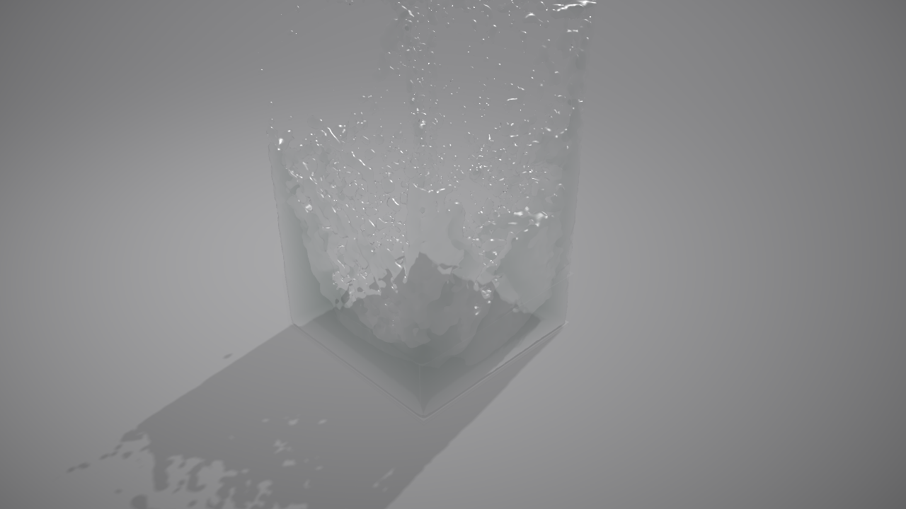
本書は、4 秒あまりの短い動画「【SPH法】水しぶきシミュレーション」を DirectX 11 で再現したプログラム waterfall を教材に、リアルタイム流体 CG の技術要素 ― 粒子法による流体シミュレーション、等値面からのメッシュ生成、そして水らしく見せるレンダリング ― を、理論と実際のコードの両面から解説します。
「水しぶき」は CG の題材の中でもとりわけ人気があり、同時に難しいものです。形が決まっていない、絶えず分裂と合体を繰り返す、透明で背景を屈折させる ― 剛体や布のように「形がある物」を扱う手法がそのままでは使えないからです。流体 CG は次の 3 つの問題に分解して考えるとすっきりします。
この 3 段階を、1 つの完結したプログラムに沿って、動く状態で追いかけられることが本書の特長です。数式は必ず「コードのどの行に対応するか」まで示し、コードは必ず「なぜその式になるか」まで戻って説明します。また、開発中に実際に起きた失敗 (最初のバージョンでは着水した瞬間に水が爆発した、など) と、その原因と対策も隠さず書きました。理論と実装のあいだにある「落とし穴」こそ、教科書には載りにくい、しかし最も役に立つ知識だからです。
教材となるプログラムは、次の構成の C++ / HLSL アプリケーションです (GitHub: githubtarohario/waterfall)。
| ファイル | 役割 | 対応する章 |
|---|---|---|
src/SimConfig.h | シーン配置・物理定数・カメラなど全パラメータ | 1, 8 |
src/D3DUtil.* | DirectX 11 の初期化とリソース生成の共通処理 | 2 |
src/SPHSimulator.*, shaders/sph*.hlsl* | GPU 上の SPH 流体シミュレーション | 3, 4 |
src/MarchingCubes.*, src/MCTables.*, shaders/mc.hlsl | 粒子から水面メッシュを生成 | 5 |
src/Renderer.*, shaders/water.hlsl など | 影・反射・屈折を含む描画 | 6 |
src/main.cpp | ウィンドウ、メインループ、入力、録画 | 7 |
合計およそ 2,500 行で、外部ライブラリは使っていません (Windows SDK に含まれる DirectX 11 と DirectXMath のみ)。全ソースコードは付録に収録しています。
第 1 章で全体像をつかんだ後は、興味のある章から読めるように書いてあります。ただし第 3 章 (SPH の理論) と第 4 章 (その GPU 実装) は対になっているので続けて読んでください。第 5 章のマーチングキューブ法は独立した題材なので、単独でも読めます。
各章の末尾には「実験してみよう」として、パラメータを変えて挙動を観察する課題を置きました。プログラムは build.bat 一発でビルドでき、--record オプションで連番画像を書き出せるので、本書の図はすべて読者の手元でも再現できます。
waterfall を指します。動画は Blender などの製品向けツールで作られた高品質なレンダーであり、本プログラムはそれをリアルタイム技術でどこまで近づけられるか、という挑戦でもあります。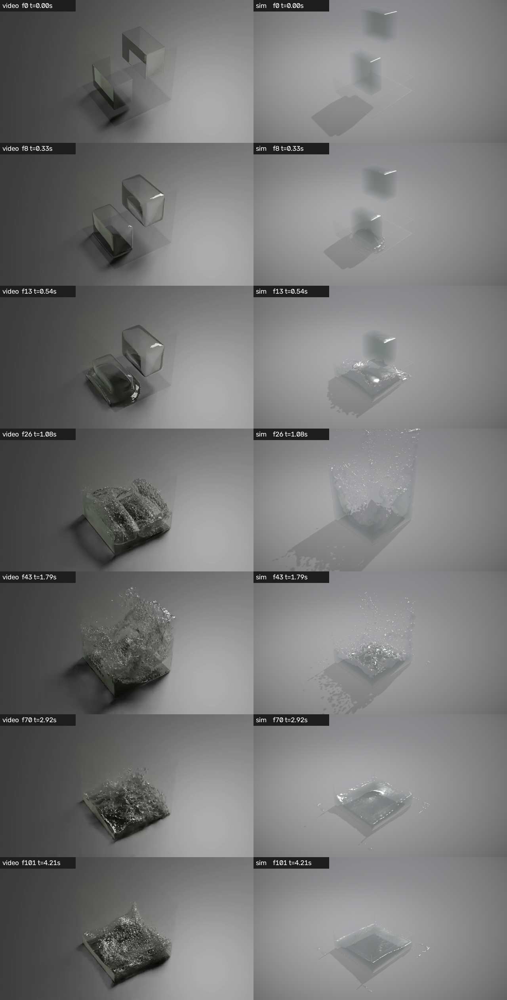
流体 CG のプログラムは「物理」「幾何」「描画」の 3 つの部品が順につながった流れ作業です。この章では部品同士の受け渡しと、時間をどう進めるかという設計を先に押さえます。細部は後の章に譲り、ここでは地図を作ります。
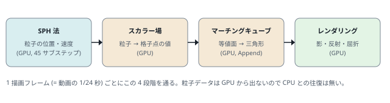
本プログラムでは水を 数万〜数十万個の粒子 として扱います。粒子は質量を持った小さな水の塊で、それぞれが位置と速度を持ち、周囲の粒子から圧力や粘性の力を受けて動きます。これが SPH 法です (第 3, 4 章)。
しかし粒子をそのまま描いても、ビーズの山にしか見えません。粒子の「密度が高い領域」を連続した面で包む必要があります。そのために空間を細かい格子に区切り、格子点ごとに「どれだけ粒子に近いか」を表す数値 (スカラー場) を計算し、その値がある閾値 (等値) になる面を三角形の集まりとして取り出します。この面の取り出し方がマーチングキューブ法です (第 5 章)。
最後に、得られた三角形メッシュを「水らしく」描きます。水は透明で、表面で光を反射し、内部を通る光を屈折・吸収します。完全な光の追跡 (レイトレーシング) はリアルタイムでは重すぎるため、スクリーン空間の近似で「それらしい」画を作ります (第 6 章)。
役割ごとにクラスを 1 つずつ用意し、main.cpp がそれらを順に呼び出します。依存関係は一方向で、下流のクラスは上流のクラスが公開する GPU リソース (バッファへの「ビュー」) だけを受け取ります。
graph TB
main["main.cpp
ウィンドウ / ループ / 入力 / 録画"]
cfg["SimConfig.h
全パラメータ"]
d3d["D3DContext
デバイス・バッファ・シェーダー生成"]
sph["SPHSimulator
粒子の位置・速度 (GPU)"]
mc["MarchingCubes
水面メッシュ (GPU)"]
ren["Renderer
影・反射・屈折・ポスト"]
main --> sph --> mc --> ren
main --> d3d
sph --> d3d
mc --> d3d
ren --> d3d
sph -.-> cfg
mc -.-> cfg
ren -.-> cfg
| クラス / ファイル | 公開しているもの | 受け取るもの |
|---|---|---|
D3DContext (D3DUtil.h) | デバイス、バッファ生成、シェーダーコンパイル | ウィンドウハンドル |
SPHSimulator | 粒子位置 (PositionSRV)、格子 (CellStartSRV)、パラメータ定数バッファ | 粒子間隔 |
MarchingCubes | 三角形バッファ (TriangleSRV)、描画引数 (DrawArgs) | SPHSimulator の格子と位置 |
Renderer | バックバッファへの描画結果 | 三角形バッファ、粒子位置 (デバッグ表示用) |
ゲームのようなリアルタイムアプリケーションでは「前のフレームから経過した実時間」だけ物理を進めるのが普通です。しかし本プログラムは 1 描画フレーム = 動画の 1 フレーム = 1/24 秒 という固定の物理時間を進めます。理由は 2 つあります。
その代わり、計算が間に合わなければ画面上の再生は遅くなります (スローモーションになる)。動画を書き出す用途では、--record で 1 フレームずつ画像を保存すれば、計算時間に関係なく 24fps の動画が得られます。
1/24 秒は SPH にとっては長すぎるので、内部ではさらに細かい サブステップ に分割します。分割数は粒子間隔から自動的に決まり (既定設定で 45 回)、1 サブステップは約 0.9 ミリ秒です。
以下が main.cpp の心臓部です。細かな入力処理を除けば、やっていることは「物理を進め、メッシュを作り、描き、表示する」の繰り返しだけです。
236 // --- シミュレーション (最初のフレームは初期状態を表示) ---
237 bool advance = (!g_app.paused || g_app.stepOnce) && !firstFrame;
238 if (advance) { sim.StepFrame(); ++frameIndex; g_app.stepOnce = false; }
239 firstFrame = false;
240
241 // --- 水面メッシュ生成と描画 ---
242 sim.SortParticles(); // MC の近傍探索用に格子を最新化
243 mc.Build(sim);
244 renderer.Render(sim, mc, sim.SimTime());
245 d3d.SwapChain()->Present(record ? 0 : 1, 0);sim.StepFrame() が 45 回のサブステップをまとめて実行します。その直後の sim.SortParticles() は、次のメッシュ生成のために粒子を空間格子に整列し直す処理で、この呼び出しが必要な理由は第 4 章で説明します。
物理量はすべて SI 単位 (メートル、キログラム、秒) で扱います。座標系は DirectX の慣習に従った 左手系で Y が上、水槽の中心が原点、水槽の内側の床が y = 0 です。水槽は 1 m 角、水塊は数十 cm の直方体です。
シーンの配置、物理定数、カメラ、ライトなど、調整して結果が変わる数値はすべて src/SimConfig.h の cfg 名前空間に集めてあります。本書で「既定値」と書いた数値はこのファイルの値です。全体を眺めておくと、以降の章でどの数値がどこに効くのかを追いやすくなります。
1 #pragma once
2 // =====================================================================
3 // SimConfig.h
4 // シミュレーション / シーン / 描画に関する調整パラメータをここに集約する。
5 // 動画「【SPH法】水しぶきシミュレーション」の構図を再現するための値。
6 //
7 // 座標系: 右手系ではなく DirectX 標準の左手系。Y が上。
8 // 水槽の中心が原点、水槽の内側の床が y = 0。単位は [m]。
9 // =====================================================================
10 #include <cstdint>
11
12 namespace cfg
13 {
14 // ----------------------------------------------------------------
15 // 表示・時間
16 // ----------------------------------------------------------------
17 constexpr int WINDOW_W = 1280; // ウィンドウ幅 (動画と同じ 16:9)
18 constexpr int WINDOW_H = 720; // ウィンドウ高さ
19 constexpr int SSAA = 2; // スーパーサンプリング倍率 (2 = 縦横2倍で描画して縮小)
20 constexpr float VIDEO_FPS = 24.0f; // 動画と同じ 24fps
21 constexpr float FRAME_DT = 1.0f / VIDEO_FPS; // 1 描画フレームで進める物理時間 [s]
22 constexpr float TOTAL_TIME = 4.25f; // 動画の長さ [s] (102 フレーム)
23
24 // ----------------------------------------------------------------
25 // SPH (Weakly Compressible SPH, Tait 状態方程式)
26 // ----------------------------------------------------------------
27 constexpr float DEFAULT_SPACING = 0.014f; // 初期配置の粒子間隔 d [m] (--spacing で変更可)
28 constexpr float H_PER_SPACING = 2.0f; // 平滑化長 h = d * 2 (近傍 ≒ 33 個)
29 constexpr float REST_DENSITY = 1000.0f; // 基準密度 ρ0 [kg/m^3]
30 constexpr float SOUND_SPEED = 12.0f; // 数値音速 c [m/s] (最大流速の ~4 倍。密度変動 ≒ 数%)
31 constexpr float TAIT_GAMMA = 7.0f; // Tait 方程式の指数 γ
32 constexpr float VISCOSITY_MU = 0.5f; // 物理粘性 μ [Pa·s] (Müller のラプラシアン型。減衰率 ≒ 22μ /s)
33 constexpr float ARTIFICIAL_VISC_ALPHA = 0.08f;// Monaghan 人工粘性 α (接近する粒子対の衝撃を減衰し飛散を抑える)
34 constexpr float COHESION_KAPPA = 0.0f; // 凝集力 κ (Becker & Teschner)。0 で無効
35 constexpr float XSPH_EPS = 0.15f; // XSPH 速度平滑化係数
36 // 動画の水槽は落下速度から推定すると幅 ≒ 2m。粒子数を抑えるため幾何は 1m 角で作り、
37 // フルード相似 (t ∝ sqrt(L/g)) により重力を 1/SCENE_SCALE にして同じ時間経過を再現する。
38 constexpr float SCENE_SCALE = 2.0f; // 実寸 / モデル寸法
39 constexpr float GRAVITY = 9.81f / SCENE_SCALE; // 相似則で縮小した重力加速度 [m/s^2]
40 constexpr float CFL = 0.4f; // クーラン数: dt = CFL * h / c
41 constexpr float WALL_RESTITUTION = 0.05f; // 壁衝突の反発係数
42 constexpr float WALL_FRICTION = 0.999f; // 壁接触中の接線速度減衰 (サブステップ毎。ガラスは滑りやすい)
43 constexpr float BOUNDARY_DENSITY_SCALE = 1.0f;// 壁近傍で欠損する近傍分の密度補正の強さ
44 constexpr float MAX_SPEED_PER_H = 0.5f; // 1 サブステップで h の 50% 以上動かないよう速度制限
45
46 // ----------------------------------------------------------------
47 // 水槽 (ガラス製・上面開放)。動画では壁がほとんど見えないため、
48 // 描画はごく薄いフレネル反射のみ (G キーで表示切替)。
49 // ----------------------------------------------------------------
50 constexpr float TANK_INNER_HALF = 0.50f; // 内側の半幅 (内寸 1.0m 角)
51 constexpr float TANK_WALL_THICKNESS = 0.02f; // ガラス壁の厚さ
52 constexpr float TANK_OUTER_HALF = TANK_INNER_HALF + TANK_WALL_THICKNESS;
53 constexpr float TANK_HEIGHT = 1.60f; // 衝突用の壁の高さ (動画では見えない透明な衝突箱。水は外へ出ない)
54 constexpr float GLASS_VISIBLE_HEIGHT = 0.30f; // 描画するガラス壁の高さ (動画で僅かに見える縁の部分だけ)
55 constexpr float TANK_FLOOR_Y = 0.0f; // 水槽内側の床の高さ
56 constexpr float FLOOR_Y = -TANK_WALL_THICKNESS; // スタジオ床 (ガラス底板の下面)
57
58 // ----------------------------------------------------------------
59 // シミュレーション領域 (粒子はこの AABB の外へ出ない)
60 // ----------------------------------------------------------------
61 constexpr float DOMAIN_MIN[3] = { -0.75f, FLOOR_Y, -0.75f };
62 constexpr float DOMAIN_MAX[3] = { 0.75f, 1.60f, 0.75f };
63
64 // ----------------------------------------------------------------
65 // 初期の水塊
66 // 現在は水槽中央の上空に 1 つだけ配置 (約 0.5 秒後に着地)。
67 // 動画と同じ 2 つ構成に戻すには、下のコメントアウトを有効にする:
68 // A: 手前左の薄くて背の高いブロック (すぐ着水する)
69 // B: 奥右の大きなブロック (少し遅れて A の水面へ落ちる)
70 // ----------------------------------------------------------------
71 struct WaterBlock { float mn[3]; float mx[3]; };
72 constexpr WaterBlock WATER_BLOCKS[] = {
73 { { -0.30f, 0.60f, -0.30f }, { 0.30f, 1.10f, 0.30f } }, // 中央の直方体 1 つ (0.6 x 0.5 x 0.6)
74 // { { -0.30f, 0.22f, 0.10f }, { 0.20f, 0.82f, 0.35f } }, // A (x に長く z に薄い。約 0.3 秒後に着地)
75 // { { -0.15f, 0.95f, -0.42f }, { 0.40f, 1.40f, -0.10f } }, // B (やや大きい箱。約 0.55 秒後に着水)
76 };
77 constexpr int NUM_WATER_BLOCKS = sizeof(WATER_BLOCKS) / sizeof(WATER_BLOCKS[0]);
78
79 // ----------------------------------------------------------------
80 // マーチングキューブ法
81 // ----------------------------------------------------------------
82 constexpr float MC_CELL_PER_SPACING = 0.75f; // MC 格子の間隔 = d * 0.75
83 constexpr float MC_FIELD_RADIUS_PER_SPACING = 2.0f; // スカラー場カーネル半径 R = d * 2 (= h)
84 constexpr float MC_ISO_LEVEL = 0.5f; // 等値面レベル (単独粒子の中心値が 1.0、平滑化 2 回後 ≒0.55)
85 constexpr int MC_SMOOTH_PASSES = 2; // スカラー場の 7 点平滑化の回数 (粒子由来の凹凸を抑える)
86 constexpr uint32_t MC_MAX_TRIANGLES = 1u << 20; // 三角形バッファ容量 (1M 個)
87
88 // ----------------------------------------------------------------
89 // カメラ・ライト (動画の構図に合わせた値)
90 // ----------------------------------------------------------------
91 constexpr float CAM_TARGET[3] = { -0.25f, 0.54f, 0.07f }; // 注視点 (水槽中心が画面の (47%, 68%) に来る位置)
92 constexpr float CAM_YAW_DEG = -45.0f; // 水槽の角が手前に来るコーナー視点 (カメラは -x,+z 側)
93 constexpr float CAM_PITCH_DEG = 30.0f; // 見下ろし角
94 constexpr float CAM_DISTANCE = 3.2f; // 注視点からの距離
95 constexpr float CAM_FOV_DEG = 40.0f; // 垂直画角
96 constexpr float LIGHT_DIR[3] = { 0.15f, 1.0f, -0.9f }; // 光源へ向かうベクトル (影は手前左へ落ちる)
97 }SUBSTEPS に相当する値は CFL から自動計算されます。CFL を 0.4 から 0.8 に上げるとサブステップ数は半分になり計算は速くなりますが、着水の瞬間に何が起きるか観察してください (第 3 章の安定条件の話につながります)。WATER_BLOCKS にブロックを 1 つ追加して、3 つの水塊が落ちるシーンを作ってみましょう。粒子数がタイトルバーに表示されます。GPU は「同じ処理を大量のデータに一斉に適用する」ことに特化した計算機です。本章では DirectX 11 を通して GPU に仕事をさせるための最小限の概念 ― デバイス、リソース、ビュー、シェーダー、そしてコンピュートシェーダー ― を、本プログラムの D3DUtil.cpp を読みながら身につけます。
CPU は少数の高性能なコアで複雑な分岐を伴う処理を得意とし、GPU は数千の単純なコアで同じ命令を並列に実行することを得意とします。流体シミュレーションは「全粒子について同じ計算をする」「全格子点について同じ計算をする」という典型的な GPU 向きの問題です。
DirectX 11 では、CPU 側のプログラムは次のことだけを行います。
コマンドは ID3D11DeviceContext を通じて発行され、GPU は非同期に処理します。CPU は結果を待たずに次のコマンドを積めるため、両者は並行して動きます。結果を CPU に読み戻す (Map) と、その時点で GPU の完了を待つことになるので、本プログラムでは統計表示用の三角形数を読む場面以外では読み戻しをしません。
ID3D11Device はリソース生成のための工場、ID3D11DeviceContext はコマンド発行のための窓口、IDXGISwapChain はウィンドウに表示するための画像 (バックバッファ) を管理するオブジェクトです。3 つはまとめて生成できます。
12 void D3DContext::Initialize(HWND hwnd, int width, int height, bool debugLayer)
13 {
14 m_width = width; m_height = height;
15
16 // 実行ファイルの場所から shaders/ ディレクトリを決める
17 wchar_t exePath[MAX_PATH];
18 GetModuleFileNameW(nullptr, exePath, MAX_PATH);
19 std::wstring dir = exePath;
20 dir = dir.substr(0, dir.find_last_of(L"\\/") + 1);
21 m_shaderDir = dir + L"shaders\\";
22 if (GetFileAttributesW((m_shaderDir + L"sph.hlsl").c_str()) == INVALID_FILE_ATTRIBUTES)
23 {
24 // ビルドディレクトリから実行した場合は 1 つ上の shaders/ を探す
25 m_shaderDir = dir + L"..\\shaders\\";
26 if (GetFileAttributesW((m_shaderDir + L"sph.hlsl").c_str()) == INVALID_FILE_ATTRIBUTES)
27 m_shaderDir = L"shaders\\"; // 最後はカレントディレクトリ
28 }
29
30 DXGI_SWAP_CHAIN_DESC sd = {};
31 sd.BufferCount = 2;
32 sd.BufferDesc.Width = width;
33 sd.BufferDesc.Height = height;
34 sd.BufferDesc.Format = DXGI_FORMAT_R8G8B8A8_UNORM;
35 sd.BufferDesc.RefreshRate = { 60, 1 };
36 sd.BufferUsage = DXGI_USAGE_RENDER_TARGET_OUTPUT;
37 sd.OutputWindow = hwnd;
38 sd.SampleDesc = { 1, 0 };
39 sd.Windowed = TRUE;
40 sd.SwapEffect = DXGI_SWAP_EFFECT_DISCARD;
41
42 UINT flags = 0;
43 if (debugLayer) flags |= D3D11_CREATE_DEVICE_DEBUG;
44 D3D_FEATURE_LEVEL levels[] = { D3D_FEATURE_LEVEL_11_1, D3D_FEATURE_LEVEL_11_0 };
45 D3D_FEATURE_LEVEL got;
46
47 HRESULT hr = D3D11CreateDeviceAndSwapChain(nullptr, D3D_DRIVER_TYPE_HARDWARE, nullptr, flags,
48 levels, 2, D3D11_SDK_VERSION, &sd, &m_swapChain, &m_device, &got, &m_context);
49 if (FAILED(hr) && debugLayer)
50 {
51 // デバッグレイヤーが無い環境では通常モードで再試行
52 flags &= ~D3D11_CREATE_DEVICE_DEBUG;
53 hr = D3D11CreateDeviceAndSwapChain(nullptr, D3D_DRIVER_TYPE_HARDWARE, nullptr, flags,
54 levels, 2, D3D11_SDK_VERSION, &sd, &m_swapChain, &m_device, &got, &m_context);
55 }
56 ThrowIfFailed(hr, "D3D11CreateDeviceAndSwapChain");
57
58 ThrowIfFailed(m_swapChain->GetBuffer(0, IID_PPV_ARGS(&m_backBuffer)), "GetBuffer");
59 ThrowIfFailed(m_device->CreateRenderTargetView(m_backBuffer.Get(), nullptr, &m_backBufferRTV), "CreateRenderTargetView");
60 }ポイントを 3 つ挙げます。
D3D_FEATURE_LEVEL_11_0 以上) を要求しています。コンピュートシェーダーと構造化バッファには 11.0 が必要です。D3D11_CREATE_DEVICE_DEBUG) を有効にすると、リソースの束縛ミスなどが実行時に警告として出ます。SDK が無い環境では失敗するので、失敗したら通常モードで再試行します。.hlsl を編集して結果を見られるのは開発中とても便利です。DirectX 11 でデータを置く場所を リソース と呼びます。バッファ (1 次元の配列) とテクスチャ (2 次元・3 次元の画像) の 2 種類があります。重要なのは、シェーダーはリソースを直接扱うのではなく、ビュー という「窓」を通して扱うことです。同じリソースでも、用途に応じて別のビューを作ります。
| ビュー | 略称 | 用途 | HLSL 側のレジスタ |
|---|---|---|---|
| Shader Resource View | SRV | シェーダーからの読み取り | t0, t1, … |
| Unordered Access View | UAV | シェーダーからの読み書き (順序保証なし) | u0, u1, … |
| Render Target View | RTV | ピクセルシェーダーの描き込み先 | (パイプライン出力) |
| Depth Stencil View | DSV | 深度テストの深度バッファ | (パイプライン出力) |
本プログラムで多用するのは 構造化バッファ (StructuredBuffer) です。C++ の構造体配列と同じイメージで、要素サイズ (stride) と要素数を指定して作ります。次の関数は 1 つのバッファに SRV と UAV の両方を作って返します。
62 GpuBuffer D3DContext::CreateStructured(UINT stride, UINT count, const void* initData, bool append)
63 {
64 GpuBuffer b; b.count = count; b.stride = stride;
65 D3D11_BUFFER_DESC desc = {};
66 desc.ByteWidth = stride * count;
67 desc.Usage = D3D11_USAGE_DEFAULT;
68 desc.BindFlags = D3D11_BIND_SHADER_RESOURCE | D3D11_BIND_UNORDERED_ACCESS;
69 desc.MiscFlags = D3D11_RESOURCE_MISC_BUFFER_STRUCTURED;
70 desc.StructureByteStride = stride;
71 D3D11_SUBRESOURCE_DATA init = { initData, 0, 0 };
72 ThrowIfFailed(m_device->CreateBuffer(&desc, initData ? &init : nullptr, &b.buffer), "CreateBuffer(structured)");
73
74 D3D11_SHADER_RESOURCE_VIEW_DESC srv = {};
75 srv.Format = DXGI_FORMAT_UNKNOWN;
76 srv.ViewDimension = D3D11_SRV_DIMENSION_BUFFER;
77 srv.Buffer.NumElements = count;
78 ThrowIfFailed(m_device->CreateShaderResourceView(b.buffer.Get(), &srv, &b.srv), "CreateShaderResourceView");
79
80 D3D11_UNORDERED_ACCESS_VIEW_DESC uav = {};
81 uav.Format = DXGI_FORMAT_UNKNOWN;
82 uav.ViewDimension = D3D11_UAV_DIMENSION_BUFFER;
83 uav.Buffer.NumElements = count;
84 uav.Buffer.Flags = append ? D3D11_BUFFER_UAV_FLAG_APPEND : 0;
85 ThrowIfFailed(m_device->CreateUnorderedAccessView(b.buffer.Get(), &uav, &b.uav), "CreateUnorderedAccessView");
86 return b;
87 }append=true のときの UAV には カウンタが付き、HLSL 側で AppendStructuredBuffer として使えます。何個書き込まれるか事前に分からない出力 (マーチングキューブ法の三角形がまさにそれです) を、各スレッドが「末尾に追加」する形で書けます。
UnbindCompute() で全スロットを空にする規約でこれを避けています。すべてのスレッドが共通に参照する少量のパラメータ (時間刻み、粒子数、行列など) は 定数バッファ で渡します。C++ の構造体をそのままコピーするだけですが、HLSL 側のメモリ配置規則 (16 バイト境界のパッキング) に合わせる必要があります。
float3 の後に float を置くと 1 レジスタに収まるが、float の後に float3 を置くと隙間ができる。本プログラムでは C++ 側の構造体を「float3 + float」の組で並べ、HLSL の cbuffer と同じ順序にすることで、隙間なく一致させています。C++ の alignas(16) は構造体全体の先頭を揃えるためのものです。
15 struct alignas(16) SimParams
16 {
17 float domainMin[3]; float cellSize;
18 float domainMax[3]; float h;
19 uint32_t gridDim[3]; uint32_t numCells;
20 float h2; float mass;
21 float restDensity; float taitB;
22 float viscosity; float xsphEps;
23 float dt; float gravity;
24 float poly6; float spikyGrad;
25 float viscLap; float tankInner;
26 float tankOuter; float tankHeight;
27 float tankFloorY; float floorY;
28 float restitution; float friction;
29 float maxSpeed; float boundaryDensityScale;
30 uint32_t numParticles; float artificialAlpha; float cohesion; float soundSpeed;
31 }; 9 cbuffer SimParams : register(b0)
10 {
11 float3 domainMin; float cellSize; // 領域最小 / 格子セル幅 (= h)
12 float3 domainMax; float h; // 領域最大 / 平滑化長
13 uint3 gridDim; uint numCells; // 格子の分割数 / 総セル数
14 float h2; float mass; // h^2 / 粒子質量
15 float restDensity; float taitB; // 基準密度 / Tait 方程式の剛性 B
16 float viscosity; float xsphEps; // 粘性係数 μ / XSPH 係数
17 float dt; float gravity; // サブステップ時間 / 重力加速度
18 float poly6; float spikyGrad; // カーネル正規化定数
19 float viscLap; float tankInner; // 粘性ラプラシアン定数 / 水槽内側半幅
20 float tankOuter; float tankHeight; // 水槽外側半幅 / 壁の高さ
21 float tankFloorY; float floorY; // 水槽内の床 / スタジオ床
22 float restitution; float friction; // 壁の反発係数 / 接線減衰
23 float maxSpeed; float boundaryDensityScale; // 速度上限 / 境界密度補正
24 uint numParticles; float artificialAlpha; // 粒子数 / Monaghan 人工粘性 α
25 float cohesion; float soundSpeed; // 凝集力 κ / 数値音速 c
26 };シェーダーは HLSL (High Level Shading Language) という C 風の言語で書き、実行時に D3DCompileFromFile でコンパイルします。1 つの .hlsl ファイルに複数のエントリポイント (関数) を書いておき、エントリ名を指定して別々のシェーダーオブジェクトを作れます。本プログラムの sph.hlsl は 7 つの、mc.hlsl は 4 つのコンピュートシェーダーを 1 ファイルに持っています。
147 ComPtr<ID3DBlob> D3DContext::CompileShader(const std::wstring& file, const char* entry, const char* target)
148 {
149 std::wstring path = m_shaderDir + file;
150 UINT flags = D3DCOMPILE_ENABLE_STRICTNESS | D3DCOMPILE_OPTIMIZATION_LEVEL3;
151 ComPtr<ID3DBlob> code, errors;
152 HRESULT hr = D3DCompileFromFile(path.c_str(), nullptr, D3D_COMPILE_STANDARD_FILE_INCLUDE,
153 entry, target, flags, 0, &code, &errors);
154 if (FAILED(hr))
155 {
156 std::string msg = "Shader compile error: " + std::string(entry) + "\n";
157 if (errors) msg += (const char*)errors->GetBufferPointer();
158 else msg += "(file not found?) ";
159 std::fprintf(stderr, "%s\n", msg.c_str());
160 throw std::runtime_error(msg);
161 }
162 return code;
163 }コンパイルエラーはメッセージ付きで例外にしています。シェーダーのエラーメッセージはファイル名と行番号を含むので、C++ のコンパイルエラーと同じ感覚で直せます。
従来の GPU は「頂点を変換して三角形を塗る」ための固定された流れ (グラフィックスパイプライン) しか持ちませんでした。コンピュートシェーダー はその流れから独立して、任意の計算を並列に走らせる仕組みです。SPH もマーチングキューブ法もここで実行します。
コンピュートシェーダーは 3 段階の階層で並列度を指定します。
SV_DispatchThreadID で自分の通し番号を知る。[numthreads(256,1,1)] のように固定する。同じグループのスレッドは groupshared メモリを共有し、GroupMemoryBarrierWithGroupSync() で同期できる。粒子が N 個あるとき、1 グループ 256 スレッドなら Dispatch(ceil(N/256), 1, 1) です。最後のグループには余りのスレッドが出るので、シェーダーの冒頭で if (i >= numParticles) return; と範囲チェックをします。
47 // ---------------------------------------------------------------------
48 // 2. 粒子の所属セルを求めてカウント (アトミック加算で順序番号を確保)
49 // ---------------------------------------------------------------------
50 [numthreads(THREADS, 1, 1)]
51 void CS_Count(uint3 id : SV_DispatchThreadID)
52 {
53 uint i = id.x;
54 if (i >= numParticles) return;
55 uint cell = CellId(CellCoord(gPosIn[i].xyz));
56 uint offset;
57 InterlockedAdd(gCellCount[cell], 1, offset);
58 gCellIndexRW[i] = cell;
59 gCellOffsetRW[i] = offset;
60 }上の例は「各粒子がどのセルに属するかを数える」シェーダーです。InterlockedAdd は アトミック演算 で、複数のスレッドが同時に同じカウンタに加算しても正しく数えられることを保証し、しかも「加算前の値」を返してくれます。この返り値がそのまま「セル内で何番目の粒子か」という順序番号になる ― これはカウンティングソートの核心で、第 4 章で活躍します。
C++ 側では、シェーダー・定数バッファ・入出力ビューをそれぞれのスロットに束縛してから Dispatch を呼びます。以下は SPH の格子構築 (第 4 章) の C++ 側です。1 つ 1 つの setSRV / setUAV が HLSL の register(t#) / register(u#) に対応しています。
166 void SPHSimulator::SortParticles()
167 {
168 ID3D11DeviceContext* ctx = m_d3d->Context();
169 const UINT N = m_params.numParticles;
170 ID3D11Buffer* cb = m_paramsCB.Get();
171 ctx->CSSetConstantBuffers(0, 1, &cb);
172
173 auto setSRV = [&](UINT slot, ID3D11ShaderResourceView* v) { ctx->CSSetShaderResources(slot, 1, &v); };
174 auto setUAV = [&](UINT slot, ID3D11UnorderedAccessView* v) { ctx->CSSetUnorderedAccessViews(slot, 1, &v, nullptr); };
175
176 // 1. セルカウンタのクリア
177 ctx->CSSetShader(m_csClear.Get(), nullptr, 0);
178 setUAV(0, m_cellCount.uav.Get());
179 ctx->Dispatch(Groups(m_params.numCells), 1, 1);
180 m_d3d->UnbindCompute();
181
182 // 2. 所属セルのカウント
183 ctx->CSSetShader(m_csCount.Get(), nullptr, 0);
184 setSRV(0, m_pos[m_cur].srv.Get());
185 setUAV(0, m_cellCount.uav.Get());
186 setUAV(2, m_cellIndex.uav.Get());
187 setUAV(3, m_cellOffset.uav.Get());
188 ctx->Dispatch(Groups(N), 1, 1);
189 m_d3d->UnbindCompute();
190
191 // 3. 累積和
192 ctx->CSSetShader(m_csScan.Get(), nullptr, 0);
193 setUAV(0, m_cellCount.uav.Get());
194 setUAV(1, m_cellStart.uav.Get());
195 ctx->Dispatch(1, 1, 1);
196 m_d3d->UnbindCompute();
197
198 // 4. 並べ替え (cur → 1-cur)
199 ctx->CSSetShader(m_csReorder.Get(), nullptr, 0);
200 setSRV(0, m_pos[m_cur].srv.Get());
201 setSRV(1, m_vel[m_cur].srv.Get());
202 setSRV(2, m_cellStart.srv.Get());
203 setSRV(6, m_cellIndex.srv.Get());
204 setSRV(7, m_cellOffset.srv.Get());
205 setUAV(4, m_pos[1 - m_cur].uav.Get());
206 setUAV(5, m_vel[1 - m_cur].uav.Get());
207 ctx->Dispatch(Groups(N), 1, 1);
208 m_d3d->UnbindCompute();
209 m_cur = 1 - m_cur;
210 }描画 (第 6 章) では従来のパイプラインも使います。本書に必要な範囲だけまとめます。
| 段階 | 役割 | 本プログラムでの例 |
|---|---|---|
| 入力アセンブラ (IA) | 頂点バッファから頂点を取り出す | 床・ガラスは頂点バッファ、水面は SV_VertexID から自前で取り出す |
| 頂点シェーダー (VS) | 頂点をクリップ座標へ変換 | mul(float4(p,1), viewProj) |
| ラスタライザ (RS) | 三角形をピクセルに分解、裏面カリング | 水面は裏面カリング、影は両面 |
| ピクセルシェーダー (PS) | ピクセルの色を計算 | フレネル反射・屈折・吸収 |
| 出力マージャ (OM) | 深度テスト、ブレンド、RTV へ書き込み | ガラスは乗算済みアルファでブレンド |
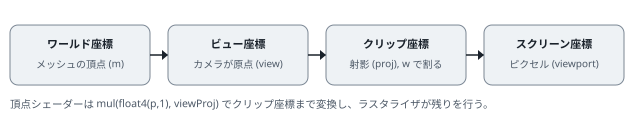
マーチングキューブ法が出力する三角形は構造化バッファに入っています。これを頂点バッファにコピーし直すのは無駄なので、頂点シェーダーが SV_VertexID (頂点の通し番号) を受け取って構造化バッファから直接読み出します。頂点数は GPU 上のカウンタから DrawInstancedIndirect に渡すので、CPU は三角形数を知る必要すらありません。
28 // 頂点 ID から三角形バッファの頂点を取り出す
29 MCVertex FetchVertex(uint vid)
30 {
31 MCTriangle t = gTriangles[vid / 3];
32 uint c = vid % 3;
33 if (c == 0) return t.v0;
34 if (c == 1) return t.v1;
35 return t.v2;
36 }
37
38 VSOut VS_Water(uint vid : SV_VertexID)
39 {
40 MCVertex v = FetchVertex(vid);
41 VSOut o;
42 o.pos = mul(float4(v.p, 1.0), viewProj);
43 o.worldPos = v.p;
44 o.normal = v.n;
45 o.viewZ = mul(float4(v.p, 1.0), view).z;
46 return o;MCTriangle を丸ごと読んで 3 分岐する書き方は、動的インデックスよりも確実にコンパイルされます。| 機能 | 使用箇所 |
|---|---|
コンピュートシェーダー (cs_5_0)、Dispatch | SPH 全パス、スカラー場、マーチングキューブ |
| StructuredBuffer / RWStructuredBuffer | 粒子データ、格子、スカラー場 |
AppendStructuredBuffer + CopyStructureCount | 三角形の出力とその個数 |
RWByteAddressBuffer + DrawInstancedIndirect | GPU で作った頂点数で描画 |
| InterlockedAdd (アトミック)、groupshared メモリ、バリア | セルのカウント、並列累積和 |
| 深度テクスチャの SRV 読み出し (TYPELESS フォーマット) | 屈折の厚み推定、シャドウマップ |
比較サンプラ (SampleCmpLevelZero) | シャドウマップの PCF |
| HDR レンダーターゲット (R16G16B16A16_FLOAT)、ブレンドステート | 水面・ガラス・ポストプロセス |
--debug オプションでデバッグレイヤーを有効にし、SPHSimulator::Step() のどれか 1 つの UnbindCompute() をコメントアウトして実行してみましょう。Visual Studio の出力ウィンドウ (または DebugView) に、SRV/UAV の競合警告が出ることを確認できます。THREADS (sph.hlsl) と Groups() (SPHSimulator.cpp) を 256 から 64 に変えると速度はどう変わるでしょうか。GPU のアーキテクチャによって最適なグループサイズは異なります。SPH (Smoothed Particle Hydrodynamics) は、流体を「動き回る粒子の集まり」として表し、各粒子の周囲の粒子から物理量を滑らかに補間する手法です。もともと天体物理学 (1977 年、Lucy / Gingold & Monaghan) で生まれ、CG には Müller らの 2003 年の論文で持ち込まれました。本章では、流体力学の基礎方程式から出発して、本プログラムのシェーダーに書かれている式が一つずつどこから来るのかを導きます。
水の運動は ナビエ・ストークス方程式 で記述されます。粒子とともに動く視点 (ラグランジュ的視点) で書くと、粒子の速度 \(\mathbf{v}\) の時間変化は
です。右辺は順に 圧力の勾配 (圧力が高い側から低い側へ押される力)、粘性 (周囲との速度差をならす力)、重力 です。\(\rho\) は密度、\(\mu\) は粘性係数です。SPH の主な仕事は、この右辺を「近くの粒子の値の重み付き和」で計算することに尽きます。
もう一つ、質量保存 (連続の式) があります。粒子法では各粒子が固定の質量 \(m\) を持って動くので、質量保存は自動的に満たされます。その代わり、密度は「粒子がどれだけ密集しているか」から計算する必要があります。
SPH の基本アイデアは、任意の場所 \(\mathbf{x}\) における物理量 \(A\) を、周囲の粒子 \(j\) の値 \(A_j\) を重み \(W\) で平均して求めることです。
\(m_j / \rho_j\) は粒子 \(j\) の体積です。つまりこれは「体積で重み付けした平均」で、\(W\) は距離が近いほど大きく、平滑化長 \(h\) より遠いと 0 になる関数 (カーネル) です。\(W\) は全空間で積分すると 1 になるよう正規化されます。
この式の便利なところは、微分が カーネルの微分 に移せることです。\(A_j\) は粒子に張り付いた定数なので、
となり、勾配やラプラシアンが「あらかじめ解析的に微分しておいたカーネル」の和で求まります。格子も差分も要りません。これが SPH が「メッシュフリー」と呼ばれる理由です。
Müller らは、密度・圧力・粘性の計算にそれぞれ性質の良いカーネルを使い分けることを提案しました。本プログラムもそれに従っています。\(r = |\mathbf{x} - \mathbf{x}_j|\), \(r < h\) のとき
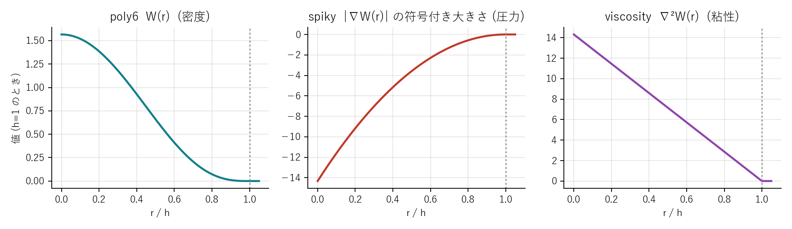
本プログラムでは正規化定数 \(315/(64\pi h^9)\) などを C++ 側で一度だけ計算し、定数バッファの poly6, spikyGrad, viscLap としてシェーダーに渡しています (SPHSimulator::Initialize)。
補間式に \(A = \rho\) を代入すると \(m_j/\rho_j\) と \(\rho_j\) が打ち消し合い、密度は単純に
です。自分自身 (\(j = i\)) も和に含めます。「近くに粒子が多いほど密度が高い」という直感そのものです。
粒子は間隔 \(d\) の格子に並べて初期化します。このとき内部の粒子の密度が基準密度 \(\rho_0 = 1000\ \mathrm{kg/m^3}\) にぴったりなるように質量を決めれば、静止した水塊が「最初から平衡状態」になり、初期化直後に不自然な膨張・収縮が起きません。格子上の 1 点について \(\sum_j W\) を実際に足し合わせ、\(m = \rho_0 / \sum_j W\) とします。
51 // 粒子質量: 格子上に静止した内部粒子の密度が ρ0 になるよう決める
52 {
53 double sumW = 0.0;
54 int n = (int)std::ceil(h / spacing);
55 for (int z = -n; z <= n; ++z) for (int y = -n; y <= n; ++y) for (int x = -n; x <= n; ++x)
56 {
57 float r2 = (x * x + y * y + z * z) * spacing * spacing;
58 if (r2 < h * h) { float t = h * h - r2; sumW += (double)p.poly6 * t * t * t; }
59 }
60 p.mass = (float)(cfg::REST_DENSITY / sumW);水はほとんど圧縮しません。厳密に非圧縮を課すと、圧力を求めるために大規模な連立方程式 (ポアソン方程式) を解く必要があり、実装が複雑になります。代わりに「わずかに圧縮を許し、密度が上がったら強い圧力で押し返す」という 弱圧縮性 SPH (WCSPH) を採用します。密度から圧力を直接計算する式を 状態方程式 と呼び、本プログラムでは Tait の式 を使います。
\(c\) は「数値的な音速」です。本物の水の音速 (1500 m/s) を使うと圧力が硬すぎて時間刻みを極端に小さくしなければならないので、流れの最大速度の数倍程度 (本プログラムでは 12 m/s) に下げます。密度変動は概ね \((v/c)^2\) の程度に収まるので、最大流速 3 m/s なら数 % です。
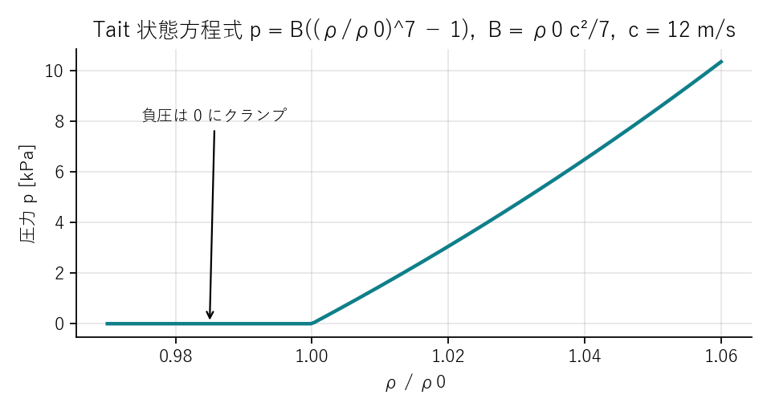
自由表面 (水と空気の境界) 付近の粒子は片側に隣人がいないため、密度が \(\rho_0\) を下回ります。Tait の式をそのまま使うと負の圧力、すなわち粒子同士を 引き寄せる 力が生まれ、表面の粒子が塊になって固まる「引張不安定性」が起きます。実際の水の表面張力とは異なる数値的な現象なので、本プログラムでは \(p = \max(0, \cdot)\) として負圧を捨てています。
148 // ---------------------------------------------------------------------
149 // 5. 密度と圧力
150 // ---------------------------------------------------------------------
151 [numthreads(THREADS, 1, 1)]
152 void CS_Density(uint3 id : SV_DispatchThreadID)
153 {
154 uint i = id.x;
155 if (i >= numParticles) return;
156
157 float3 pi = gPosIn[i].xyz;
158 int3 c = CellCoord(pi);
159 float sum = 0.0;
160
161 // 27 近傍セルを走査
162 for (int dz = -1; dz <= 1; ++dz)
163 for (int dy = -1; dy <= 1; ++dy)
164 for (int dx = -1; dx <= 1; ++dx)
165 {
166 int3 nc = c + int3(dx, dy, dz);
167 if (!CellValid(nc)) continue;
168 uint cell = CellId(nc);
169 uint s = gCellStart[cell], e = gCellStart[cell + 1];
170 for (uint j = s; j < e; ++j)
171 {
172 float3 r = pi - gPosIn[j].xyz;
173 float r2 = dot(r, r);
174 if (r2 < h2)
175 {
176 float t = h2 - r2;
177 sum += t * t * t; // poly6 (自分自身の寄与も含む)
178 }
179 }
180 }
181
182 float rho = mass * poly6 * sum + BoundaryDensity(pi);
183 rho = max(rho, restDensity * 0.1);
184
185 // Tait 方程式: p = B ((ρ/ρ0)^7 - 1)。負圧は 0 にクランプ (クラスタリング防止)
186 float ratio = rho / restDensity;
187 float r2_ = ratio * ratio;
188 float r7 = r2_ * r2_ * r2_ * ratio;
189 float p = max(0.0, taitB * (r7 - 1.0));
190
191 gDensPresRW[i] = float2(rho, p);
192 }コードの r7 は \((\rho/\rho_0)^7\) を掛け算 4 回で計算しています (pow より速い)。BoundaryDensity は次節の境界処理です。
圧力勾配の項 \(-\nabla p / \rho\) を補間式で書くと
となります。単純に \(\nabla p\) を補間した式 \(\sum_j m_j (p_j/\rho_j)\nabla W\) ではなく、\(p_i\) と \(p_j\) を対称に含む形にしてあります。この 対称形 (Monaghan の形) にすると、粒子 \(i\) が \(j\) に及ぼす力と \(j\) が \(i\) に及ぼす力が大きさ等しく逆向きになり (作用・反作用)、運動量が保存されます。非対称な形では粒子対の間で運動量が湧き出し、シミュレーション全体が勝手に加速する不具合が起きます。
\(\nabla W_{\text{spiky}}\) の向きは \(\hat{\mathbf{r}} = (\mathbf{x}_i - \mathbf{x}_j)/r\) の逆、つまり粒子 \(i\) から \(j\) へ向かいます (距離が縮む方向がカーネルの増える方向)。先頭のマイナスと合わせて、加速度は \(j\) から離れる向き ― 反発 ― になります。コードでは spikyGrad が負の定数として渡され、aPress -= mass * (...) * gradW で同じことをしています。
粘性項 \(\mu \nabla^2 \mathbf{v} / \rho\) は速度のラプラシアンです。ラプラシアンは「周囲の平均との差」を表す演算子なので、粘性は各粒子の速度を周囲の平均速度に近づける働きをします。
速度の「差」をカーネルで重み付けしているので、周囲と同じ速度で動いている粒子には力が働きません。
本物の水の \(\mu\) は 0.001 Pa·s ですが、この項は本プログラムの粒子間隔では効果がほぼゼロです。減衰率を概算すると、\(\mu\) を 1 増やすごとに毎秒約 22 の割合でしか速度差が減りません。一方、大きくしすぎると時間刻み \(\Delta t\) との積が 1 を超えて発散します (陽的な拡散の安定条件)。既定値 0.5 は「安定に大きく振れる範囲の中で、見た目に効きすぎない値」です。
ここで、開発中に起きた失敗を紹介します。最初のバージョンは圧力・粘性・重力だけを実装していました。水塊を床に落とすと、着水した瞬間に 水が霧のように四方に爆発 しました。原因は、着水時に粒子が互いに高速で接近して密度が急上昇し、Tait の式が生む巨大な圧力パルスが、減衰される前に粒子を弾き飛ばしていたことです。
この「衝撃」を吸収するのが Monaghan の 人工粘性 です。粒子対が 接近しているときだけ (\(\mathbf{v}_{ij}\cdot\mathbf{r}_{ij} < 0\)) 働く抵抗を追加します。
ここで \(\mathbf{v}_{ij} = \mathbf{v}_i - \mathbf{v}_j\)、\(\bar\rho_{ij}\) は 2 粒子の平均密度、\(\alpha\) は無次元の係数 (既定 0.08) です。接近速度に比例した「圧力の上乗せ」として働くため、衝撃波の前面で運動エネルギーを熱 (数値的な散逸) に変え、粒子が弾け飛ぶのを防ぎます。分母の \(0.01h^2\) は粒子が極端に近づいたときのゼロ割り防止です。
SPH 粒子は互いにすり抜けやすく、隣り合う粒子がバラバラの速度で動くとノイズだらけの表面になります。XSPH は「粒子を動かすときの速度」を、周囲の平均速度に少し寄せる補正です。
重要なのは、補正後の \(\hat{\mathbf{v}}\) は 位置の更新にだけ使い、粒子が持つ速度そのものは書き換えないことです。運動量を変えずに動きだけを揃えるので、エネルギーを不自然に失いません。\(\epsilon\) は 0〜1 の係数で、既定値 0.15 です。
ここまでの 4 つの項 (圧力・粘性・人工粘性・XSPH) は同じ近傍ループの中で一度に計算できます。以下が本プログラムの力計算シェーダーです。近傍探索の仕組み (27 セルの走査) は第 4 章で説明するので、ここではループの中身に注目してください。
194 // ---------------------------------------------------------------------
195 // 6. 力の計算 (加速度) と XSPH 補正
196 // 出力: gAccelRW (u7) = 加速度, gVelOut (u5) = XSPH 補正速度
197 // ※ u5 には C++ 側で専用の XSPH バッファを束縛する (速度バッファではない)
198 // ---------------------------------------------------------------------
199 [numthreads(THREADS, 1, 1)]
200 void CS_Force(uint3 id : SV_DispatchThreadID)
201 {
202 uint i = id.x;
203 if (i >= numParticles) return;
204
205 float3 pi = gPosIn[i].xyz;
206 float3 vi = gVelIn[i].xyz;
207 float2 dpi = gDensPres[i];
208 float rhoi = dpi.x, presi = dpi.y;
209 float pTermI = presi / (rhoi * rhoi);
210 int3 c = CellCoord(pi);
211
212 float3 aPress = 0.0; // 圧力項
213 float3 aVisc = 0.0; // 粘性項 (ラプラシアン型)
214 float3 aArt = 0.0; // Monaghan 人工粘性
215 float3 aCoh = 0.0; // 凝集力
216 float3 xsph = 0.0; // XSPH
217
218 for (int dz = -1; dz <= 1; ++dz)
219 for (int dy = -1; dy <= 1; ++dy)
220 for (int dx = -1; dx <= 1; ++dx)
221 {
222 int3 nc = c + int3(dx, dy, dz);
223 if (!CellValid(nc)) continue;
224 uint cell = CellId(nc);
225 uint s = gCellStart[cell], e = gCellStart[cell + 1];
226 for (uint j = s; j < e; ++j)
227 {
228 if (j == i) continue;
229 float3 r = pi - gPosIn[j].xyz;
230 float r2 = dot(r, r);
231 if (r2 >= h2 || r2 < 1e-12) continue;
232
233 float rl = sqrt(r2);
234 float2 dpj = gDensPres[j];
235 float rhoj = dpj.x;
236 float3 vj = gVelIn[j].xyz;
237 float t = h - rl;
238
239 // 圧力 (Monaghan の対称形): a = -Σ m (pi/ρi² + pj/ρj²) ∇W_spiky
240 float3 gradW = spikyGrad * t * t * (r / rl); // spikyGrad は負の定数
241 aPress -= mass * (pTermI + dpj.y / (rhoj * rhoj)) * gradW;
242
243 // 粘性: f = μ Σ m (vj - vi)/ρj ∇²W_visc
244 aVisc += (vj - vi) * (mass / rhoj) * (viscLap * t);
245
246 // Monaghan 人工粘性: 接近中 (v·r < 0) の粒子対にだけ働く衝撃減衰
247 // Π = -α c h (v·r) / (|r|² + 0.01h²) / ρ̄, a -= Σ m Π ∇W
248 float vr = dot(vi - vj, r);
249 if (vr < 0.0)
250 {
251 float piij = -artificialAlpha * soundSpeed * h * vr / (r2 + 0.01 * h2) / (0.5 * (rhoi + rhoj));
252 aArt -= mass * piij * gradW;
253 }
254
255 // 凝集力 (Becker & Teschner): a = -κ Σ (xi - xj) W_poly6
256 float w = h2 - r2;
257 aCoh -= r * (poly6 * w * w * w);
258
259 // XSPH: Σ (m/ρj)(vj - vi) W_poly6
260 xsph += (vj - vi) * (mass / rhoj) * (poly6 * w * w * w);
261 }
262 }
263
264 float3 accel = aPress + viscosity * aVisc / rhoi + aArt + cohesion * aCoh + float3(0.0, -gravity, 0.0);
265 gAccelRW[i] = float4(accel, 0.0);
266 gVelOut[i] = float4(xsph, 0.0);
267 }数式との対応を表にします。
| 数式 | コード |
|---|---|
| \(\nabla W_{\text{spiky}} = -\frac{45}{\pi h^6}(h-r)^2 \hat{\mathbf r}\) | gradW = spikyGrad * t * t * (r / rl) |
| \(-m(p_i/\rho_i^2 + p_j/\rho_j^2)\nabla W\) | aPress -= mass * (pTermI + dpj.y / (rhoj*rhoj)) * gradW |
| \(m (\mathbf v_j - \mathbf v_i)/\rho_j \cdot \frac{45}{\pi h^6}(h-r)\) | aVisc += (vj - vi) * (mass / rhoj) * (viscLap * t) |
| \(\Pi_{ij}\), \(-m\Pi_{ij}\nabla W\) | piij = ...; aArt -= mass * piij * gradW |
| \((m/\rho_j)(\mathbf v_j - \mathbf v_i) W_{\text{poly6}}\) | xsph += (vj - vi) * (mass / rhoj) * (poly6 * w*w*w) |
| \(\mathbf a = \mathbf a^{\text{press}} + \frac{\mu}{\rho_i}\mathbf a^{\text{visc}} + \mathbf a^{\text{art}} + \mathbf g\) | accel = aPress + viscosity * aVisc / rhoi + aArt + cohesion * aCoh + float3(0,-gravity,0) |
aCoh は Becker & Teschner の凝集力 (簡易的な表面張力) で、既定では係数 0 で無効です。第 9 章で触れます。
加速度が求まったら、速度と位置を時間 \(\Delta t\) だけ進めます。本プログラムは シンプレクティック・オイラー法 (半陰的オイラー法) を使います。
「先に速度を更新し、更新後の速度で位置を進める」だけの違いですが、位置を古い速度で進める普通のオイラー法と比べてエネルギーが単調に増えにくく、振動系で格段に安定します。実装コストは同じなので、粒子シミュレーションではほぼ常にこちらを使います。
陽的な時間積分では、1 ステップで情報が伝わる距離が粒子の間隔を超えてはいけません。圧力波は音速 \(c\) で伝わるので、
が必要です (CFL 条件)。本プログラムはこの上限を満たす最大の \(\Delta t\) で 1/24 秒を等分割し、サブステップ数を自動決定します。既定設定 (\(h = 0.028\), \(c = 12\)) では \(\Delta t \approx 0.93\) ms、45 サブステップです。粒子を細かくすると \(h\) が縮み、サブステップ数は増えます。
63 // 時間刻み: CFL 条件 dt = CFL * h / c を満たす最大の dt でフレームを等分割
64 float dtMax = cfg::CFL * h / cfg::SOUND_SPEED;
65 m_substepsPerFrame = (uint32_t)std::ceil(cfg::FRAME_DT / dtMax);
66 p.dt = cfg::FRAME_DT / m_substepsPerFrame;
67 p.maxSpeed = cfg::MAX_SPEED_PER_H * h / p.dt;maxSpeed は「1 サブステップで \(h\) の半分以上動かない」という安全装置です。何かの拍子に 1 粒子だけ異常な速度を持ったとき、それが近傍探索の前提 (1 ステップで隣のセルより遠くへ行かない) を壊して連鎖的に壊れるのを防ぎます。
水槽の壁や床は、粒子にとって「越えられない面」です。本プログラムでは 2 種類の処理を組み合わせています。
積分後に粒子が壁の外側に出ていたら、壁面まで押し戻し、壁に垂直な速度成分を反転 (反発係数 0.05 でほぼ止める) します。接線方向の速度には摩擦として僅かな減衰 (0.999 倍) をかけます。ガラス面は滑りやすいので摩擦はごく弱くしてあります。
269 // ---------------------------------------------------------------------
270 // 7. 時間積分 (シンプレクティック・オイラー) と境界処理
271 // gPosOut/gVelOut は入力とは別のバッファ (ピンポン)。C++ 側で入れ替える。
272 // ---------------------------------------------------------------------
273 [numthreads(THREADS, 1, 1)]
274 void CS_Integrate(uint3 id : SV_DispatchThreadID)
275 {
276 uint i = id.x;
277 if (i >= numParticles) return;
278
279 float3 pOld = gPosIn[i].xyz;
280 float3 v = gVelIn[i].xyz + gAccel[i].xyz * dt;
281
282 // 速度上限 (爆発防止)
283 float speed = length(v);
284 if (speed > maxSpeed) v *= maxSpeed / speed;
285
286 // XSPH 補正は移流にのみ使う
287 float3 vAdv = v + xsphEps * gXsph[i].xyz;
288 float3 p = pOld + vAdv * dt;
289
290 const float eps = 1e-4;
291 bool wasInside = InsideTankFootprint(pOld);
292
293 // --- 水槽の壁 (壁の高さより低い位置でのみ有効) ---
294 if (p.y < tankHeight)
295 {
296 if (wasInside)
297 {
298 // 内側の粒子は内壁を越えない
299 float lim = tankInner - eps;
300 if (abs(p.x) > lim) { v.x = -v.x * restitution; v.yz *= friction; p.x = sign(p.x) * lim; }
301 if (abs(p.z) > lim) { v.z = -v.z * restitution; v.xy *= friction; p.z = sign(p.z) * lim; }
302 }
303 else
304 {
305 // 外側の粒子はガラス壁の帯 (inner..outer) に侵入しない
306 if (abs(p.x) < tankOuter && abs(p.z) < tankOuter)
307 {
308 float penX = tankOuter - abs(p.x);
309 float penZ = tankOuter - abs(p.z);
310 if (penX < penZ) { p.x = sign(p.x) * (tankOuter + eps); v.x = -v.x * restitution; }
311 else { p.z = sign(p.z) * (tankOuter + eps); v.z = -v.z * restitution; }
312 }
313 }
314 }
315
316 // --- 床 (水槽内はガラス底板の上、外はスタジオ床) ---
317 float floorLevel = InsideTankFootprint(p) ? tankFloorY : floorY;
318 if (p.y < floorLevel + eps)
319 {
320 p.y = floorLevel + eps;
321 if (v.y < 0.0) v.y = -v.y * restitution;
322 v.xz *= friction;
323 }
324
325 // --- シミュレーション領域の外壁 ---
326 float3 lo = domainMin + eps, hi = domainMax - eps;
327 if (p.x < lo.x) { p.x = lo.x; v.x = abs(v.x) * restitution; }
328 if (p.x > hi.x) { p.x = hi.x; v.x = -abs(v.x) * restitution; }
329 if (p.z < lo.z) { p.z = lo.z; v.z = abs(v.z) * restitution; }
330 if (p.z > hi.z) { p.z = hi.z; v.z = -abs(v.z) * restitution; }
331 if (p.y > hi.y) { p.y = hi.y; v.y = -abs(v.y) * restitution; }
332
333 gPosOut[i] = float4(p, 0.0);
334 gVelOut[i] = float4(v, 0.0);
335 }水槽の壁は tankHeight より低い位置でだけ存在し、それより上は自由です。また「積分前の位置が水槽の内側だったか」で内壁・外壁のどちらに押し戻すかを決めています。これにより、縁を越えて外に出た粒子は外側の床に落ち、内側の粒子は決して壁をすり抜けません。
壁際の粒子は、壁の向こう側に隣人がいないぶん密度が低く見積もられます。すると圧力が生まれず、内側の粒子に押されて壁に押し付けられ、壁際だけ不自然に密になります。教科書的な対策は壁面に「境界粒子」を並べることですが、平面の壁なら 失われる分を解析的に補う ことができます。壁からの距離 \(d\) が \(h\) 未満のとき、
を加えます。壁にぴったり接した粒子 (\(d = 0\)) ではカーネルの半分が壁の向こうにあるので \(\rho_0/2\)、\(d = h\) で 0 になる滑らかな近似です。
124 float BoundaryDensity(float3 p)
125 {
126 float rho = 0.0;
127 bool inside = InsideTankFootprint(p);
128 // 床
129 rho += WallDensity(p.y - (inside ? tankFloorY : floorY));
130 // 水槽の壁 (壁の高さより低い場合)
131 if (p.y < tankHeight)
132 {
133 if (inside)
134 {
135 rho += WallDensity(tankInner - abs(p.x));
136 rho += WallDensity(tankInner - abs(p.z));
137 }
138 else
139 {
140 // 外側: 外壁面までの距離 (壁の帯の外側にいる軸のみ)
141 if (abs(p.x) >= tankOuter && abs(p.z) < tankOuter) rho += WallDensity(abs(p.x) - tankOuter);
142 if (abs(p.z) >= tankOuter && abs(p.x) < tankOuter) rho += WallDensity(abs(p.z) - tankOuter);
143 }
144 }
145 return rho * boundaryDensityScale;
146 }これを 1 フレームあたり 45 回繰り返します。1 回の計算で各粒子は約 30 個の近傍粒子を 2 度 (密度と力で) 訪問するので、5 万粒子なら 1 フレームで約 1.4 億回の粒子対の計算になります。これを実時間で捌くために GPU が必要であり、そのための近傍探索の工夫が次章の主題です。
ARTIFICIAL_VISC_ALPHA を 0 にして --resttest (水塊を床に静置) を実行し、崩壊の様子が既定値とどう違うか比べてください。SOUND_SPEED を 12 から 6 に下げると、サブステップ数が半分になって速くなります。代わりに水がどう「柔らかく」なるか、着水後の水面の高さの変動に注目して観察してください。XSPH_EPS を 0 と 0.5 で比べると、飛沫の細かさが大きく変わります。SPH の計算量は「各粒子 × その近傍粒子」で決まります。全粒子同士の距離を調べる素朴な方法は \(O(N^2)\) で、5 万粒子では 25 億回の比較になり話になりません。本章では、空間を格子に区切って近傍候補を絞り込む方法と、それを GPU 上で「ソート」として実現する方法、そしてデータをどのバッファに置いて各シェーダーに渡すかという設計を説明します。
カーネルは距離 \(h\) より遠い粒子の影響を 0 にします。そこで空間を一辺 \(h\) の立方体セルに区切ると、ある粒子の近傍粒子は 自分のセルとその隣接セル (3×3×3 = 27 個) の中にしかいない ことが保証されます。
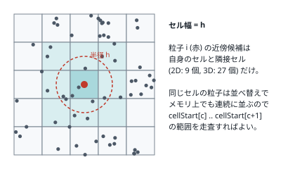
問題は「あるセルに含まれる粒子をどう列挙するか」です。CPU ならセルごとにリストを持てばよいのですが、GPU ではリストのような可変長構造は扱いにくく、代わりに 粒子をセル番号でソートし、セルごとの先頭位置を配列で持つ という方法をとります。ソート後は、セル \(c\) の粒子が配列の cellStart[c] から cellStart[c+1] の手前まで連続して並ぶので、この範囲をループするだけで済みます。
セル番号は 0 から (セル数 − 1) までの整数で、粒子数よりずっと小さい範囲に収まります。このような整数キーのソートには カウンティングソート が最適で、比較を一切せず 3 つの単純なパスで完了します。
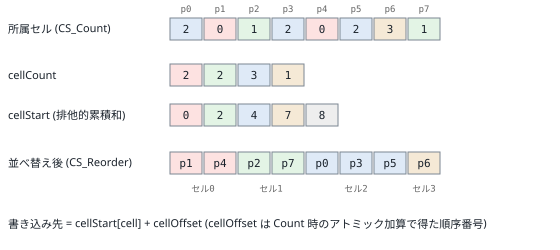
CS_Count): 各粒子が自分のセルのカウンタをアトミックに +1 する。このとき返る「加算前の値」を、セル内での順序番号 cellOffset として保存する。CS_Scan): カウンタ配列の排他的累積和をとると、各セルの先頭位置 cellStart になる。CS_Reorder): 各粒子を cellStart[cell] + cellOffset の位置にコピーする。累積和は本質的に逐次処理に見えますが、GPU では Hillis–Steele のスキャン というアルゴリズムで \(\log_2 n\) 段の並列処理にできます。各段でスレッド \(i\) は「\(2^k\) 個前の値」を自分に足します。段を重ねるごとに、各要素は自分より前の要素を 1, 2, 4, 8, … 個ずつ取り込み、10 段で 1024 要素の累積和が完成します。
セル数は数十万 (既定設定で 169,128) あるので、1 グループ 1024 スレッドで 1024 要素ずつ順に処理し、チャンクの合計を sCarry に持ち越します。単一グループで逐次処理するため理論上は最速ではありませんが、SPH 本体の計算量に比べれば無視できる時間で済み、複数グループ間の同期という厄介な問題を避けられます。
70 [numthreads(SCAN_THREADS, 1, 1)]
71 void CS_Scan(uint tid : SV_GroupThreadID)
72 {
73 if (tid == 0) sCarry = 0;
74 GroupMemoryBarrierWithGroupSync();
75
76 for (uint base = 0; base < numCells; base += SCAN_THREADS)
77 {
78 uint i = base + tid;
79 uint v = (i < numCells) ? gCellCount[i] : 0;
80 sScan[tid] = v;
81 GroupMemoryBarrierWithGroupSync();
82
83 // Hillis-Steele 包括的スキャン
84 [unroll]
85 for (uint offset = 1; offset < SCAN_THREADS; offset <<= 1)
86 {
87 uint t = (tid >= offset) ? sScan[tid - offset] : 0;
88 GroupMemoryBarrierWithGroupSync();
89 sScan[tid] += t;
90 GroupMemoryBarrierWithGroupSync();
91 }
92
93 if (i < numCells) gCellStartRW[i] = sCarry + sScan[tid] - v; // 排他的にするため自身を引く
94 GroupMemoryBarrierWithGroupSync();
95 if (tid == SCAN_THREADS - 1) sCarry += sScan[tid]; // このチャンクの合計を持ち越す
96 GroupMemoryBarrierWithGroupSync();
97 }
98 if (tid == 0) gCellStartRW[numCells] = sCarry; // 末尾 = 総粒子数
99 }GroupMemoryBarrierWithGroupSync() の位置に注意してください。Hillis–Steele では「読み出し」と「書き込み」の間にバリアが必要です。読み出した値を一時変数 t に退避してからバリア、その後に加算、さらにバリア ― これを省くと、隣のスレッドが更新済みの値を読んでしまい結果が壊れます。バリアはグループ内の全スレッドが同じ回数だけ通過しなければならないので、if の中に置いてはいけません。 101 // ---------------------------------------------------------------------
102 // 4. セル順への並べ替え
103 // ---------------------------------------------------------------------
104 [numthreads(THREADS, 1, 1)]
105 void CS_Reorder(uint3 id : SV_DispatchThreadID)
106 {
107 uint i = id.x;
108 if (i >= numParticles) return;
109 uint dst = gCellStart[gCellIndex[i]] + gCellOffset[i];
110 gPosOut[dst] = gPosIn[i];
111 gVelOut[dst] = gVelIn[i];
112 }並べ替えは位置と速度を 別のバッファにコピー します (インプレースでは他のスレッドが読む前に上書きしてしまう)。そのため位置と速度のバッファは 2 組用意し、毎回入れ替えて使います。これが次節の「ピンポンバッファ」です。
SPHSimulator が GPU 上に持つバッファをまとめます。
| バッファ | 型 × 要素数 | 内容 |
|---|---|---|
m_pos[2], m_vel[2] | float4 × N (2 組) | 位置・速度。m_cur が現在有効な側を指す |
m_xsph | float4 × N | XSPH 速度補正 |
m_accel | float4 × N | 加速度 |
m_densPres | float2 × N | 密度と圧力 |
m_cellIndex, m_cellOffset | uint × N | 粒子の所属セル、セル内順序 |
m_cellCount | uint × セル数 | セル内粒子数 |
m_cellStart | uint × (セル数 + 1) | セル先頭位置。末尾要素は総粒子数 |
位置を float3 ではなく float4 にしているのは、構造化バッファの要素を 16 バイト境界に揃えると GPU のメモリアクセスが効率的になるためです (w 成分は未使用)。
1 サブステップの中でバッファがどう流れるかを図にします。「cur」が現在側、「alt」がもう一方です。
flowchart TB
subgraph 格子構築
A["CS_ClearCells
cellCount ← 0"] --> B["CS_Count
pos[cur] → cellCount, cellIndex, cellOffset"]
B --> C["CS_Scan
cellCount → cellStart"]
C --> D["CS_Reorder
pos/vel[cur] → pos/vel[alt]
(cur と alt を入れ替え)"]
end
D --> E["CS_Density
pos[cur], cellStart → densPres"]
E --> F["CS_Force
pos/vel[cur], densPres → accel, xsph"]
F --> G["CS_Integrate
pos/vel[cur], accel, xsph → pos/vel[alt]
(cur と alt を入れ替え)"]
入れ替えは 1 サブステップに 2 回 (並べ替え後と積分後) 起きます。C++ 側では m_cur = 1 - m_cur と書くだけです。
212 void SPHSimulator::Step()
213 {
214 // 格子構築と並べ替え (手順 1〜4)
215 SortParticles();
216
217 ID3D11DeviceContext* ctx = m_d3d->Context();
218 const UINT N = m_params.numParticles;
219 auto setSRV = [&](UINT slot, ID3D11ShaderResourceView* v) { ctx->CSSetShaderResources(slot, 1, &v); };
220 auto setUAV = [&](UINT slot, ID3D11UnorderedAccessView* v) { ctx->CSSetUnorderedAccessViews(slot, 1, &v, nullptr); };
221
222 // 5. 密度・圧力
223 ctx->CSSetShader(m_csDensity.Get(), nullptr, 0);
224 setSRV(0, m_pos[m_cur].srv.Get());
225 setSRV(2, m_cellStart.srv.Get());
226 setUAV(6, m_densPres.uav.Get());
227 ctx->Dispatch(Groups(N), 1, 1);
228 m_d3d->UnbindCompute();
229
230 // 6. 力 (加速度) と XSPH
231 ctx->CSSetShader(m_csForce.Get(), nullptr, 0);
232 setSRV(0, m_pos[m_cur].srv.Get());
233 setSRV(1, m_vel[m_cur].srv.Get());
234 setSRV(2, m_cellStart.srv.Get());
235 setSRV(3, m_densPres.srv.Get());
236 setUAV(5, m_xsph.uav.Get()); // u5 = XSPH 出力
237 setUAV(7, m_accel.uav.Get());
238 ctx->Dispatch(Groups(N), 1, 1);
239 m_d3d->UnbindCompute();
240
241 // 7. 時間積分 (cur → 1-cur)
242 ctx->CSSetShader(m_csIntegrate.Get(), nullptr, 0);
243 setSRV(0, m_pos[m_cur].srv.Get());
244 setSRV(1, m_vel[m_cur].srv.Get());
245 setSRV(4, m_accel.srv.Get());
246 setSRV(5, m_xsph.srv.Get());
247 setUAV(4, m_pos[1 - m_cur].uav.Get());
248 setUAV(5, m_vel[1 - m_cur].uav.Get());
249 ctx->Dispatch(Groups(N), 1, 1);
250 m_d3d->UnbindCompute();
251 m_cur = 1 - m_cur;
252
253 m_time += m_params.dt;
254 }CS_Force の出力スロット u5 は、シェーダー上は gVelOut という名前ですが、C++ 側では m_xsph を束縛しています。レジスタ番号は単なる「スロット」で、そこに何を挿すかは C++ が決める ― この関係を理解しておくと、DirectX 11 で UAV が 8 個までという制限の中でスロットを使い回せます。密度と力のシェーダーは同じ形の 3 重ループを持ちます。
int3 c = CellCoord(pi); // 自分のセル
for (int dz = -1; dz <= 1; ++dz)
for (int dy = -1; dy <= 1; ++dy)
for (int dx = -1; dx <= 1; ++dx)
{
int3 nc = c + int3(dx, dy, dz);
if (!CellValid(nc)) continue; // 領域の端では隣接セルが無い
uint cell = CellId(nc);
uint s = gCellStart[cell], e = gCellStart[cell + 1];
for (uint j = s; j < e; ++j) // このセルの粒子を連続して走査
{
float3 r = pi - gPosIn[j].xyz;
float r2 = dot(r, r);
if (r2 < h2) { ... } // 実際に h 以内かは距離で判定
}
}格子はあくまで「候補の絞り込み」であって、27 セルの中には \(h\) より遠い粒子も含まれます (体積比で言えば球は立方体 27 個の約 15 % なので、候補の大半は距離判定で落ちます)。それでも \(N^2\) に比べれば圧倒的に少なく、粒子数に比例した計算量になります。
セル座標の計算は共通ヘッダにあります。領域外の位置は端のセルにクランプするので、粒子がどこにいても必ずどこかのセルに属します。
31 // 位置 → 格子座標 (領域外は端のセルへクランプ)
32 int3 CellCoord(float3 p)
33 {
34 int3 c = (int3)floor((p - domainMin) / cellSize);
35 return clamp(c, int3(0, 0, 0), int3(gridDim) - 1);
36 }
37
38 // 格子座標 → 1 次元セル番号
39 uint CellId(int3 c)
40 {
41 return (uint)c.x + (uint)c.y * gridDim.x + (uint)c.z * gridDim.x * gridDim.y;
42 }
43
44 // 格子座標が有効範囲内か
45 bool CellValid(int3 c)
46 {
47 return all(c >= 0) && all(c < int3(gridDim));第 1 章のメインループで、StepFrame() の直後に SortParticles() を呼んでいました。サブステップの最後は積分 (CS_Integrate) なので、そこで粒子が動いた後、格子 (cellStart) は 積分前の位置 に基づいたままです。次のサブステップの先頭で作り直されるので SPH 自身には問題ありませんが、マーチングキューブ法は同じ格子を使って粒子を探すため (第 5 章)、位置と格子がずれていると粒子を見落とし、表面に穴が開きます。そこで描画の前に格子だけを再構築します。コストは 1 サブステップの半分程度です。
Initialize は粒子間隔からすべての導出量を計算し、水塊を格子状の粒子で埋め、GPU リソースを生成します。
120 void SPHSimulator::BuildInitialParticles(float spacing, bool restTest)
121 {
122 m_initialPos.clear();
123 std::mt19937 rng(12345);
124 std::uniform_real_distribution<float> jitter(-0.02f * spacing, 0.02f * spacing);
125
126 // 各水塊を格子状に粒子で満たす (完全な対称性を崩すため微小な乱れを加える)
127 for (int b = 0; b < cfg::NUM_WATER_BLOCKS; ++b)
128 {
129 cfg::WaterBlock blk = cfg::WATER_BLOCKS[b];
130 if (restTest)
131 {
132 // 安定性テスト: 水塊 A だけを床の上に置く
133 if (b != 0) continue;
134 float dy = blk.mn[1] - cfg::TANK_FLOOR_Y - spacing * 0.5f;
135 blk.mn[1] -= dy; blk.mx[1] -= dy;
136 }
137 int nx = (int)std::floor((blk.mx[0] - blk.mn[0]) / spacing);
138 int ny = (int)std::floor((blk.mx[1] - blk.mn[1]) / spacing);
139 int nz = (int)std::floor((blk.mx[2] - blk.mn[2]) / spacing);
140 for (int z = 0; z < nz; ++z) for (int y = 0; y < ny; ++y) for (int x = 0; x < nx; ++x)
141 {
142 m_initialPos.emplace_back(
143 blk.mn[0] + (x + 0.5f) * spacing + jitter(rng),
144 blk.mn[1] + (y + 0.5f) * spacing + jitter(rng),
145 blk.mn[2] + (z + 0.5f) * spacing + jitter(rng),
146 0.0f);
147 }
148 }
149 }2 % の乱れ (jitter) を加えているのは、完全に対称な格子だと数値誤差も完全に対称になり、崩れ始めるまで不自然に長く「固まった」ままになるからです。乱れはごく小さいので初期密度への影響は無視できます。
| 粒子間隔 | 粒子数 (2 ブロック) | サブステップ / フレーム | 1 フレームの計算時間 (RTX 3060) |
|---|---|---|---|
| 0.014 m | 52,446 | 45 | 約 33 ms |
| 0.010 m | 154,200 | 63 | 約 115 ms |
粒子数が 3 倍になると、サブステップ数も 1.4 倍になる (h が縮んで CFL の上限が下がる) ため、計算時間は約 4 倍になります。粒子間隔を半分にすると粒子数 8 倍 × サブステップ 2 倍 = 16 倍 ― 解像度を上げるコストは急激です。時間を含めた計算量は \(O(1/d^4)\) だと覚えておくと見積もりに便利です。
SortParticles() の呼び出しをメインループから消して、水面に何が起きるか観察してください (穴やちらつきが出ます)。ms/frame を見ながら、--spacing を 0.020, 0.014, 0.010 と変えて、上の表の \(O(1/d^4)\) を確かめてください。粒子の集まりから「水面」という 1 枚の面を取り出すには、まず空間の各点に「ここは水の内側か外側か」を表す数値 (スカラー場) を定義し、次にその値が閾値と一致する面 (等値面) を三角形で近似します。後半を担うのが、1987 年に Lorensen と Cline が医用 CT 画像のために考案した マーチングキューブ法 です。本章では、その仕組みと、通常は巨大な定数表として埋め込まれる「三角形テーブル」を本プログラムがアルゴリズムで生成している方法を説明します。
球を「中心からの距離が \(r\) の点の集合」と定義するように、面を「関数 \(F(\mathbf x)\) の値が \(c\) になる点の集合」として表す方法を 陰関数表現 と呼び、その面を 等値面 と言います。
粒子の集まりに対しては、各粒子を中心とした「ふくらみ」を足し合わせた関数を使うのが自然です。本プログラムでは半径 \(R\) の滑らかなカーネルを足し合わせます。
孤立した 1 粒子の中心で \(F = 1\)、水の内部では周囲の粒子の寄与が重なって 5 前後になります。等値レベル \(c\) を 1 より小さく (既定 0.5) 取れば孤立した粒子も小さな球として拾え、大きく取れば飛沫が消えて滑らかになります。
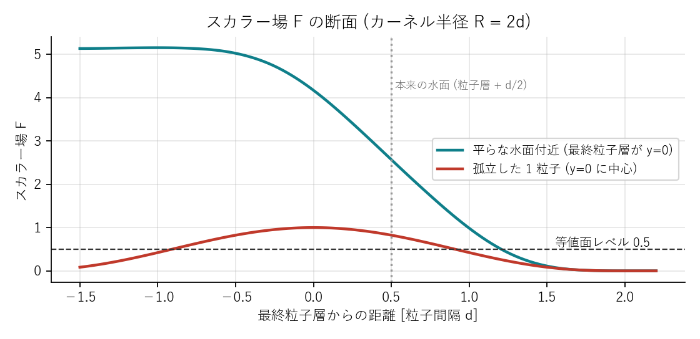
\(R\) を粒子間隔 \(d\) の 2 倍 (= SPH の \(h\) と同じ) にしたのには理由があります。SPH の格子はセル幅 \(h\) なので、\(R \le h\) なら格子点から 27 セルを走査するだけで \(R\) 以内の粒子をすべて見つけられる ― つまり SPH の近傍探索の仕組みをそのまま再利用できる のです。マーチングキューブの格子間隔は \(0.75d\) で、水面の細部を粒子より少し細かく拾います。
53 // ---------------------------------------------------------------------
54 // スカラー場の計算 (格子点ごとに 1 スレッド)
55 // ---------------------------------------------------------------------
56 [numthreads(256, 1, 1)]
57 void CS_Field(uint3 id : SV_DispatchThreadID)
58 {
59 uint idx = id.x;
60 if (idx >= mcNumVerts) return;
61
62 float3 x = mcOrigin + (float3)VertexCoord(idx) * mcCell;
63 int3 c = CellCoord(x);
64 float sum = 0.0;
65
66 // SPH 格子 (セル幅 = h ≥ R) の 27 近傍を走査
67 for (int dz = -1; dz <= 1; ++dz)
68 for (int dy = -1; dy <= 1; ++dy)
69 for (int dx = -1; dx <= 1; ++dx)
70 {
71 int3 nc = c + int3(dx, dy, dz);
72 if (!CellValid(nc)) continue;
73 uint cell = CellId(nc);
74 uint s = gCellStart[cell], e = gCellStart[cell + 1];
75 for (uint j = s; j < e; ++j)
76 {
77 float3 r = x - gPos[j].xyz;
78 float q2 = dot(r, r) * fieldInvR2;
79 if (q2 < 1.0)
80 {
81 float t = 1.0 - q2;
82 sum += t * t * t;
83 }
84 }
85 }
86 gFieldRW[idx] = sum;
87 }粒子由来のスカラー場は、粒子の粗密がそのまま凹凸として現れます。特に初期状態の完全な格子配置では、水面に格子模様が浮き出ます。本プログラムでは 3 次元の 7 点フィルタ (中心 2、6 近傍 1 の重み) を 2 回かけて滑らかにしています。フィルタで孤立粒子のピーク値は 1.0 から約 0.55 に下がるので、等値レベルはそれより低い 0.5 にしてあります。
116 // ---------------------------------------------------------------------
117 // スカラー場の平滑化 (中心 2 + 6 近傍 1 の 7 点フィルタ)。gField → gFieldRW
118 // ---------------------------------------------------------------------
119 [numthreads(256, 1, 1)]
120 void CS_Smooth(uint3 id : SV_DispatchThreadID)
121 {
122 uint idx = id.x;
123 if (idx >= mcNumVerts) return;
124 int3 c = (int3)VertexCoord(idx);
125 float sum = 2.0 * gField[idx];
126 sum += FieldAt(c + int3(1, 0, 0)) + FieldAt(c - int3(1, 0, 0));
127 sum += FieldAt(c + int3(0, 1, 0)) + FieldAt(c - int3(0, 1, 0));
128 sum += FieldAt(c + int3(0, 0, 1)) + FieldAt(c - int3(0, 0, 1));
129 gFieldRW[idx] = sum / 8.0;
130 }空間を立方体のセルに区切り、各セルの 8 頂点でスカラー場の値を評価します。各頂点は「閾値より大きい (内側)」か「小さい (外側)」かのどちらかなので、セルの状態は \(2^8 = 256\) 通りです。内側と外側の頂点をつなぐ辺の上には等値面が必ず通るので、その辺上の交点を 線形補間 で求め、交点同士を三角形で結びます。どの交点をどう結ぶかは 256 通りそれぞれについてあらかじめ決めておき、表 (三角形テーブル) を引くだけにします。これが「立方体が空間を行進 (march) しながら面を作る」という名前の由来です。
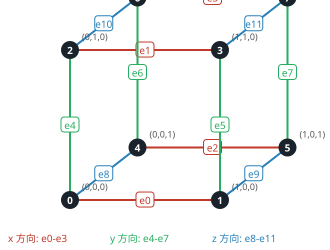
辺の両端の値が \(F_a\), \(F_b\) で閾値が \(c\) なら、交点は端点 \(a\) から \(b\) に向かって
の位置です。補間せずに辺の中点を使うと面が階段状になるので、この 1 行が滑らかさの要です。法線も同じ \(t\) で補間します。
等値面の法線はスカラー場の勾配 \(\nabla F\) の向きです。各格子点で中心差分 \((F_{x+1} - F_{x-1}, \ldots)\) により勾配を求め、交点で補間します。\(F\) は水の内側で大きいので、勾配は内向きです。描画に使う法線は外向きにしたいので符号を反転します。
99 // 格子点の値 (範囲外は 0 = 流体の外)
100 float FieldAt(int3 c)
101 {
102 if (any(c < 0) || any(c >= int3(mcDim))) return 0.0;
103 return gField[VertexIndex((uint3)c)];
104 }
105
106 // 中心差分による勾配 → 法線は勾配の逆向き (値が減る方向 = 流体の外向き)
107 float3 NormalAt(int3 c)
108 {
109 float3 g;
110 g.x = FieldAt(c + int3(1, 0, 0)) - FieldAt(c - int3(1, 0, 0));
111 g.y = FieldAt(c + int3(0, 1, 0)) - FieldAt(c - int3(0, 1, 0));
112 g.z = FieldAt(c + int3(0, 0, 1)) - FieldAt(c - int3(0, 0, 1));
113 return -g;セルごとに 1 スレッドを割り当て、8 頂点の値からパターン番号 mask を作り、テーブルを引いて三角形を AppendStructuredBuffer に追加します。全セルの大半 (水の内部でも外部でもないセル以外) は mask が 0 か 255 で早期に return するので、実際に三角形を作るのは表面付近のセルだけです。
132 [numthreads(256, 1, 1)]
133 void CS_MarchingCubes(uint3 id : SV_DispatchThreadID)
134 {
135 uint3 cells = mcDim - 1;
136 uint numCellsMC = cells.x * cells.y * cells.z;
137 uint idx = id.x;
138 if (idx >= numCellsMC) return;
139
140 int3 c;
141 c.x = idx % cells.x;
142 c.y = (idx / cells.x) % cells.y;
143 c.z = idx / (cells.x * cells.y);
144
145 // 8 頂点の値と内外パターン
146 float v[8];
147 uint mask = 0;
148 [unroll]
149 for (int k = 0; k < 8; ++k)
150 {
151 int3 cc = c + int3(k & 1, (k >> 1) & 1, (k >> 2) & 1);
152 v[k] = gField[VertexIndex((uint3)cc)];
153 if (v[k] > isoLevel) mask |= (1u << k);
154 }
155 if (mask == 0 || mask == 255) return; // 等値面を含まない
156
157 // 各エッジ上の交点 (位置・法線) を補間
158 float3 ep[12], en[12];
159 [unroll]
160 for (int e = 0; e < 12; ++e)
161 {
162 int a = EDGE_VERTS[e].x, b = EDGE_VERTS[e].y;
163 ep[e] = 0; en[e] = float3(0, 1, 0);
164 if (((mask >> a) & 1) != ((mask >> b) & 1))
165 {
166 int3 ca = c + int3(a & 1, (a >> 1) & 1, (a >> 2) & 1);
167 int3 cb = c + int3(b & 1, (b >> 1) & 1, (b >> 2) & 1);
168 float t = saturate((isoLevel - v[a]) / (v[b] - v[a]));
169 ep[e] = mcOrigin + lerp((float3)ca, (float3)cb, t) * mcCell;
170 en[e] = normalize(lerp(NormalAt(ca), NormalAt(cb), t) + 1e-9);
171 }
172 }
173
174 // 三角形テーブルを引いて出力
175 uint base = mask * mcTableStride;
176 for (uint k2 = 0; k2 + 2 < mcTableStride; k2 += 3)
177 {
178 int i0 = gTriTable[base + k2];
179 if (i0 < 0) break;
180 int i1 = gTriTable[base + k2 + 1];
181 int i2 = gTriTable[base + k2 + 2];
182 MCTriangle tri;
183 tri.v0.p = ep[i0]; tri.v0.n = en[i0];
184 tri.v1.p = ep[i1]; tri.v1.n = en[i1];
185 tri.v2.p = ep[i2]; tri.v2.n = en[i2];
186 gTriangles.Append(tri);
187 }
188 }三角形は位置と法線を持つ 3 頂点 (72 バイト) として書き出されます。個数は GPU 上のカウンタにだけ記録され、CopyStructureCount で描画引数用のバッファへコピーし、小さなシェーダーで「頂点数 = 三角形数 × 3」に変換します。CPU は最後まで三角形数を知りません。
74 void MarchingCubes::Build(SPHSimulator& sim)
75 {
76 ID3D11DeviceContext* ctx = m_d3d->Context();
77 ID3D11Buffer* cbs[2] = { sim.ParamsCB(), m_paramsCB.Get() };
78 ctx->CSSetConstantBuffers(0, 2, cbs);
79
80 auto setSRV = [&](UINT slot, ID3D11ShaderResourceView* v) { ctx->CSSetShaderResources(slot, 1, &v); };
81
82 // 1. スカラー場
83 ctx->CSSetShader(m_csField.Get(), nullptr, 0);
84 setSRV(0, sim.PositionSRV());
85 setSRV(2, sim.CellStartSRV());
86 ID3D11UnorderedAccessView* fieldUAV = m_field.uav.Get();
87 ctx->CSSetUnorderedAccessViews(0, 1, &fieldUAV, nullptr);
88 ctx->Dispatch(Groups(m_params.numVerts), 1, 1);
89 m_d3d->UnbindCompute();
90
91 // 1'. 平滑化 (field ⇄ fieldSmooth をピンポンしながら指定回数)
92 GpuBuffer* src = &m_field;
93 GpuBuffer* dst = &m_fieldSmooth;
94 for (int pass = 0; pass < cfg::MC_SMOOTH_PASSES; ++pass)
95 {
96 ctx->CSSetShader(m_csSmooth.Get(), nullptr, 0);
97 setSRV(3, src->srv.Get());
98 ID3D11UnorderedAccessView* smoothUAV = dst->uav.Get();
99 ctx->CSSetUnorderedAccessViews(0, 1, &smoothUAV, nullptr);
100 ctx->Dispatch(Groups(m_params.numVerts), 1, 1);
101 m_d3d->UnbindCompute();
102 std::swap(src, dst);
103 }
104 ID3D11ShaderResourceView* mcField = src->srv.Get();
105
106 // 2. マーチングキューブ (Append カウンタを 0 にリセットして開始)
107 ctx->CSSetShader(m_csCubes.Get(), nullptr, 0);
108 setSRV(3, mcField);
109 setSRV(4, m_triTable.srv.Get());
110 ID3D11UnorderedAccessView* triUAV = m_triangles.uav.Get();
111 UINT initialCount = 0;
112 ctx->CSSetUnorderedAccessViews(1, 1, &triUAV, &initialCount);
113 UINT numCells = (m_params.dim[0] - 1) * (m_params.dim[1] - 1) * (m_params.dim[2] - 1);
114 ctx->Dispatch(Groups(numCells), 1, 1);
115 m_d3d->UnbindCompute();
116
117 // 3. 三角形数 → 描画引数
118 ctx->CopyStructureCount(m_triCount.buffer.Get(), 0, m_triangles.uav.Get());
119 ctx->CSSetShader(m_csArgs.Get(), nullptr, 0);
120 ID3D11UnorderedAccessView* uavs[2] = { m_triCount.uav.Get(), m_drawArgs.uav.Get() };
121 ctx->CSSetUnorderedAccessViews(2, 2, uavs, nullptr);
122 ctx->Dispatch(1, 1, 1);
123 m_d3d->UnbindCompute();
124 }マーチングキューブ法の実装で最も面倒なのが、256 通り × 最大 5 三角形 × 3 = 約 4,000 個の整数からなる三角形テーブルです。多くの実装は Paul Bourke のウェブページに掲載された表をコピーして使いますが、写し間違いが 1 か所あるだけで表面に穴が開き、しかも原因の特定が困難です。本プログラムは表を 起動時にアルゴリズムで生成し、自己検証してから使う という方針をとりました。この方法自体が、マーチングキューブ法の幾何学的な理解を深める良い教材になります。
等値面は、セルの 6 つの面それぞれと「線分」で交わります。ある面の 4 頂点を外側から見て反時計回りに巡ると、内外が切り替わる辺 (交差エッジ) は偶数個現れ、「外 → 内」(入口) と「内 → 外」(出口) が交互に並びます。各入口を、周回方向で次の出口と結ぶ ― これがその面上の線分です。各交差エッジは 2 つの面に属し、一方では入口、他方では出口になるので、線分をたどっていくと必ず閉じたループに戻ります。ループが 1 つ得られれば、扇状に三角形分割して完成です。
flowchart TB
A["256 通りの内外パターン"] --> B["6 面それぞれで
入口 → 次の出口 を接続"]
B --> C["接続をたどって
閉ループを抽出"]
C --> D["ループの向きを
外向きに統一"]
D --> E["扇状に三角形分割
→ テーブルに書き込む"]
E --> F["球で自己検証
(閉多様体・外向き)"]
面の対角の 2 頂点だけが内側という配置では、線分の結び方が 2 通りあります (2 つの内側頂点を「つなぐ」か「分ける」か)。隣り合うセルがこの面を別々の判断で処理すると、面の境界で三角形が食い違って穴が開きます。マーチングキューブ法の有名な落とし穴です。
「入口を次の出口と結ぶ」規則は、この曖昧な面で常に 「分ける」側 を選びます。そして、この判断は面の 4 頂点の内外だけで決まり、隣のセルから見ても (周回方向は逆になりますが) 同じ 2 線分に帰着します。つまり隣接セル同士が必ず同じ結び方をするので、穴は決して開きません。
67 std::vector<int32_t> GenerateTriangleTable()
68 {
69 std::vector<int32_t> table(NUM_CASES * TABLE_STRIDE, -1);
70
71 // 面ごとの向き付き頂点列を先に作っておく
72 int faces[6][4];
73 for (int f = 0; f < 6; ++f) OrientedFace(f, faces[f]);
74
75 for (int mask = 0; mask < NUM_CASES; ++mask)
76 {
77 auto inside = [&](int v) { return (mask >> v) & 1; };
78
79 // next[e] : 交差エッジ e から同じ面上で接続される次の交差エッジ
80 int next[12];
81 for (int e = 0; e < 12; ++e) next[e] = -1;
82
83 for (int f = 0; f < 6; ++f)
84 {
85 // 面の境界を反時計回りに歩き、内外が変わるエッジを順に集める
86 // type: true = 入口 (外→内), false = 出口 (内→外)
87 struct Hit { int edge; bool entry; };
88 Hit seq[4]; int n = 0;
89 for (int k = 0; k < 4; ++k)
90 {
91 int a = faces[f][k], b = faces[f][(k + 1) % 4];
92 if (inside(a) != inside(b))
93 seq[n++] = { EdgeBetween(a, b), inside(b) != 0 };
94 }
95 // 入口から (周回方向で) 次の出口へ接続する。
96 // 4 交差の曖昧面でもこの規則は面の頂点値だけで決まるので隣接セルと必ず一致する。
97 for (int i = 0; i < n; ++i)
98 {
99 if (!seq[i].entry) continue;
100 int j = (i + 1) % n; // 入口と出口は交互に現れるので次は必ず出口
101 next[seq[i].edge] = seq[j].edge;
102 }
103 }
104
105 // 有向リンクを辿って閉ループを取り出し、扇状に三角形化する
106 bool visited[12] = {};
107 int writePos = 0;
108 for (int start = 0; start < 12; ++start)
109 {
110 if (next[start] < 0 || visited[start]) continue;
111
112 std::vector<int> loop;
113 int e = start;
114 do { loop.push_back(e); visited[e] = true; e = next[e]; } while (e != start && loop.size() <= 12);
115
116 // ループの向きを「法線が流体の外側 (値の低い側) を向く」よう統一する
117 Vec3 normal = { 0, 0, 0 }, centroid = { 0, 0, 0 }, fluid = { 0, 0, 0 };
118 for (size_t i = 0; i < loop.size(); ++i)
119 {
120 Vec3 p = EdgeMid(loop[i]), q = EdgeMid(loop[(i + 1) % loop.size()]);
121 Vec3 c = Cross(p, q); // Newell 法
122 normal.x += c.x; normal.y += c.y; normal.z += c.z;
123 centroid.x += p.x; centroid.y += p.y; centroid.z += p.z;
124 int a = EDGE_VERTS[loop[i]][0], b = EDGE_VERTS[loop[i]][1];
125 Vec3 in = Corner(inside(a) ? a : b); // このエッジの内側端点
126 fluid.x += in.x; fluid.y += in.y; fluid.z += in.z;
127 }
128 float inv = 1.0f / float(loop.size());
129 Vec3 toFluid = { fluid.x * inv - centroid.x * inv, fluid.y * inv - centroid.y * inv, fluid.z * inv - centroid.z * inv };
130 if (Dot(normal, toFluid) > 0.0f) // 法線が流体側を向いていたら反転
131 std::reverse(loop.begin(), loop.end());
132
133 // 扇状三角形分割
134 for (size_t i = 1; i + 1 < loop.size(); ++i)
135 {
136 if (writePos + 3 >= TABLE_STRIDE) { std::fprintf(stderr, "MC table overflow at case %d\n", mask); break; }
137 table[mask * TABLE_STRIDE + writePos + 0] = loop[0];
138 table[mask * TABLE_STRIDE + writePos + 1] = loop[i];
139 table[mask * TABLE_STRIDE + writePos + 2] = loop[i + 1];
140 writePos += 3;
141 }
142 }
143 // 残りは -1 (終端) のまま
144 }
145 return table;
146 }描画で裏面を省く (カリング) には、全三角形の頂点順序が「外から見て同じ回り」に揃っている必要があります。各ループについて Newell の方法 (辺の外積の和) で法線を求め、ループの中心から「内側頂点の平均位置」へ向かうベクトルと比べて、法線が水の内側を向いていたらループを逆順にします。
生成した表が正しいことは、球の距離場に対して CPU でマーチングキューブ法を実行し、次の 2 点を確かめることで保証します。
148 bool SelfTest(const std::vector<int32_t>& table, int32_t* outTriangleCount)
149 {
150 // 球の符号付き距離場を格子上にサンプリングし CPU で MC を実行する
151 const int N = 20; // セル数 (各軸)
152 const float cx = 10.31f, cy = 9.77f, cz = 10.13f, radius = 7.3f;
153 auto field = [&](int x, int y, int z) {
154 float dx = x - cx, dy = y - cy, dz = z - cz;
155 return radius - std::sqrt(dx * dx + dy * dy + dz * dz); // 内側が正
156 };
157
158 // エッジ → 頂点番号 (隣接セルで同じエッジは同じ頂点になるよう正規化キーで管理)
159 std::map<std::tuple<int, int, int, int>, int> vertexIds;
160 std::vector<Vec3> vertices;
161 std::vector<std::array<int, 3>> tris;
162
163 for (int z = 0; z < N; ++z) for (int y = 0; y < N; ++y) for (int x = 0; x < N; ++x)
164 {
165 float v[8]; int mask = 0;
166 for (int k = 0; k < 8; ++k)
167 {
168 v[k] = field(x + (k & 1), y + ((k >> 1) & 1), z + ((k >> 2) & 1));
169 if (v[k] > 0.0f) mask |= 1 << k;
170 }
171 if (mask == 0 || mask == 255) continue;
172
173 auto vertexOnEdge = [&](int e) {
174 int a = EDGE_VERTS[e][0], b = EDGE_VERTS[e][1];
175 Vec3 pa = Corner(a), pb = Corner(b);
176 auto key = std::make_tuple(x + int(pa.x), y + int(pa.y), z + int(pa.z), e / 4);
177 auto it = vertexIds.find(key);
178 if (it != vertexIds.end()) return it->second;
179 float t = (0.0f - v[a]) / (v[b] - v[a]);
180 Vec3 p = { x + pa.x + (pb.x - pa.x) * t, y + pa.y + (pb.y - pa.y) * t, z + pa.z + (pb.z - pa.z) * t };
181 int id = int(vertices.size());
182 vertices.push_back(p);
183 vertexIds[key] = id;
184 return id;
185 };
186
187 for (int k = 0; k < TABLE_STRIDE; k += 3)
188 {
189 int e0 = table[mask * TABLE_STRIDE + k];
190 if (e0 < 0) break;
191 int e1 = table[mask * TABLE_STRIDE + k + 1];
192 int e2 = table[mask * TABLE_STRIDE + k + 2];
193 tris.push_back({ vertexOnEdge(e0), vertexOnEdge(e1), vertexOnEdge(e2) });
194 }
195 }
196
197 // 検証 1: 各有向エッジがちょうど 1 回、逆向きもちょうど 1 回 (閉じた 2 多様体)
198 std::map<std::pair<int, int>, int> edgeUse;
199 for (auto& t : tris)
200 for (int k = 0; k < 3; ++k)
201 edgeUse[{ t[k], t[(k + 1) % 3] }]++;
202 bool ok = true;
203 for (auto& kv : edgeUse)
204 {
205 if (kv.second != 1) { ok = false; break; }
206 auto rev = edgeUse.find({ kv.first.second, kv.first.first });
207 if (rev == edgeUse.end() || rev->second != 1) { ok = false; break; }
208 }
209 // 検証 2: 三角形の幾何法線が外向き (球の中心から遠ざかる向き)
210 int badOrient = 0;
211 for (auto& t : tris)
212 {
213 Vec3 p0 = vertices[t[0]], p1 = vertices[t[1]], p2 = vertices[t[2]];
214 Vec3 n = Cross(Sub(p1, p0), Sub(p2, p0));
215 Vec3 c = { (p0.x + p1.x + p2.x) / 3 - cx, (p0.y + p1.y + p2.y) / 3 - cy, (p0.z + p1.z + p2.z) / 3 - cz };
216 if (Dot(n, c) <= 0.0f) ++badOrient;
217 }
218 if (badOrient > 0) ok = false;
219 if (outTriangleCount) *outTriangleCount = int32_t(tris.size());
220 std::printf("[MC self test] triangles=%zu manifold=%s badOrientation=%d\n", tris.size(), ok ? "yes" : "NO", badOrient);
221 return ok;
222 }この検証は起動のたびに数ミリ秒で終わり、失敗すれば例外で停止します。単体で実行できる mc_selftest.exe も用意してあります。
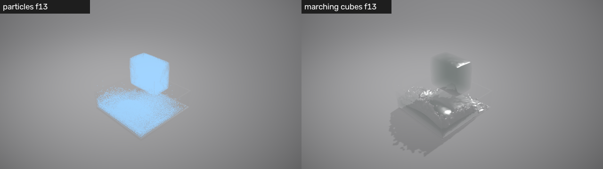
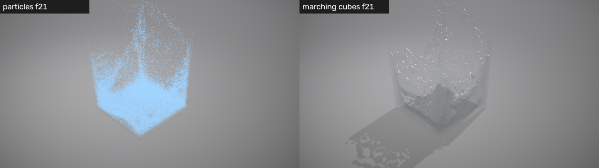
| 定数 (SimConfig.h) | 既定値 | 効果 |
|---|---|---|
MC_CELL_PER_SPACING | 0.75 | 格子間隔 / 粒子間隔。小さいほど細部が出るが、格子点数は 3 乗で増える |
MC_FIELD_RADIUS_PER_SPACING | 2.0 | カーネル半径 / 粒子間隔。大きいほど滑らか、飛沫は消えやすい。SPH の h を超えてはいけない |
MC_ISO_LEVEL | 0.5 | 等値レベル。上げると水面が痩せ細い飛沫が消える |
MC_SMOOTH_PASSES | 2 | 平滑化の回数。0 で格子模様が見えるようになる |
MC_MAX_TRIANGLES | 1,048,576 | 三角形バッファ容量 (72 MB)。超過分は捨てられる |
既定設定では格子点が約 340 万個 (146×158×146) あり、スカラー場の計算がメッシュ生成の大半の時間を占めます。これは「格子点 × 27 セル × セル内粒子」の計算で、SPH の 1 サブステップの 2〜3 倍に相当します。
MC_SMOOTH_PASSES を 0 にして初期状態 (t = 0) の水塊の上面を見てください。粒子の格子模様が現れます。MC_ISO_LEVEL を 1.5 にすると飛沫の細かい粒がすべて消え、太い流れだけが残ります。逆に 0.2 にすると水面が膨らみます。MCTables.cpp の「入口 → 次の出口」の規則を「入口 → 前の出口」に変えて mc_selftest.exe を実行してみてください。閉じたままか、向きはどうなるかを検証結果が教えてくれます。水が水に見えるのは、表面での反射、内部を通る光の屈折と吸収、そして周囲に落とす影のためです。映画の CG はこれらを光線追跡で厳密に計算しますが、リアルタイムでは「画面に描いた結果を再利用する」スクリーン空間の近似が主役です。本章では、本プログラムの 7 段階の描画パスと、水のピクセルシェーダーに書かれた各項の物理的な意味を説明します。
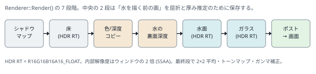
253 // ---------------------------------------------------------------------
254 // 描画
255 // ---------------------------------------------------------------------
256 void Renderer::Render(SPHSimulator& sim, MarchingCubes& mc, float time)
257 {
258 ID3D11DeviceContext* ctx = m_d3d->Context();
259 UpdateFrameParams(time);
260
261 ID3D11Buffer* cb = m_frameCB.Get();
262 ctx->VSSetConstantBuffers(0, 1, &cb);
263 ctx->PSSetConstantBuffers(0, 1, &cb);
264 ID3D11SamplerState* samplers[2] = { m_sampLinear.Get(), m_sampShadow.Get() };
265 ctx->PSSetSamplers(0, 2, samplers);
266 ctx->IASetPrimitiveTopology(D3D11_PRIMITIVE_TOPOLOGY_TRIANGLELIST);
267 const float blendFactor[4] = { 0, 0, 0, 0 };
268
269 ID3D11ShaderResourceView* nullSRVs[8] = {};
270 auto unbindSRVs = [&]() { ctx->PSSetShaderResources(0, 8, nullSRVs); ctx->VSSetShaderResources(0, 8, nullSRVs); };
271
272 // ---------------- 1. シャドウマップ ----------------
273 {
274 D3D11_VIEWPORT vp = { 0, 0, float(SHADOW_SIZE), float(SHADOW_SIZE), 0, 1 };
275 ctx->RSSetViewports(1, &vp);
276 ctx->OMSetRenderTargets(0, nullptr, m_shadowDSV.Get());
277 ctx->ClearDepthStencilView(m_shadowDSV.Get(), D3D11_CLEAR_DEPTH, 1.0f, 0);
278 ctx->OMSetDepthStencilState(m_dsDefault.Get(), 0);
279 ctx->OMSetBlendState(m_bsOpaque.Get(), blendFactor, 0xffffffff);
280 ctx->RSSetState(m_rsShadow.Get());
281 if (showWater)
282 {
283 ctx->IASetInputLayout(nullptr);
284 ctx->VSSetShader(m_vsWaterShadow.Get(), nullptr, 0);
285 ctx->PSSetShader(nullptr, nullptr, 0);
286 ID3D11ShaderResourceView* tri = mc.TriangleSRV();
287 ctx->VSSetShaderResources(0, 1, &tri);
288 ctx->DrawInstancedIndirect(mc.DrawArgs(), 0);
289 }
290 unbindSRVs();
291 }
292
293 // ---------------- 2. 不透明パス (床) ----------------
294 D3D11_VIEWPORT vp = { 0, 0, float(m_rtW), float(m_rtH), 0, 1 };
295 ctx->RSSetViewports(1, &vp);
296 ID3D11RenderTargetView* rtv = m_hdrRTV.Get();
297 ctx->OMSetRenderTargets(1, &rtv, m_depthDSV.Get());
298 const float bg[4] = { 0.27f, 0.27f, 0.28f, 1.0f };
299 ctx->ClearRenderTargetView(rtv, bg);
300 ctx->ClearDepthStencilView(m_depthDSV.Get(), D3D11_CLEAR_DEPTH, 1.0f, 0);
301 ctx->RSSetState(m_rsCullBack.Get());
302 {
303 ctx->IASetInputLayout(m_meshLayout.Get());
304 UINT stride = sizeof(MeshVertex), offset = 0;
305 ctx->IASetVertexBuffers(0, 1, m_floor.vb.GetAddressOf(), &stride, &offset);
306 ctx->VSSetShader(m_vsMesh.Get(), nullptr, 0);
307 ctx->PSSetShader(m_psFloor.Get(), nullptr, 0);
308 ID3D11ShaderResourceView* shadow = m_shadowSRV.Get();
309 ctx->PSSetShaderResources(3, 1, &shadow);
310 ctx->Draw(m_floor.vertexCount, 0);
311 unbindSRVs();
312 }
313
314 // ---------------- 3. 屈折参照用コピー ----------------
315 ctx->CopyResource(m_sceneColorCopy.Get(), m_hdrTex.Get());
316 ctx->CopyResource(m_sceneDepthCopy.Get(), m_depthTex.Get());
317
318 // ---------------- 3'. 水の裏面深度 (厚み推定用) ----------------
319 if (showWater)
320 {
321 ctx->OMSetRenderTargets(0, nullptr, m_waterBackDSV.Get());
322 ctx->ClearDepthStencilView(m_waterBackDSV.Get(), D3D11_CLEAR_DEPTH, 1.0f, 0);
323 ctx->RSSetState(m_rsCullFront.Get()); // 表面を捨てて裏面だけ描く
324 ctx->IASetInputLayout(nullptr);
325 ctx->VSSetShader(m_vsWaterDepth.Get(), nullptr, 0);
326 ctx->PSSetShader(nullptr, nullptr, 0);
327 ID3D11ShaderResourceView* tri = mc.TriangleSRV();
328 ctx->VSSetShaderResources(0, 1, &tri);
329 ctx->DrawInstancedIndirect(mc.DrawArgs(), 0);
330 unbindSRVs();
331 ctx->RSSetState(m_rsCullBack.Get());
332 ctx->OMSetRenderTargets(1, &rtv, m_depthDSV.Get());
333 }
334
335 // ---------------- 4. 水面 ----------------
336 if (showWater)
337 {
338 ctx->IASetInputLayout(nullptr);
339 ctx->VSSetShader(m_vsWater.Get(), nullptr, 0);
340 ctx->PSSetShader(m_psWater.Get(), nullptr, 0);
341 ID3D11ShaderResourceView* tri = mc.TriangleSRV();
342 ctx->VSSetShaderResources(0, 1, &tri);
343 ID3D11ShaderResourceView* psRes[5] = { tri, m_sceneColorSRV.Get(), m_sceneDepthSRV.Get(), m_shadowSRV.Get(), m_waterBackSRV.Get() };
344 ctx->PSSetShaderResources(0, 5, psRes);
345 ctx->DrawInstancedIndirect(mc.DrawArgs(), 0);
346 unbindSRVs();
347 }
348
349 // ---------------- 5. ガラス水槽 (半透明) ----------------
350 if (showGlass)
351 {
352 ctx->IASetInputLayout(m_meshLayout.Get());
353 UINT stride = sizeof(MeshVertex), offset = 0;
354 ctx->IASetVertexBuffers(0, 1, m_glass.vb.GetAddressOf(), &stride, &offset);
355 ctx->VSSetShader(m_vsMesh.Get(), nullptr, 0);
356 ctx->PSSetShader(m_psGlass.Get(), nullptr, 0);
357 ctx->RSSetState(m_rsCullNone.Get());
358 ctx->OMSetDepthStencilState(m_dsNoWrite.Get(), 0);
359 ctx->OMSetBlendState(m_bsPremultiplied.Get(), blendFactor, 0xffffffff);
360 ctx->Draw(m_glass.vertexCount, 0);
361 ctx->OMSetBlendState(m_bsOpaque.Get(), blendFactor, 0xffffffff);
362 ctx->OMSetDepthStencilState(m_dsDefault.Get(), 0);
363 ctx->RSSetState(m_rsCullBack.Get());
364 }
365
366 // ---------------- デバッグ: 粒子表示 ----------------
367 if (showParticles)
368 {
369 ctx->IASetInputLayout(nullptr);
370 ctx->VSSetShader(m_vsParticles.Get(), nullptr, 0);
371 ctx->PSSetShader(m_psParticles.Get(), nullptr, 0);
372 ID3D11ShaderResourceView* pos = sim.PositionSRV();
373 ctx->VSSetShaderResources(4, 1, &pos);
374 ctx->RSSetState(m_rsCullNone.Get());
375 ctx->Draw(sim.NumParticles() * 6, 0);
376 ctx->RSSetState(m_rsCullBack.Get());
377 unbindSRVs();
378 }
379
380 // ---------------- 6. ポストプロセス → バックバッファ ----------------
381 {
382 D3D11_VIEWPORT vpBack = { 0, 0, float(m_d3d->Width()), float(m_d3d->Height()), 0, 1 };
383 ctx->RSSetViewports(1, &vpBack);
384 ID3D11RenderTargetView* back = m_d3d->BackBufferRTV();
385 ctx->OMSetRenderTargets(1, &back, nullptr);
386 ctx->OMSetDepthStencilState(m_dsDisabled.Get(), 0);
387 ctx->IASetInputLayout(nullptr);
388 ctx->VSSetShader(m_vsFullscreen.Get(), nullptr, 0);
389 ctx->PSSetShader(m_psPost.Get(), nullptr, 0);
390 ID3D11ShaderResourceView* hdr = m_hdrSRV.Get();
391 ctx->PSSetShaderResources(0, 1, &hdr);
392 ctx->Draw(3, 0);
393 unbindSRVs();
394 ctx->OMSetRenderTargets(0, nullptr, nullptr);
395 }
396 }影を落とすには「光源から見て、その点より手前に何かあるか」を知る必要があります。シャドウマップ は、まず光源を視点として深度だけを 1 枚のテクスチャに描き、床を描くときに各ピクセルの位置を光源の座標系に変換して、記録された深度と比べる手法です。
平行光源なので光源のカメラは正射影 (XMMatrixOrthographicLH) です。深度の比較は 1 点だけ行うと影の縁がギザギザになるので、周囲 16 点を比較して平均する PCF (Percentage Closer Filtering) で柔らかい半影を作ります。DirectX 11 の 比較サンプラ (SampleCmpLevelZero) は「比較して 0/1 を返す」処理をハードウェアで行い、4 点のバイリニア補間まで込みで 1 命令です。
40 // シャドウマップ参照 (4x4 PCF で柔らかい影)
41 float ShadowFactor(Texture2D<float> shadowMap, float3 worldPos, float bias)
42 {
43 float4 lp = mul(float4(worldPos, 1.0), lightViewProj);
44 float2 uv = lp.xy / lp.w * float2(0.5, -0.5) + 0.5;
45 float z = lp.z / lp.w - bias;
46 if (any(uv < 0.0) || any(uv > 1.0)) return 1.0;
47
48 float2 texel = 2.5 / 2048.0; // 2.5 テクセル間隔で広めにサンプリングし柔らかい半影にする
49 float sum = 0.0;
50 [unroll]
51 for (int y = -2; y <= 1; ++y)
52 [unroll]
53 for (int x = -2; x <= 1; ++x)
54 sum += shadowMap.SampleCmpLevelZero(gShadowCmp, uv + float2(x + 0.5, y + 0.5) * texel, z);
55 return sum / 16.0;
56 }シャドウマップは水が自分自身に落とす影 (セルフシャドウ) にも使えますが、本プログラムでは水面のハイライトを影で消す用途に限っています。
水面を真上から見ると水底が透けて見え、遠くの水面は空を鏡のように映します。反射率が視線の角度によって変わるこの現象が フレネル反射 です。厳密なフレネル方程式は偏光ごとに複雑ですが、CG では Schlick の近似が定番です。
\(\theta\) は法線と視線のなす角、\(F_0\) は正面から見たときの反射率で、水 (屈折率 1.33) では約 2 % です。掠めるような角度では 100 % に近づきます。
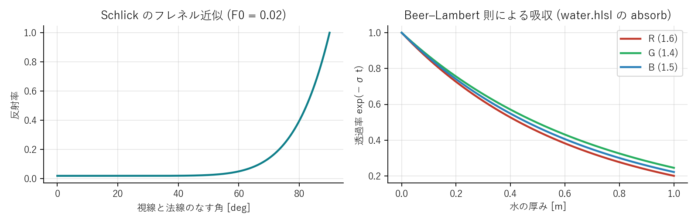
ピクセルの最終色は「屈折して見える背景」と「反射して見える環境」をフレネル反射率で混ぜたものです。
反射方向 \(\mathbf r = \text{reflect}(-\mathbf v, \mathbf n)\) に何が見えるかを知るには、本来はその方向へ光線を飛ばす必要があります。本プログラムの環境はグレーのスタジオなので、方向だけから色を返す簡単な関数で代用しています。上を向く方向ほど明るく、光源の方向には大きく柔らかい白い光 (撮影用のソフトボックスの映り込み) を置きます。
24 // ---------------------------------------------------------------------
25 // スタジオ環境 (映り込み用)。動画と同じ無彩色のグラデーション +
26 // 大きなソフトボックス光源のハイライト。
27 // ---------------------------------------------------------------------
28 float3 EnvColor(float3 d, float softScale)
29 {
30 float up = saturate(d.y * 0.5 + 0.5);
31 float3 low = float3(0.14, 0.14, 0.15); // 床側 (暗いグレー)
32 float3 high = float3(0.42, 0.42, 0.43); // 天井側 (明るいグレー)
33 float3 sky = lerp(low, high, up);
34 // ソフトボックス: 光源方向の周りに広く柔らかい白いハイライト
35 // 反射率 2〜4% を掛けても白く飛ぶよう、放射輝度は大きめにしておく
36 float soft = pow(saturate(dot(d, lightDir.xyz)), 22.0) * 18.0 * softScale;
37 return sky + soft;
38 }ソフトボックスの輝度を 18 という大きな値にしているのは、フレネル反射率が数 % しかない上面でも \(0.04 \times 18 \approx 0.7\) となって白く飛ぶようにするためです。元動画の水塊の上面に見える大きな白いハイライトはこの映り込みです。この「反射率は低いが光源が極端に明るい」という関係は、現実の水面のきらめきの本質でもあります。
水面越しに見える背景は、屈折によって歪んで見えます。厳密には視線を屈折させて背景と交差させる必要がありますが、「水を描く前の画面」を保存しておき、法線の方向に少しずらした位置をサンプリングする だけで、それらしい歪みが得られます。法線をビュー空間に変換し、その xy 成分に定数 (0.035) を掛けたぶんだけスクリーン座標をずらします。
ずらした先が水より手前にある物体 (本プログラムの構成では起こりにくいですが) だった場合は、ずらさない位置に戻します。これが無いと、手前の物体が水面の中に映り込む不自然な絵になります。
水は厚いほど暗く見えます。光が媒質を距離 \(t\) 進むとき、透過する割合は指数関数的に減ります (Beer–Lambert 則)。
\(\sigma\) は波長ごとの吸収係数で、水は赤をやや強く吸収するので、厚い部分は青緑に寄ります。元動画の水は灰緑色なので、本プログラムでは \(\sigma = (1.6, 1.4, 1.5)\ \mathrm{m^{-1}}\) と、R と B をやや強めに吸収させています。
厚みは「視線が水の中を通る距離」です。表面の深度は今描いているピクセルそのものから分かります。出口側は、直前のパスで描いた 水面メッシュの裏面の深度 を使います。ただし、水の向こうに床があれば光はそこで止まるので、背景の深度との小さい方を取ります。
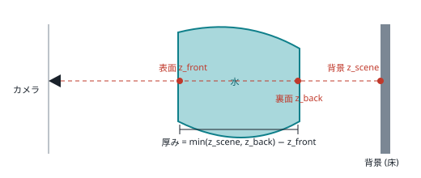
裏面深度は、水面メッシュを 表面カリング (裏面だけ描く) で深度バッファに描くだけで得られます。追加コストは水面の描画 1 回分ですが、この 1 パスで「厚い水塊は暗く、薄い飛沫は透明」という水らしさが大きく向上します。
光源の鏡面反射 (Blinn–Phong) を加えます。法線と「光源方向と視線方向の中間ベクトル」\(\mathbf h\) の内積を高い指数 (220) で累乗すると、鋭い点状のハイライトになります。飛沫の水滴 1 つ 1 つがきらめくのはこの項です。影の中では光源が遮られるのでハイライトも消します。
以上をすべて含んだシェーダーです。各行が上の節のどれに対応するかをコメントで示しています。
62 float4 PS_Water(VSOut i) : SV_TARGET
63 {
64 float3 n = normalize(i.normal);
65 float3 v = normalize(cameraPos.xyz - i.worldPos);
66 float ndv = saturate(dot(n, v));
67
68 // --- フレネル (Schlick)。水の反射率 ≒ 2% ---
69 float fresnel = 0.02 + 0.98 * pow(1.0 - ndv, 5.0);
70
71 // --- 反射: スタジオ環境 ---
72 float3 refl = EnvColor(reflect(-v, n), 1.0);
73
74 // --- 屈折: 背景をスクリーン空間で法線方向にずらして参照 ---
75 float2 uv = i.pos.xy * screenSize.zw;
76 float3 nView = mul(n, (float3x3)view); // ビュー空間の法線
77 float2 uvR = uv + nView.xy * float2(1.0, -1.0) * 0.035;
78 // ずらした先が水より手前の物体なら元の位置を使う
79 float sceneZ = LinearizeDepth(gSceneDepth.SampleLevel(gLinearClamp, uvR, 0));
80 if (sceneZ < i.viewZ) { uvR = uv; sceneZ = LinearizeDepth(gSceneDepth.SampleLevel(gLinearClamp, uv, 0)); }
81 float3 refr = gSceneColor.SampleLevel(gLinearClamp, uvR, 0).rgb;
82
83 // --- 厚みによる吸収。厚み = 表面から「裏面 or 背後の物体」の近い方まで ---
84 float backZ = LinearizeDepth(gWaterBack.SampleLevel(gLinearClamp, uv, 0));
85 float thickness = max(0.0, min(sceneZ, backZ) - i.viewZ);
86 float3 absorb = float3(1.6, 1.4, 1.5); // 動画の水は僅かに緑がかった灰色のガラス質
87 refr *= exp(-thickness * absorb);
88 // 内部散乱による僅かな明るさ (泡立ちの白っぽさ)
89 refr += float3(0.03, 0.034, 0.034) * (1.0 - exp(-thickness * 3.0));
90
91 // --- ハイライト (Blinn-Phong) ---
92 float3 hv = normalize(lightDir.xyz + v);
93 float spec = pow(saturate(dot(n, hv)), 220.0) * 2.0;
94 float shadow = ShadowFactor(gShadowMap, i.worldPos, 0.0015);
95
96 float3 color = lerp(refr, refl, fresnel) + spec * shadow;
97 return float4(color, 1.0);
98 }元動画では水槽の壁はほとんど見えません。しかし完全に消すと水が空中で四角く止まっているように見えてしまうので、ごく薄いガラスとして描いています。ガラスの色は「フレネル反射 + ハイライト」の加算項と、「背景をどれだけ遮るか」の不透明度に分けて考えるのが自然です。この場合は 乗算済みアルファ のブレンド (SrcBlend = ONE, DestBlend = INV_SRC_ALPHA) が適しています。
59 // ---------------------------------------------------------------------
60 // ガラス水槽: フレネルによる映り込みと僅かな灰色の着色
61 // ---------------------------------------------------------------------
62 float4 PS_Glass(VSOut i, bool isFront : SV_IsFrontFace) : SV_TARGET
63 {
64 float3 n = normalize(i.normal);
65 if (!isFront) n = -n; // 裏面は法線を反転
66 float3 v = normalize(cameraPos.xyz - i.worldPos);
67 float ndv = saturate(dot(n, v));
68 float fresnel = 0.04 + 0.96 * pow(1.0 - ndv, 5.0);
69
70 float3 refl = EnvColor(reflect(-v, n), 0.25); // ガラスは面が重なるので控えめに
71 float3 hv = normalize(lightDir.xyz + v);
72 float spec = pow(saturate(dot(n, hv)), 200.0) * 1.2;
73
74 // 乗算済みアルファ (SrcBlend=ONE, DestBlend=INV_SRC_ALPHA):
75 // rgb = 加算する光 (反射 + ハイライト + 僅かな着色), a = 背景を遮る割合
76 float3 color = refl * fresnel * 0.5 + spec * 0.3 + float3(0.55, 0.56, 0.56) * 0.01;
77 float alpha = saturate(fresnel * 0.5 + 0.015);
78 return float4(color, alpha);
79 }水槽の壁は物理的には領域の上端 (1.6 m) まであり粒子はそこを越えられませんが、描画するのは下部 0.3 m だけです。動画で僅かに見える水槽の縁の表現です。
床は「無限に広い灰色の面」で、動画のグレーのサイクロラマ (床と背景が一続きになった撮影用の壁) を模しています。特定の位置に明るさの山を持つ緩やかな照明の分布と、遠方を背景色に溶け込ませる フォグ で地平線を隠しています。
29 // ---------------------------------------------------------------------
30 // 床: 動画のようなグレーのサイクロラマ (画面左上が明るく右下へ暗くなる)
31 // ---------------------------------------------------------------------
32 float4 PS_Floor(VSOut i) : SV_TARGET
33 {
34 float3 p = i.worldPos;
35
36 // 大きな光源による柔らかい明るさの分布 (左奥が明るい)
37 float2 lightCenter = float2(1.6, 0.1);
38 float d2 = dot(p.xz - lightCenter, p.xz - lightCenter);
39 float pool = 0.36 + 0.50 * exp(-d2 / (2.0 * 2.0 * 2.0));
40
41 // 水槽のガラス底板越しは僅かに暗い
42 float2 a = abs(p.xz);
43 float inTank = (1.0 - smoothstep(tank.y - 0.01, tank.y + 0.01, max(a.x, a.y)));
44 pool *= lerp(1.0, 0.86, inTank);
45
46 // 水が落とす影
47 float shadow = ShadowFactor(gShadowMap, p, 0.002);
48 pool *= lerp(0.66, 1.0, shadow);
49
50 float3 color = float3(0.46, 0.46, 0.47) * pool;
51
52 // 遠方は背景色へ溶け込ませる
53 float dist = distance(cameraPos.xyz, p);
54 float fog = 1.0 - exp(-max(0.0, dist - 2.0) * 0.20);
55 color = lerp(color, float3(0.27, 0.27, 0.28), fog);
56 return float4(color, 1.0);
57 }ここまでの描画は 16 ビット浮動小数点の HDR ターゲットに、ウィンドウの縦横 2 倍の解像度で行っています。最後の全画面パスで次の処理をまとめて行います。
21 float4 PS_Post(VSOut i) : SV_TARGET
22 {
23 // バイリニアで 2x2 テクセルの平均 (SSAA の縮小)
24 float3 c = gHdr.SampleLevel(gLinearClamp, i.uv, 0).rgb;
25
26 // 緩やかなトーンマップ (ハイライトの白飛びを抑える)
27 c = c / (1.0 + c * 0.35) * 1.35;
28
29 // 周辺減光 (動画の四隅の暗さを再現)
30 float2 d = (i.uv - 0.5) * float2(1.0, 0.75);
31 float vig = 1.0 - 0.55 * pow(saturate(length(d) * 1.6), 2.0);
32 c *= vig;
33
34 // ガンマ補正
35 c = pow(saturate(c), 1.0 / 2.2);
36 return float4(c, 1.0);
37 }描画シェーダーが参照するテクスチャとスロットの対応をまとめておきます。C++ 側の PSSetShaderResources の並びと一致します。
| スロット | 水面 (PS_Water) | 床 (PS_Floor) | ポスト (PS_Post) |
|---|---|---|---|
| t0 | 三角形バッファ (VS) | – | HDR シーン |
| t1 | 水の無いシーンの色 | – | – |
| t2 | 水の無いシーンの深度 | – | – |
| t3 | シャドウマップ | シャドウマップ | – |
| t4 | 水の裏面深度 | – | – |
| s0 / s1 | リニア (クランプ) サンプラ / 比較サンプラ | ||
PS_Water の absorb を float3(0,0,0) にすると水は完全に透明になり、逆に (8,8,8) にすると墨のようになります。EnvColor のソフトボックスの輝度 18 を 2 にして、水塊の上面のハイライトがどうなるか比べてください。「反射率は低いが光源は明るい」の意味が分かります。PS_Post のガンマ補正 (pow(saturate(c), 1.0/2.2)) を外すと、全体がどのくらい暗くなるかを確認してください。SSAA (SimConfig.h) を 1 にするとレンダリングが約 4 倍速くなりますが、飛沫の縁がざらつきます。シミュレーションとレンダリングを「動くプログラム」にするには、ウィンドウの管理、入力、カメラ、そして結果を保存する仕組みが要ります。派手さはありませんが、実験を繰り返すための土台です。
Windows のアプリケーションは、OS から送られてくるメッセージ (キー入力、マウス、ウィンドウの破棄など) をウィンドウプロシージャで処理します。本プログラムはゲーム的な構成で、PeekMessage でメッセージを溜めずに処理し、残りの時間で 1 フレーム進めます。
54 LRESULT CALLBACK WndProc(HWND hwnd, UINT msg, WPARAM wp, LPARAM lp)
55 {
56 switch (msg)
57 {
58 case WM_DESTROY: PostQuitMessage(0); return 0;
59 case WM_KEYDOWN:
60 switch (wp)
61 {
62 case VK_ESCAPE: g_app.quit = true; break;
63 case VK_SPACE: g_app.paused = !g_app.paused; break;
64 case 'S': g_app.stepOnce = true; break;
65 case 'R': g_app.resetReq = true; break;
66 case 'P': g_app.toggleParticles = true; break;
67 case 'W': g_app.toggleWater = true; break;
68 case 'G': g_app.toggleGlass = true; break;
69 }
70 return 0;
71 case WM_RBUTTONDOWN: g_app.rightDrag = true; SetCapture(hwnd); GetCursorPos(&g_app.lastMouse); return 0;
72 case WM_RBUTTONUP: g_app.rightDrag = false; ReleaseCapture(); return 0;
73 case WM_MOUSEMOVE:
74 if (g_app.rightDrag)
75 {
76 POINT p; GetCursorPos(&p);
77 g_app.orbitYaw += (p.x - g_app.lastMouse.x) * 0.3f;
78 g_app.orbitPitch += (p.y - g_app.lastMouse.y) * 0.3f;
79 g_app.lastMouse = p;
80 }
81 return 0;
82 case WM_MOUSEWHEEL: g_app.zoom += GET_WHEEL_DELTA_WPARAM(wp) / 120.0f; return 0;
83 }
84 return DefWindowProcW(hwnd, msg, wp, lp);
85 }プロシージャは入力を「フラグ」に記録するだけで、実際の処理 (リセット、一時停止など) はメインループの先頭でまとめて行います。ウィンドウプロシージャの中で重い処理や GPU の操作を行わないのは、メッセージ処理を短く保つための定石です。
カメラは注視点を中心に回る「軌道カメラ」です。ヨー (水平角)、ピッチ (仰角)、距離の 3 つで視点位置が決まります。
\(\phi\) がヨー、\(\theta\) がピッチです。ビュー行列は XMMatrixLookAtLH、射影行列は垂直画角 40° の XMMatrixPerspectiveFovLH で作ります。
14 XMVECTOR OrbitCamera::Eye() const
15 {
16 float yaw = XMConvertToRadians(yawDeg), pitch = XMConvertToRadians(pitchDeg);
17 XMFLOAT3 offset(std::sin(yaw) * std::cos(pitch) * distance,
18 std::sin(pitch) * distance,
19 std::cos(yaw) * std::cos(pitch) * distance);
20 return XMVectorSet(target.x + offset.x, target.y + offset.y, target.z + offset.z, 1.0f);
21 }
22
23 XMMATRIX OrbitCamera::View() const
24 {
25 return XMMatrixLookAtLH(Eye(), XMLoadFloat3(&target), XMVectorSet(0, 1, 0, 0));
26 }
27
28 XMMATRIX OrbitCamera::Proj(float aspect, float nearZ, float farZ) const
29 {
30 return XMMatrixPerspectiveFovLH(XMConvertToRadians(fovDeg), aspect, nearZ, farZ);DirectXMath の行列は行優先で、ベクトルを行ベクトルとして右から行列を掛ける規約です。一方 HLSL の定数バッファは既定で列優先に格納されます。両者を合わせる最も簡単な方法は、C++ 側で転置してから定数バッファに書き、HLSL 側で mul(vec, M) と書くことです。本プログラムはこの方法をとっています。
226 // ---------------------------------------------------------------------
227 // フレーム定数の更新
228 // ---------------------------------------------------------------------
229 void Renderer::UpdateFrameParams(float time)
230 {
231 const float nearZ = 0.05f, farZ = 60.0f;
232 XMMATRIX view = m_camera.View();
233 XMMATRIX proj = m_camera.Proj(float(m_rtW) / float(m_rtH), nearZ, farZ);
234
235 // 光源: 平行光。シーン全体を覆う正射影
236 XMVECTOR L = XMVector3Normalize(XMVectorSet(cfg::LIGHT_DIR[0], cfg::LIGHT_DIR[1], cfg::LIGHT_DIR[2], 0));
237 XMVECTOR focus = XMVectorSet(0, 0.4f, 0, 1);
238 XMMATRIX lightView = XMMatrixLookAtLH(XMVectorAdd(focus, XMVectorScale(L, 4.0f)), focus, XMVectorSet(0, 1, 0, 0));
239 XMMATRIX lightProj = XMMatrixOrthographicLH(3.0f, 3.0f, 0.1f, 10.0f);
240
241 // HLSL 側は mul(vec, M) の行ベクトル規約 + 列優先パッキングなので転置して格納
242 XMStoreFloat4x4(&m_frame.viewProj, XMMatrixTranspose(view * proj));
243 XMStoreFloat4x4(&m_frame.view, XMMatrixTranspose(view));
244 XMStoreFloat4x4(&m_frame.lightViewProj, XMMatrixTranspose(lightView * lightProj));
245 XMStoreFloat4(&m_frame.cameraPos, m_camera.Eye());
246 XMStoreFloat4(&m_frame.lightDir, L);
247 m_frame.screenSize = XMFLOAT4(float(m_rtW), float(m_rtH), 1.0f / m_rtW, 1.0f / m_rtH);
248 m_frame.params = XMFLOAT4(time, nearZ, farZ, 0.0f);
249 m_frame.tank = XMFLOAT4(cfg::TANK_INNER_HALF, cfg::TANK_OUTER_HALF, cfg::GLASS_VISIBLE_HEIGHT, cfg::FLOOR_Y);
250 m_d3d->UpdateConstantBuffer(m_frameCB.Get(), &m_frame, sizeof(FrameParams));
251 }--record を付けると、毎フレーム描画後にバックバッファを CPU に読み戻し、24 ビットの BMP として保存します。GPU のテクスチャは直接 CPU から読めないので、STAGING 用途のテクスチャに CopyResource してから Map します。BMP はヘッダが 54 バイトの単純な形式で、外部ライブラリなしで書けます (行が下から上、各ピクセルが BGR 順、行の長さが 4 の倍数、という 3 つの癖だけ覚えておけば十分です)。
87 // バックバッファを 24bit BMP として保存する
88 void SaveBackBufferBMP(D3DContext& d3d, const std::string& path)
89 {
90 ID3D11Device* dev = d3d.Device();
91 ID3D11DeviceContext* ctx = d3d.Context();
92
93 D3D11_TEXTURE2D_DESC desc;
94 d3d.BackBuffer()->GetDesc(&desc);
95 desc.Usage = D3D11_USAGE_STAGING;
96 desc.BindFlags = 0;
97 desc.CPUAccessFlags = D3D11_CPU_ACCESS_READ;
98 desc.MiscFlags = 0;
99 ComPtr<ID3D11Texture2D> staging;
100 if (FAILED(dev->CreateTexture2D(&desc, nullptr, &staging))) return;
101 ctx->CopyResource(staging.Get(), d3d.BackBuffer());
102
103 D3D11_MAPPED_SUBRESOURCE mapped;
104 if (FAILED(ctx->Map(staging.Get(), 0, D3D11_MAP_READ, 0, &mapped))) return;
105
106 const int w = desc.Width, h = desc.Height;
107 const int rowBytes = (w * 3 + 3) & ~3; // BMP の行は 4 バイト境界
108 std::vector<unsigned char> pixels(rowBytes * h);
109 for (int y = 0; y < h; ++y)
110 {
111 const unsigned char* src = (const unsigned char*)mapped.pData + (h - 1 - y) * mapped.RowPitch; // BMP は下から上
112 unsigned char* dst = pixels.data() + y * rowBytes;
113 for (int x = 0; x < w; ++x)
114 {
115 dst[x * 3 + 0] = src[x * 4 + 2]; // B
116 dst[x * 3 + 1] = src[x * 4 + 1]; // G
117 dst[x * 3 + 2] = src[x * 4 + 0]; // R
118 }
119 }
120 ctx->Unmap(staging.Get(), 0);
121
122 #pragma pack(push, 1)
123 struct { uint16_t type; uint32_t size; uint16_t r1, r2; uint32_t offset; } fileHdr =
124 { 0x4D42, uint32_t(54 + pixels.size()), 0, 0, 54 };
125 struct { uint32_t size; int32_t w, h; uint16_t planes, bpp; uint32_t comp, imgSize; int32_t xppm, yppm; uint32_t clrUsed, clrImp; } infoHdr =
126 { 40, w, h, 1, 24, 0, uint32_t(pixels.size()), 2835, 2835, 0, 0 };
127 #pragma pack(pop)
128 FILE* f = nullptr;
129 if (fopen_s(&f, path.c_str(), "wb") == 0 && f)
130 {
131 fwrite(&fileHdr, sizeof(fileHdr), 1, f);
132 fwrite(&infoHdr, sizeof(infoHdr), 1, f);
133 fwrite(pixels.data(), 1, pixels.size(), f);
134 fclose(f);
135 }
136 }録画時は Present(0, 0) で垂直同期を待たず、計算が終わり次第次のフレームへ進みます。1 フレームの物理時間は固定なので、どれだけ時間がかかっても 24fps の動画が得られます。連番画像から動画ファイルを作るには ffmpeg などを使います。
ffmpeg -framerate 24 -i capture/frame_%04d.bmp -pix_fmt yuv420p splash.mp4build.bat は Visual Studio の vcvars64.bat で環境変数を設定してから cl を直接呼びます。プロジェクトファイルを作らずに済むので、ソースが数ファイルのプログラムでは手軽です。
/utf-8: ソースは UTF-8 で書かれており、日本語コメントを正しく扱うために必要です。/std:c++17, /EHsc: C++17 と例外を有効にします。/SUBSYSTEM:CONSOLE: ウィンドウアプリですが、統計情報を printf でコンソールにも出したいのでコンソールサブシステムにしています。build.bat のコメントが英語なのは、cmd.exe が UTF-8 の日本語を正しく解釈できず、日本語を含む行で構文エラーになることがあるためです。バッチファイルだけは ASCII で書く、というのが Windows 開発の小さな教訓です。
sequenceDiagram
participant M as main
participant D as D3DContext
participant S as SPHSimulator
participant C as MarchingCubes
participant R as Renderer
M->>D: Initialize(hwnd, 1280, 720)
M->>S: Initialize(d3d, spacing)
S->>D: バッファ生成 / CS × 7 コンパイル
M->>C: Initialize(d3d, spacing)
C->>C: テーブル生成 + 自己検証
C->>D: バッファ生成 / CS × 4 コンパイル
M->>R: Initialize(d3d)
R->>D: RT / ステート / VS,PS × 11
loop 毎フレーム
M->>S: StepFrame() (45 サブステップ)
M->>S: SortParticles()
M->>C: Build(sim)
M->>R: Render(sim, mc, t)
M->>D: Present()
M-->>M: (--record なら BMP 保存)
end
| オプション | 説明 |
|---|---|
--spacing <m> | 粒子間隔。既定 0.014 |
--record [dir] | 連番 BMP を保存 (既定 capture/) |
--frames <n> | n フレームで自動終了 |
--particles | 粒子表示で開始 |
--resttest | 水塊を床に静置するテストシーン |
--debug | D3D11 デバッグレイヤー |
| キー | 動作 |
|---|---|
| Space / S / R | 一時停止 / 1 フレーム進める / リセット |
| P / W / G | 粒子表示 / 水面 / ガラスの切り替え |
| 右ドラッグ / ホイール | カメラ回転 / ズーム |
| Esc | 終了 |
「この動画と同じものを作る」という課題では、シミュレーションの実装そのものと同じくらい、動画から数値を読み取る 作業が重要です。水槽の大きさ、水塊の位置、カメラの角度、照明の向き ― どれも動画には書かれていません。本章は、それらをどう推定し、どう検証したかの記録です。
4.25 秒、102 フレームの動画を等間隔に切り出して並べ、何が起きているかを言葉にします。
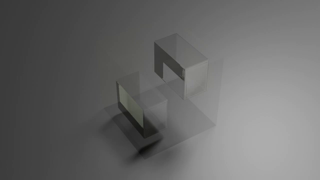
ここから、次の設計判断が導かれます。
カメラをヨー −45° に置くと、画面の右方向はワールドの \((-x, -z)\)、画面の奥方向は \((+x, -z)\) になります (左手系であることに注意 ― 右手系で計算すると鏡像になり、最初の試作はまさにそうなりました)。この対応から「手前左」は \(+z\) 側、「奥右」は \(-z\) 側と分かり、A を \(z \in [0.10, 0.35]\)、B を \(z \in [-0.42, -0.10]\) に置きました。x 方向の幅は画面上の見た目の幅から、それぞれ 0.5 m、0.55 m と読みました。
最も重要で、最も見落としやすいのが スケール です。動画には目盛りがありません。しかし物理には「重力加速度は 9.81 m/s²」という絶対的な目盛りがあります。落下する物体が \(t\) 秒間に落ちる距離は \(\frac{1}{2} g t^2\) なので、画面上で B が何ピクセル落ちたかを測れば、1 ピクセルが何メートルかが分かります。
B の底面は 12 フレーム (0.5 秒) で約 95 ピクセル落下しました。0.5 秒の自由落下は 1.23 m です。一方、水槽の対角線は画面上で約 240 ピクセルで、これは \(\sqrt 2 \times\) 幅に相当します。見下ろし角による縦方向の圧縮 (\(\cos 30° \approx 0.87\)) を考慮すると、水槽の幅は約 2 m と推定できます。
水槽を 2 m 角でモデル化すると、同じ粒子間隔では粒子数が 8 倍になり、リアルタイム性が失われます。そこで幾何は 1 m 角のまま、重力を半分 にしました。これは フルード相似 という流体力学の相似則に基づいています。重力が支配する流れでは、無次元数 \(\mathrm{Fr} = v / \sqrt{gL}\) が等しければ流れの形は相似になります。長さを \(1/2\) にして \(g\) も \(1/2\) にすると、特性時間 \(\sqrt{L/g}\) は変わらないので、動画と同じ秒数で同じ形の動き が再現されます。
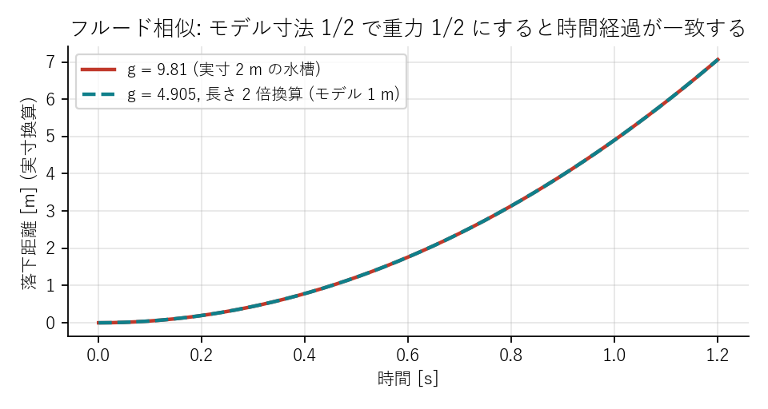
カメラの注視点と距離は、水槽の中心が画面のどこに来るかで決めます。動画では水槽の中心が画面の (47 %, 68 %) の位置にあり、対角線が画面幅の 37 % でした。本プログラムでは、レンダリングした画像と動画を並べて同じ位置・同じ大きさになるまで注視点と距離を調整しました。最初の推定では画面上の位置が上下に 45 ピクセルずれ、2 回の反復で収束しました。
調整のコツは、1 回の変更で 1 つのパラメータだけ動かし、その効果をピクセル単位で測る ことです。感覚で複数を同時に動かすと、どれが効いたか分からなくなります。
物理が合った後は絵作りです。動画と並べて違いを言葉にし、対応するパラメータを 1 つずつ動かしました。
| 動画との差異 | 原因 | 対応 |
|---|---|---|
| 全体が明るすぎる | 床の基準輝度、環境光 | 床 0.66 → 0.46、環境 0.78 → 0.42、背景 0.40 → 0.27 |
| 水がミルクのように白い | 薄い水でも背景が明るく透け、反射も明るい | 環境を暗く、ソフトボックスを鋭く (指数 8 → 22) |
| 水が青すぎる | 吸収係数の R が強すぎ | (4.6, 3.9, 3.7) → (1.6, 1.4, 1.5) と中立寄りに |
| 水槽の外に水がこぼれる | 壁の高さ 0.28 m では飛沫が越える | 衝突壁を領域上端 (1.6 m) まで、描画は 0.3 m だけ |
| 水面に格子模様 | 初期配置の粒子格子 | スカラー場の平滑化 2 回 |
| 影が硬く濃い | PCF の範囲が狭い | サンプル間隔 2.5 テクセル、影の濃さ 0.55 → 0.66 |
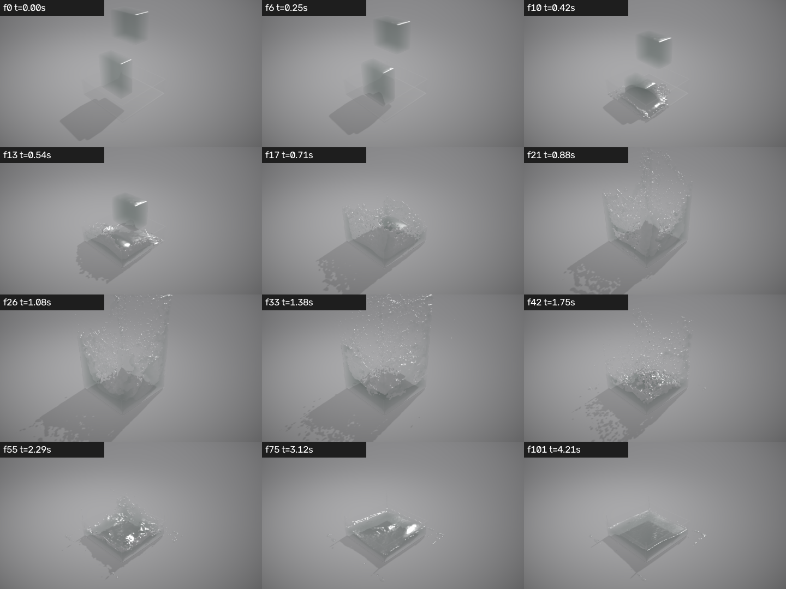
比較すると、なお違いは残ります。それぞれの原因を理解しておくことは、次に何を改善すべきかを判断する材料になります。
調整は「録画 → 動画と並べる → 差異を言葉にする → 1 つ変える」の反復でした。この反復を速くするために、次の 3 つが役立ちました。
--record --frames 102 で 8 秒で全フレームが出る (実時間再生を待たない)。SimConfig.h と 3 つのシェーダーに集約されており、どこを変えたかが差分で追える。SCENE_SCALE を 1.0 (重力 9.81) にすると、着水が動画より早く、飛沫は低くなります。動画と並べて「時間の進み方」の違いを見てください。CAM_YAW_DEG を +45 にすると鏡像になります。左手系の座標対応を確かめる良い練習です。本プログラムは「動く最小構成」です。流体 CG の研究と実務は、ここで扱った各段階をそれぞれ大きく発展させてきました。本章では、次に学ぶべき手法を、本プログラムのどこを置き換えれば試せるかという観点で紹介します。
WCSPH は「圧縮したら押し返す」方式なので、音速を高くしないと数 % の密度変動が残り、時間刻みも音速で制限されます。PCISPH (2009)、IISPH (2013)、DFSPH (2015) は、密度が基準値になるように圧力を 反復的に解く ことで、密度変動を 0.1 % 以下に抑えつつ時間刻みを数倍〜10 倍に伸ばします。本プログラムでは CS_Density と CS_Force の間に「圧力を予測して修正する」ループが入り、SOUND_SPEED は不要になります。計算は 1 ステップあたり重くなりますが、ステップ数が減るので総合的には速くなることが多い手法です。
速度ではなく 位置の拘束 として密度を扱い、拘束を満たすよう粒子を直接動かす手法です (Macklin & Müller, 2013)。大きな時間刻みでも決して発散しない頑健さから、ゲームエンジンの流体 (NVIDIA FleX など) で広く使われています。SPH の一種と見ることもできますが、「力を積分する」という本プログラムの骨格とは考え方が異なります。
本プログラムには COHESION_KAPPA という係数が用意されており、Becker & Teschner (2007) の簡易的な凝集力 \(-\kappa \sum_j (\mathbf x_i - \mathbf x_j) W\) を有効にできます。より物理的な表面張力は Akinci ら (2013) の手法が標準で、粒子の法線を推定して曲率に応じた力を加えます。小さな水滴が丸くなる、細い流れが千切れてしずくになる、といった現象に効きます。
本プログラムの壁は「平面の解析的な補正 + クランプ」ですが、任意形状の障害物 (動画の水槽の縁、あるいはコップやキャラクター) を扱うには、障害物の表面に粒子を並べて流体粒子と同じ枠組みで相互作用させる 境界粒子法 (Akinci ら, 2012) が必要です。BoundaryDensity を境界粒子からの寄与に置き換えます。
動画に見える白い泡は、空気の巻き込みです。Ihmsen ら (2012) は、流体粒子の「捕捉された空気の量」を速度差と曲率から推定し、そこから軽い 二次粒子 (泡、スプレー、しぶき) を生成して別途描く手法を提案しました。見た目への効果は絶大で、水面が白く泡立つ表現に不可欠です。
元動画のような映像制作では、圧力を格子で解き、粒子で移流する FLIP 法 (Zhu & Bridson, 2005) や、その改良である APIC が主流です。非圧縮性が厳密で細いシートが保たれる一方、格子解像度で細部が決まります。本プログラムの粒子データ構造はそのまま使え、圧力の計算が「格子上のポアソン方程式を解く」処理に変わります。
本プログラムのスカラー場は粒子ごとに球状のふくらみを足すため、薄いシートが「粒々」に見えます。Yu & Turk (2013) は、近傍粒子の分布の主成分分析から楕円体のカーネルを作り、シート状の部分では平たく、孤立した部分では丸くふくらませることで、格段に滑らかな表面を得ました。CS_Field の前に「各粒子の共分散行列を計算する」パスを追加します。
メッシュを作らず、粒子を球としてスクリーン空間に深度で描き、深度画像を平滑化して法線を求め、厚みも粒子の描画で積算する手法です (van der Laan ら, 2009)。3 次元格子を持たないので、格子解像度の制約と 340 万点のスカラー場計算から解放されます。カメラから見える面しか得られないため影やレイトレーシングとは相性が悪いものの、ゲームでは広く使われています。
マーチングキューブ法は格子間隔より細い特徴を表現できません。Dual Contouring は法線の情報を使って鋭いエッジを再現し、八分木による適応格子は表面付近だけ細かくします。本プログラムは表面付近以外のセルも全て評価しているので、表面のあるセルだけを列挙する 2 段階の処理にすれば、格子点の計算を 1/10 以下に減らせます。
スクリーン空間の屈折は「背景を法線でずらす」だけの近似です。DirectX 12 の DXR やコンピュートシェーダーによる自前のレイマーチングを使えば、視線を水面で屈折させて水中を進め、裏面で再び屈折させて背景に到達させる本物の屈折が計算できます。元動画の水塊が「ガラスの箱」に見えるのはこの効果です。
水面で屈折した光が床に集まって作る揺らめく模様です。光源からのフォトンを追跡する方法と、水面の法線から床への光の集中を近似する方法があります。プールの底の模様を再現したいなら必須です。
EnvColor は方向から色を返す手書きの関数でした。これを実写のパノラマ画像 (HDRI) に置き換えると、反射に実世界の風景が映り込み、質感が一気に上がります。キューブマップテクスチャを 1 枚読み込み、texCUBE でサンプリングするだけです。
| 定数 | 既定値 | 単位 | 意味・効き方 |
|---|---|---|---|
DEFAULT_SPACING | 0.014 | m | 粒子間隔 d。粒子数 ∝ 1/d³、計算時間 ∝ 1/d⁴ |
H_PER_SPACING | 2.0 | – | 平滑化長 h = 2d。近傍粒子数 ≒ 33 |
REST_DENSITY | 1000 | kg/m³ | 基準密度 ρ0 |
SOUND_SPEED | 12 | m/s | 数値音速 c。大きいほど硬く、dt が小さくなる |
TAIT_GAMMA | 7 | – | 状態方程式の指数 |
VISCOSITY_MU | 0.5 | Pa·s | ラプラシアン型粘性。減衰率 ≒ 22μ /s |
ARTIFICIAL_VISC_ALPHA | 0.08 | – | Monaghan 人工粘性。衝撃時の飛散を抑える |
COHESION_KAPPA | 0 | – | 凝集力 (0 = 無効) |
XSPH_EPS | 0.15 | – | XSPH 速度平滑化 |
SCENE_SCALE | 2.0 | – | 実寸 / モデル寸法。重力を 1/SCENE_SCALE に |
CFL | 0.4 | – | dt = CFL·h/c |
WALL_RESTITUTION | 0.05 | – | 壁衝突の反発係数 |
WALL_FRICTION | 0.999 | /サブステップ | 壁接触中の接線速度の減衰 |
BOUNDARY_DENSITY_SCALE | 1.0 | – | ゴースト密度の強さ |
MAX_SPEED_PER_H | 0.5 | – | 速度上限 = 0.5 h / dt |
TANK_INNER_HALF | 0.5 | m | 水槽内側の半幅 (内寸 1 m 角) |
TANK_HEIGHT | 1.6 | m | 衝突用の壁の高さ |
GLASS_VISIBLE_HEIGHT | 0.3 | m | 描画するガラスの高さ |
MC_CELL_PER_SPACING | 0.75 | – | MC 格子間隔 / d |
MC_FIELD_RADIUS_PER_SPACING | 2.0 | – | スカラー場カーネル半径 R / d (≤ h/d) |
MC_ISO_LEVEL | 0.5 | – | 等値レベル |
MC_SMOOTH_PASSES | 2 | 回 | スカラー場の平滑化回数 |
CAM_YAW_DEG / CAM_PITCH_DEG | −45 / 30 | ° | カメラの向き |
CAM_DISTANCE / CAM_FOV_DEG | 3.2 / 40 | m / ° | 距離と垂直画角 |
LIGHT_DIR | (0.15, 1, −0.9) | – | 光源へ向かうベクトル |
| 項目 | 式 | 実装箇所 |
|---|---|---|
| 密度 | \(\rho_i = \sum_j m W_{\text{poly6}}(r_{ij}) + \rho_{\text{wall}}\) | CS_Density |
| Tait 圧力 | \(p = \max\!\big(0,\ B[(\rho/\rho_0)^7 - 1]\big),\ B = \rho_0 c^2/7\) | CS_Density |
| 圧力加速度 | \(-\sum_j m (p_i/\rho_i^2 + p_j/\rho_j^2)\nabla W_{\text{spiky}}\) | CS_Force |
| 粘性加速度 | \(\frac{\mu}{\rho_i}\sum_j m \frac{\mathbf v_j - \mathbf v_i}{\rho_j}\nabla^2 W_{\text{visc}}\) | CS_Force |
| 人工粘性 | \(\Pi_{ij} = -\alpha c h \frac{\mathbf v_{ij}\cdot\mathbf r_{ij}}{(r_{ij}^2 + 0.01h^2)\bar\rho_{ij}}\) (接近時のみ) | CS_Force |
| XSPH | \(\hat{\mathbf v}_i = \mathbf v_i + \epsilon\sum_j \frac{m}{\rho_j}(\mathbf v_j - \mathbf v_i) W_{\text{poly6}}\) | CS_Force, CS_Integrate |
| 時間積分 | \(\mathbf v \mathrel{+}= \mathbf a\,\Delta t,\quad \mathbf x \mathrel{+}= \hat{\mathbf v}\,\Delta t\) | CS_Integrate |
| CFL | \(\Delta t = 0.4\,h/c\) | SPHSimulator::Initialize |
| ゴースト密度 | \(\rho_{\text{wall}} = \tfrac{1}{2}\rho_0(1 - d/h)^2\) | BoundaryDensity |
| スカラー場 | \(F(\mathbf x) = \sum_j (1 - r_j^2/R^2)^3\) | CS_Field |
| MC 交点 | \(t = (c - F_a)/(F_b - F_a)\) | CS_MarchingCubes |
| フレネル | \(F = 0.02 + 0.98(1 - \cos\theta)^5\) | PS_Water |
| 吸収 | \(T = \exp(-\sigma t)\) | PS_Water |
| ハイライト | \((\mathbf n\cdot\mathbf h)^{220}\) | PS_Water |
| フルード相似 | \(g_{\text{model}} = g / \text{SCENE\_SCALE}\) | SimConfig.h |
| 用語 | 説明 |
|---|---|
| SPH | Smoothed Particle Hydrodynamics。流体を粒子で表し、カーネルで物理量を補間する粒子法 |
| WCSPH | Weakly Compressible SPH。状態方程式で圧力を決める、わずかな圧縮を許す SPH |
| カーネル | 距離に応じた重み関数。平滑化長 h より遠いと 0 |
| 平滑化長 h | カーネルの半径。本プログラムでは粒子間隔の 2 倍 |
| Tait 状態方程式 | 密度から圧力を求める式 \(p = B[(\rho/\rho_0)^\gamma - 1]\) |
| CFL 条件 | 時間刻みの上限。情報が 1 ステップで格子 (粒子) 間隔を超えて伝わってはいけない |
| 人工粘性 | 接近する粒子対にだけ働く数値的な抵抗。衝撃を吸収する |
| XSPH | 粒子を動かす速度を周囲の平均に寄せる補正 |
| カウンティングソート | 整数キーの出現数を数えて位置を決めるソート。比較を行わない |
| スキャン (累積和) | 配列の先頭からの和。GPU では log n 段の並列処理で計算できる |
| ピンポンバッファ | 読み出し用と書き込み用の 2 組を交互に入れ替えて使うバッファ |
| 等値面 | スカラー場の値が一定になる面 |
| マーチングキューブ法 | 格子セルごとに 256 通りの内外パターンから等値面の三角形を生成する手法 |
| 多様体 (閉じた) | すべての辺がちょうど 2 つの三角形に共有される、穴の無いメッシュ |
| SRV / UAV / RTV / DSV | DirectX 11 のリソースビュー。読み取り / 読み書き / 描画先 / 深度 |
| コンピュートシェーダー | 描画パイプラインと独立して任意の計算を GPU で行うシェーダー |
| Dispatch | コンピュートシェーダーのスレッドグループを起動する命令 |
| AppendStructuredBuffer | カウンタ付きで末尾に要素を追加できるバッファ |
| DrawInstancedIndirect | 描画する頂点数を GPU 上のバッファから読む描画命令 |
| シャドウマップ | 光源から見た深度画像。影の判定に使う |
| PCF | Percentage Closer Filtering。複数点で影を判定して平均し、柔らかい影を作る |
| フレネル反射 | 視線の角度で反射率が変わる現象。Schlick 近似で計算 |
| Beer–Lambert 則 | 媒質を通る光が距離に対して指数的に減衰する法則 |
| 乗算済みアルファ | 色にあらかじめ不透明度を掛けておくブレンド方式。加算光と遮蔽を分けて扱える |
| SSAA | Super-Sampling Anti-Aliasing。高解像度で描いて縮小する |
| トーンマップ | HDR の輝度を表示可能な範囲に圧縮する処理 |
| フルード相似 | 重力が支配する流れで、\(v/\sqrt{gL}\) が等しければ流れが相似になる法則 |
本書執筆時点のソースコードをすべて掲載します (行番号付き)。最新版はリポジトリ github.com/githubtarohario/waterfall を参照してください。
第 1 章に全文を掲載しました。
1 // =====================================================================
2 // main.cpp
3 // 【SPH法】水しぶきシミュレーション (DirectX 11)
4 //
5 // 動画と同じ「2 つの水塊がガラス水槽へ落下し、盛大な飛沫を上げて収まる」
6 // シーンを、GPU WCSPH + マーチングキューブ法で再現する。
7 //
8 // コマンドライン:
9 // --spacing <m> 粒子間隔 [m] (既定 0.014。小さいほど高精細・低速)
10 // --record [dir] 各フレームを BMP で保存 (既定 capture/)。24fps 固定ステップ
11 // --frames <n> n フレーム描画したら自動終了
12 // --particles 粒子を点で表示するデバッグモードで開始
13 // --nowater 水面メッシュを描かない (粒子表示と組み合わせて使う)
14 // --debug D3D11 デバッグレイヤーを有効化
15 // --resttest 水塊 A を床に静置する安定性テストシーン
16 //
17 // 操作:
18 // Space : 一時停止 / 再開 S : 1 フレーム進める
19 // R : リセット P : 粒子表示の切り替え
20 // W : 水面メッシュ表示の切り替え G : ガラス水槽表示の切り替え
21 // 右ドラッグ : カメラ回転 ホイール : ズーム
22 // Esc : 終了
23 // =====================================================================
24 #include "D3DUtil.h"
25 #include "SimConfig.h"
26 #include "SPHSimulator.h"
27 #include "MarchingCubes.h"
28 #include "Renderer.h"
29 #include <algorithm>
30 #include <chrono>
31 #include <cmath>
32 #include <cstdio>
33 #include <cstring>
34 #include <string>
35 #include <direct.h>
36
37 namespace
38 {
39 // アプリケーション状態 (ウィンドウプロシージャから参照)
40 struct AppState
41 {
42 bool paused = false;
43 bool stepOnce = false;
44 bool resetReq = false;
45 bool quit = false;
46 bool toggleParticles = false;
47 bool toggleWater = false;
48 bool toggleGlass = false;
49 bool rightDrag = false;
50 POINT lastMouse = {};
51 float orbitYaw = 0, orbitPitch = 0, zoom = 0; // 入力の累積
52 } g_app;
53
54 LRESULT CALLBACK WndProc(HWND hwnd, UINT msg, WPARAM wp, LPARAM lp)
55 {
56 switch (msg)
57 {
58 case WM_DESTROY: PostQuitMessage(0); return 0;
59 case WM_KEYDOWN:
60 switch (wp)
61 {
62 case VK_ESCAPE: g_app.quit = true; break;
63 case VK_SPACE: g_app.paused = !g_app.paused; break;
64 case 'S': g_app.stepOnce = true; break;
65 case 'R': g_app.resetReq = true; break;
66 case 'P': g_app.toggleParticles = true; break;
67 case 'W': g_app.toggleWater = true; break;
68 case 'G': g_app.toggleGlass = true; break;
69 }
70 return 0;
71 case WM_RBUTTONDOWN: g_app.rightDrag = true; SetCapture(hwnd); GetCursorPos(&g_app.lastMouse); return 0;
72 case WM_RBUTTONUP: g_app.rightDrag = false; ReleaseCapture(); return 0;
73 case WM_MOUSEMOVE:
74 if (g_app.rightDrag)
75 {
76 POINT p; GetCursorPos(&p);
77 g_app.orbitYaw += (p.x - g_app.lastMouse.x) * 0.3f;
78 g_app.orbitPitch += (p.y - g_app.lastMouse.y) * 0.3f;
79 g_app.lastMouse = p;
80 }
81 return 0;
82 case WM_MOUSEWHEEL: g_app.zoom += GET_WHEEL_DELTA_WPARAM(wp) / 120.0f; return 0;
83 }
84 return DefWindowProcW(hwnd, msg, wp, lp);
85 }
86
87 // バックバッファを 24bit BMP として保存する
88 void SaveBackBufferBMP(D3DContext& d3d, const std::string& path)
89 {
90 ID3D11Device* dev = d3d.Device();
91 ID3D11DeviceContext* ctx = d3d.Context();
92
93 D3D11_TEXTURE2D_DESC desc;
94 d3d.BackBuffer()->GetDesc(&desc);
95 desc.Usage = D3D11_USAGE_STAGING;
96 desc.BindFlags = 0;
97 desc.CPUAccessFlags = D3D11_CPU_ACCESS_READ;
98 desc.MiscFlags = 0;
99 ComPtr<ID3D11Texture2D> staging;
100 if (FAILED(dev->CreateTexture2D(&desc, nullptr, &staging))) return;
101 ctx->CopyResource(staging.Get(), d3d.BackBuffer());
102
103 D3D11_MAPPED_SUBRESOURCE mapped;
104 if (FAILED(ctx->Map(staging.Get(), 0, D3D11_MAP_READ, 0, &mapped))) return;
105
106 const int w = desc.Width, h = desc.Height;
107 const int rowBytes = (w * 3 + 3) & ~3; // BMP の行は 4 バイト境界
108 std::vector<unsigned char> pixels(rowBytes * h);
109 for (int y = 0; y < h; ++y)
110 {
111 const unsigned char* src = (const unsigned char*)mapped.pData + (h - 1 - y) * mapped.RowPitch; // BMP は下から上
112 unsigned char* dst = pixels.data() + y * rowBytes;
113 for (int x = 0; x < w; ++x)
114 {
115 dst[x * 3 + 0] = src[x * 4 + 2]; // B
116 dst[x * 3 + 1] = src[x * 4 + 1]; // G
117 dst[x * 3 + 2] = src[x * 4 + 0]; // R
118 }
119 }
120 ctx->Unmap(staging.Get(), 0);
121
122 #pragma pack(push, 1)
123 struct { uint16_t type; uint32_t size; uint16_t r1, r2; uint32_t offset; } fileHdr =
124 { 0x4D42, uint32_t(54 + pixels.size()), 0, 0, 54 };
125 struct { uint32_t size; int32_t w, h; uint16_t planes, bpp; uint32_t comp, imgSize; int32_t xppm, yppm; uint32_t clrUsed, clrImp; } infoHdr =
126 { 40, w, h, 1, 24, 0, uint32_t(pixels.size()), 2835, 2835, 0, 0 };
127 #pragma pack(pop)
128 FILE* f = nullptr;
129 if (fopen_s(&f, path.c_str(), "wb") == 0 && f)
130 {
131 fwrite(&fileHdr, sizeof(fileHdr), 1, f);
132 fwrite(&infoHdr, sizeof(infoHdr), 1, f);
133 fwrite(pixels.data(), 1, pixels.size(), f);
134 fclose(f);
135 }
136 }
137 }
138
139 int main(int argc, char** argv)
140 {
141 // ------------------------------------------------------------
142 // コマンドライン解析
143 // ------------------------------------------------------------
144 float spacing = cfg::DEFAULT_SPACING;
145 bool record = false, debugLayer = false, particles = false, restTest = false, noWater = false;
146 int maxFrames = -1;
147 std::string recordDir = "capture";
148 for (int i = 1; i < argc; ++i)
149 {
150 if (!strcmp(argv[i], "--spacing") && i + 1 < argc) spacing = (float)atof(argv[++i]);
151 else if (!strcmp(argv[i], "--record"))
152 {
153 record = true;
154 if (i + 1 < argc && argv[i + 1][0] != '-') recordDir = argv[++i];
155 }
156 else if (!strcmp(argv[i], "--frames") && i + 1 < argc) maxFrames = atoi(argv[++i]);
157 else if (!strcmp(argv[i], "--particles")) particles = true;
158 else if (!strcmp(argv[i], "--nowater")) noWater = true;
159 else if (!strcmp(argv[i], "--debug")) debugLayer = true;
160 else if (!strcmp(argv[i], "--resttest")) restTest = true; // 水塊を床に静置する安定性テスト
161 }
162 if (record) _mkdir(recordDir.c_str());
163
164 // ------------------------------------------------------------
165 // ウィンドウ
166 // ------------------------------------------------------------
167 HINSTANCE hInst = GetModuleHandleW(nullptr);
168 WNDCLASSW wc = {};
169 wc.lpfnWndProc = WndProc;
170 wc.hInstance = hInst;
171 wc.hCursor = LoadCursor(nullptr, IDC_ARROW);
172 wc.lpszClassName = L"SPHSplashWindow";
173 RegisterClassW(&wc);
174
175 RECT rc = { 0, 0, cfg::WINDOW_W, cfg::WINDOW_H };
176 AdjustWindowRect(&rc, WS_OVERLAPPEDWINDOW, FALSE);
177 HWND hwnd = CreateWindowW(wc.lpszClassName, L"【SPH法】水しぶきシミュレーション / Water Splash Simulation (DirectX 11)",
178 WS_OVERLAPPEDWINDOW & ~WS_THICKFRAME & ~WS_MAXIMIZEBOX,
179 CW_USEDEFAULT, CW_USEDEFAULT, rc.right - rc.left, rc.bottom - rc.top,
180 nullptr, nullptr, hInst, nullptr);
181 ShowWindow(hwnd, SW_SHOW);
182
183 // ------------------------------------------------------------
184 // 初期化
185 // ------------------------------------------------------------
186 D3DContext d3d;
187 SPHSimulator sim;
188 MarchingCubes mc;
189 Renderer renderer;
190 try
191 {
192 d3d.Initialize(hwnd, cfg::WINDOW_W, cfg::WINDOW_H, debugLayer);
193 sim.Initialize(d3d, spacing, restTest);
194 mc.Initialize(d3d, spacing);
195 renderer.Initialize(d3d);
196 }
197 catch (const std::exception& e)
198 {
199 std::fprintf(stderr, "Initialization failed: %s\n", e.what());
200 MessageBoxA(hwnd, e.what(), "Initialization failed", MB_ICONERROR);
201 return 1;
202 }
203 renderer.showParticles = particles;
204 renderer.showWater = !noWater;
205
206 // ------------------------------------------------------------
207 // メインループ: 1 描画フレーム = 動画の 1 フレーム (1/24 秒)
208 // ------------------------------------------------------------
209 int frameIndex = 0;
210 bool firstFrame = true;
211 auto lastStat = std::chrono::steady_clock::now();
212 MSG msg = {};
213 while (!g_app.quit)
214 {
215 while (PeekMessageW(&msg, nullptr, 0, 0, PM_REMOVE))
216 {
217 if (msg.message == WM_QUIT) g_app.quit = true;
218 TranslateMessage(&msg);
219 DispatchMessageW(&msg);
220 }
221 if (g_app.quit) break;
222
223 // --- 入力の反映 ---
224 if (g_app.resetReq) { sim.Reset(); frameIndex = 0; firstFrame = true; g_app.resetReq = false; }
225 if (g_app.toggleParticles) { renderer.showParticles = !renderer.showParticles; g_app.toggleParticles = false; }
226 if (g_app.toggleWater) { renderer.showWater = !renderer.showWater; g_app.toggleWater = false; }
227 if (g_app.toggleGlass) { renderer.showGlass = !renderer.showGlass; g_app.toggleGlass = false; }
228 OrbitCamera& cam = renderer.Camera();
229 cam.yawDeg -= g_app.orbitYaw;
230 cam.pitchDeg = std::max(5.0f, std::min(85.0f, cam.pitchDeg + g_app.orbitPitch));
231 cam.distance = std::max(0.5f, cam.distance * std::pow(0.9f, g_app.zoom));
232 g_app.orbitYaw = g_app.orbitPitch = g_app.zoom = 0;
233
234 auto t0 = std::chrono::steady_clock::now();
235
236 // --- シミュレーション (最初のフレームは初期状態を表示) ---
237 bool advance = (!g_app.paused || g_app.stepOnce) && !firstFrame;
238 if (advance) { sim.StepFrame(); ++frameIndex; g_app.stepOnce = false; }
239 firstFrame = false;
240
241 // --- 水面メッシュ生成と描画 ---
242 sim.SortParticles(); // MC の近傍探索用に格子を最新化
243 mc.Build(sim);
244 renderer.Render(sim, mc, sim.SimTime());
245 d3d.SwapChain()->Present(record ? 0 : 1, 0);
246
247 // --- 録画 ---
248 if (record && (advance || frameIndex == 0))
249 {
250 char name[512];
251 std::snprintf(name, sizeof(name), "%s/frame_%04d.bmp", recordDir.c_str(), frameIndex);
252 SaveBackBufferBMP(d3d, name);
253 }
254
255 // --- 統計表示 (タイトルバー) ---
256 auto t1 = std::chrono::steady_clock::now();
257 float ms = std::chrono::duration<float, std::milli>(t1 - t0).count();
258 if (std::chrono::duration<float>(t1 - lastStat).count() > 0.25f)
259 {
260 uint32_t tris = mc.LastTriangleCount();
261 wchar_t title[256];
262 swprintf_s(title, L"SPH 水しぶき | t=%.2fs frame=%d | %u particles | %u tris | %.1f ms/frame (%u substeps)%s",
263 sim.SimTime(), frameIndex, sim.NumParticles(), tris, ms, sim.SubstepsPerFrame(),
264 g_app.paused ? L" [PAUSED]" : L"");
265 SetWindowTextW(hwnd, title);
266 lastStat = t1;
267 }
268
269 if (maxFrames >= 0 && frameIndex >= maxFrames) break;
270 }
271 return 0;
272 } 1 #pragma once
2 // =====================================================================
3 // D3DUtil.h
4 // DirectX 11 の薄いユーティリティ層。
5 // デバイス生成、バッファ / ビュー生成、シェーダーのコンパイルなど、
6 // 各モジュールで繰り返し使う定型処理をまとめる。
7 // =====================================================================
8 #define WIN32_LEAN_AND_MEAN
9 #define NOMINMAX
10 #include <windows.h>
11 #include <d3d11.h>
12 #include <d3dcompiler.h>
13 #include <dxgi.h>
14 #include <wrl/client.h>
15 #include <DirectXMath.h>
16 #include <string>
17 #include <vector>
18 #include <stdexcept>
19
20 using Microsoft::WRL::ComPtr;
21
22 // HRESULT の失敗を例外に変換する
23 inline void ThrowIfFailed(HRESULT hr, const char* what)
24 {
25 if (FAILED(hr))
26 {
27 char buf[512];
28 sprintf_s(buf, "%s failed (hr=0x%08X)", what, (unsigned)hr);
29 throw std::runtime_error(buf);
30 }
31 }
32
33 // ---------------------------------------------------------------------
34 // GPU バッファ (StructuredBuffer / ByteAddressBuffer) と各ビューの組
35 // ---------------------------------------------------------------------
36 struct GpuBuffer
37 {
38 ComPtr<ID3D11Buffer> buffer;
39 ComPtr<ID3D11ShaderResourceView> srv;
40 ComPtr<ID3D11UnorderedAccessView> uav;
41 UINT count = 0; // 要素数
42 UINT stride = 0; // 要素サイズ [byte]
43 };
44
45 // ---------------------------------------------------------------------
46 // D3D11 デバイスとスワップチェーンの管理
47 // ---------------------------------------------------------------------
48 class D3DContext
49 {
50 public:
51 void Initialize(HWND hwnd, int width, int height, bool debugLayer);
52
53 ID3D11Device* Device() const { return m_device.Get(); }
54 ID3D11DeviceContext* Context() const { return m_context.Get(); }
55 IDXGISwapChain* SwapChain() const { return m_swapChain.Get(); }
56 ID3D11RenderTargetView* BackBufferRTV() const { return m_backBufferRTV.Get(); }
57 ID3D11Texture2D* BackBuffer() const { return m_backBuffer.Get(); }
58 int Width() const { return m_width; }
59 int Height() const { return m_height; }
60
61 // --- バッファ生成 ---
62 // 構造化バッファ (SRV + UAV)。append=true で AppendStructuredBuffer 用のカウンタ付き UAV
63 GpuBuffer CreateStructured(UINT stride, UINT count, const void* initData = nullptr, bool append = false);
64 // 生バッファ (ByteAddressBuffer)。indirectArgs=true で DrawInstancedIndirect の引数用
65 GpuBuffer CreateRaw(UINT byteSize, bool indirectArgs = false);
66 // 定数バッファ (動的更新)
67 ComPtr<ID3D11Buffer> CreateConstantBuffer(UINT byteSize);
68 // 頂点バッファ (静的)
69 ComPtr<ID3D11Buffer> CreateVertexBuffer(const void* data, UINT byteSize);
70 // 定数バッファの更新
71 void UpdateConstantBuffer(ID3D11Buffer* cb, const void* data, UINT byteSize);
72
73 // --- シェーダー ---
74 ComPtr<ID3DBlob> CompileShader(const std::wstring& file, const char* entry, const char* target);
75 ComPtr<ID3D11ComputeShader> CreateCS(const std::wstring& file, const char* entry);
76 ComPtr<ID3D11VertexShader> CreateVS(const std::wstring& file, const char* entry, ComPtr<ID3DBlob>* outBlob = nullptr);
77 ComPtr<ID3D11PixelShader> CreatePS(const std::wstring& file, const char* entry);
78
79 // --- コンピュートシェーダーの束縛解除 (SRV/UAV の競合防止) ---
80 void UnbindCompute();
81
82 // シェーダーファイルのディレクトリ (実行ファイルの隣の shaders/)
83 const std::wstring& ShaderDir() const { return m_shaderDir; }
84
85 private:
86 ComPtr<ID3D11Device> m_device;
87 ComPtr<ID3D11DeviceContext> m_context;
88 ComPtr<IDXGISwapChain> m_swapChain;
89 ComPtr<ID3D11Texture2D> m_backBuffer;
90 ComPtr<ID3D11RenderTargetView> m_backBufferRTV;
91 std::wstring m_shaderDir;
92 int m_width = 0, m_height = 0;
93 }; 1 // =====================================================================
2 // D3DUtil.cpp
3 // DirectX 11 ユーティリティの実装 (詳細は D3DUtil.h)
4 // =====================================================================
5 #include "D3DUtil.h"
6 #include <cstdio>
7
8 #pragma comment(lib, "d3d11.lib")
9 #pragma comment(lib, "dxgi.lib")
10 #pragma comment(lib, "d3dcompiler.lib")
11
12 void D3DContext::Initialize(HWND hwnd, int width, int height, bool debugLayer)
13 {
14 m_width = width; m_height = height;
15
16 // 実行ファイルの場所から shaders/ ディレクトリを決める
17 wchar_t exePath[MAX_PATH];
18 GetModuleFileNameW(nullptr, exePath, MAX_PATH);
19 std::wstring dir = exePath;
20 dir = dir.substr(0, dir.find_last_of(L"\\/") + 1);
21 m_shaderDir = dir + L"shaders\\";
22 if (GetFileAttributesW((m_shaderDir + L"sph.hlsl").c_str()) == INVALID_FILE_ATTRIBUTES)
23 {
24 // ビルドディレクトリから実行した場合は 1 つ上の shaders/ を探す
25 m_shaderDir = dir + L"..\\shaders\\";
26 if (GetFileAttributesW((m_shaderDir + L"sph.hlsl").c_str()) == INVALID_FILE_ATTRIBUTES)
27 m_shaderDir = L"shaders\\"; // 最後はカレントディレクトリ
28 }
29
30 DXGI_SWAP_CHAIN_DESC sd = {};
31 sd.BufferCount = 2;
32 sd.BufferDesc.Width = width;
33 sd.BufferDesc.Height = height;
34 sd.BufferDesc.Format = DXGI_FORMAT_R8G8B8A8_UNORM;
35 sd.BufferDesc.RefreshRate = { 60, 1 };
36 sd.BufferUsage = DXGI_USAGE_RENDER_TARGET_OUTPUT;
37 sd.OutputWindow = hwnd;
38 sd.SampleDesc = { 1, 0 };
39 sd.Windowed = TRUE;
40 sd.SwapEffect = DXGI_SWAP_EFFECT_DISCARD;
41
42 UINT flags = 0;
43 if (debugLayer) flags |= D3D11_CREATE_DEVICE_DEBUG;
44 D3D_FEATURE_LEVEL levels[] = { D3D_FEATURE_LEVEL_11_1, D3D_FEATURE_LEVEL_11_0 };
45 D3D_FEATURE_LEVEL got;
46
47 HRESULT hr = D3D11CreateDeviceAndSwapChain(nullptr, D3D_DRIVER_TYPE_HARDWARE, nullptr, flags,
48 levels, 2, D3D11_SDK_VERSION, &sd, &m_swapChain, &m_device, &got, &m_context);
49 if (FAILED(hr) && debugLayer)
50 {
51 // デバッグレイヤーが無い環境では通常モードで再試行
52 flags &= ~D3D11_CREATE_DEVICE_DEBUG;
53 hr = D3D11CreateDeviceAndSwapChain(nullptr, D3D_DRIVER_TYPE_HARDWARE, nullptr, flags,
54 levels, 2, D3D11_SDK_VERSION, &sd, &m_swapChain, &m_device, &got, &m_context);
55 }
56 ThrowIfFailed(hr, "D3D11CreateDeviceAndSwapChain");
57
58 ThrowIfFailed(m_swapChain->GetBuffer(0, IID_PPV_ARGS(&m_backBuffer)), "GetBuffer");
59 ThrowIfFailed(m_device->CreateRenderTargetView(m_backBuffer.Get(), nullptr, &m_backBufferRTV), "CreateRenderTargetView");
60 }
61
62 GpuBuffer D3DContext::CreateStructured(UINT stride, UINT count, const void* initData, bool append)
63 {
64 GpuBuffer b; b.count = count; b.stride = stride;
65 D3D11_BUFFER_DESC desc = {};
66 desc.ByteWidth = stride * count;
67 desc.Usage = D3D11_USAGE_DEFAULT;
68 desc.BindFlags = D3D11_BIND_SHADER_RESOURCE | D3D11_BIND_UNORDERED_ACCESS;
69 desc.MiscFlags = D3D11_RESOURCE_MISC_BUFFER_STRUCTURED;
70 desc.StructureByteStride = stride;
71 D3D11_SUBRESOURCE_DATA init = { initData, 0, 0 };
72 ThrowIfFailed(m_device->CreateBuffer(&desc, initData ? &init : nullptr, &b.buffer), "CreateBuffer(structured)");
73
74 D3D11_SHADER_RESOURCE_VIEW_DESC srv = {};
75 srv.Format = DXGI_FORMAT_UNKNOWN;
76 srv.ViewDimension = D3D11_SRV_DIMENSION_BUFFER;
77 srv.Buffer.NumElements = count;
78 ThrowIfFailed(m_device->CreateShaderResourceView(b.buffer.Get(), &srv, &b.srv), "CreateShaderResourceView");
79
80 D3D11_UNORDERED_ACCESS_VIEW_DESC uav = {};
81 uav.Format = DXGI_FORMAT_UNKNOWN;
82 uav.ViewDimension = D3D11_UAV_DIMENSION_BUFFER;
83 uav.Buffer.NumElements = count;
84 uav.Buffer.Flags = append ? D3D11_BUFFER_UAV_FLAG_APPEND : 0;
85 ThrowIfFailed(m_device->CreateUnorderedAccessView(b.buffer.Get(), &uav, &b.uav), "CreateUnorderedAccessView");
86 return b;
87 }
88
89 GpuBuffer D3DContext::CreateRaw(UINT byteSize, bool indirectArgs)
90 {
91 GpuBuffer b; b.count = byteSize / 4; b.stride = 4;
92 D3D11_BUFFER_DESC desc = {};
93 desc.ByteWidth = byteSize;
94 desc.Usage = D3D11_USAGE_DEFAULT;
95 desc.BindFlags = D3D11_BIND_SHADER_RESOURCE | D3D11_BIND_UNORDERED_ACCESS;
96 desc.MiscFlags = D3D11_RESOURCE_MISC_BUFFER_ALLOW_RAW_VIEWS | (indirectArgs ? D3D11_RESOURCE_MISC_DRAWINDIRECT_ARGS : 0);
97 ThrowIfFailed(m_device->CreateBuffer(&desc, nullptr, &b.buffer), "CreateBuffer(raw)");
98
99 D3D11_SHADER_RESOURCE_VIEW_DESC srv = {};
100 srv.Format = DXGI_FORMAT_R32_TYPELESS;
101 srv.ViewDimension = D3D11_SRV_DIMENSION_BUFFEREX;
102 srv.BufferEx.NumElements = byteSize / 4;
103 srv.BufferEx.Flags = D3D11_BUFFEREX_SRV_FLAG_RAW;
104 ThrowIfFailed(m_device->CreateShaderResourceView(b.buffer.Get(), &srv, &b.srv), "CreateShaderResourceView(raw)");
105
106 D3D11_UNORDERED_ACCESS_VIEW_DESC uav = {};
107 uav.Format = DXGI_FORMAT_R32_TYPELESS;
108 uav.ViewDimension = D3D11_UAV_DIMENSION_BUFFER;
109 uav.Buffer.NumElements = byteSize / 4;
110 uav.Buffer.Flags = D3D11_BUFFER_UAV_FLAG_RAW;
111 ThrowIfFailed(m_device->CreateUnorderedAccessView(b.buffer.Get(), &uav, &b.uav), "CreateUnorderedAccessView(raw)");
112 return b;
113 }
114
115 ComPtr<ID3D11Buffer> D3DContext::CreateConstantBuffer(UINT byteSize)
116 {
117 ComPtr<ID3D11Buffer> cb;
118 D3D11_BUFFER_DESC desc = {};
119 desc.ByteWidth = (byteSize + 15) & ~15u; // 16 バイト境界に切り上げ
120 desc.Usage = D3D11_USAGE_DYNAMIC;
121 desc.BindFlags = D3D11_BIND_CONSTANT_BUFFER;
122 desc.CPUAccessFlags = D3D11_CPU_ACCESS_WRITE;
123 ThrowIfFailed(m_device->CreateBuffer(&desc, nullptr, &cb), "CreateBuffer(constant)");
124 return cb;
125 }
126
127 ComPtr<ID3D11Buffer> D3DContext::CreateVertexBuffer(const void* data, UINT byteSize)
128 {
129 ComPtr<ID3D11Buffer> vb;
130 D3D11_BUFFER_DESC desc = {};
131 desc.ByteWidth = byteSize;
132 desc.Usage = D3D11_USAGE_IMMUTABLE;
133 desc.BindFlags = D3D11_BIND_VERTEX_BUFFER;
134 D3D11_SUBRESOURCE_DATA init = { data, 0, 0 };
135 ThrowIfFailed(m_device->CreateBuffer(&desc, &init, &vb), "CreateBuffer(vertex)");
136 return vb;
137 }
138
139 void D3DContext::UpdateConstantBuffer(ID3D11Buffer* cb, const void* data, UINT byteSize)
140 {
141 D3D11_MAPPED_SUBRESOURCE mapped;
142 ThrowIfFailed(m_context->Map(cb, 0, D3D11_MAP_WRITE_DISCARD, 0, &mapped), "Map(constant)");
143 memcpy(mapped.pData, data, byteSize);
144 m_context->Unmap(cb, 0);
145 }
146
147 ComPtr<ID3DBlob> D3DContext::CompileShader(const std::wstring& file, const char* entry, const char* target)
148 {
149 std::wstring path = m_shaderDir + file;
150 UINT flags = D3DCOMPILE_ENABLE_STRICTNESS | D3DCOMPILE_OPTIMIZATION_LEVEL3;
151 ComPtr<ID3DBlob> code, errors;
152 HRESULT hr = D3DCompileFromFile(path.c_str(), nullptr, D3D_COMPILE_STANDARD_FILE_INCLUDE,
153 entry, target, flags, 0, &code, &errors);
154 if (FAILED(hr))
155 {
156 std::string msg = "Shader compile error: " + std::string(entry) + "\n";
157 if (errors) msg += (const char*)errors->GetBufferPointer();
158 else msg += "(file not found?) ";
159 std::fprintf(stderr, "%s\n", msg.c_str());
160 throw std::runtime_error(msg);
161 }
162 return code;
163 }
164
165 ComPtr<ID3D11ComputeShader> D3DContext::CreateCS(const std::wstring& file, const char* entry)
166 {
167 ComPtr<ID3DBlob> blob = CompileShader(file, entry, "cs_5_0");
168 ComPtr<ID3D11ComputeShader> cs;
169 ThrowIfFailed(m_device->CreateComputeShader(blob->GetBufferPointer(), blob->GetBufferSize(), nullptr, &cs), "CreateComputeShader");
170 return cs;
171 }
172
173 ComPtr<ID3D11VertexShader> D3DContext::CreateVS(const std::wstring& file, const char* entry, ComPtr<ID3DBlob>* outBlob)
174 {
175 ComPtr<ID3DBlob> blob = CompileShader(file, entry, "vs_5_0");
176 ComPtr<ID3D11VertexShader> vs;
177 ThrowIfFailed(m_device->CreateVertexShader(blob->GetBufferPointer(), blob->GetBufferSize(), nullptr, &vs), "CreateVertexShader");
178 if (outBlob) *outBlob = blob;
179 return vs;
180 }
181
182 ComPtr<ID3D11PixelShader> D3DContext::CreatePS(const std::wstring& file, const char* entry)
183 {
184 ComPtr<ID3DBlob> blob = CompileShader(file, entry, "ps_5_0");
185 ComPtr<ID3D11PixelShader> ps;
186 ThrowIfFailed(m_device->CreatePixelShader(blob->GetBufferPointer(), blob->GetBufferSize(), nullptr, &ps), "CreatePixelShader");
187 return ps;
188 }
189
190 void D3DContext::UnbindCompute()
191 {
192 ID3D11ShaderResourceView* nullSRV[8] = {};
193 ID3D11UnorderedAccessView* nullUAV[8] = {};
194 m_context->CSSetShaderResources(0, 8, nullSRV);
195 m_context->CSSetUnorderedAccessViews(0, 8, nullUAV, nullptr);
196 } 1 #pragma once
2 // =====================================================================
3 // SPHSimulator.h
4 // GPU (DirectX 11 コンピュートシェーダー) による WCSPH 流体シミュレーション。
5 //
6 // - 一様格子 + カウンティングソートで近傍探索 (毎サブステップ粒子を並べ替え)
7 // - Tait 状態方程式による弱圧縮性 SPH (Müller 2003 のカーネル群)
8 // - XSPH による速度平滑化、簡易的な境界密度補正
9 // - 水槽 (ガラス箱) / 床 / 領域境界との衝突処理
10 // =====================================================================
11 #include "D3DUtil.h"
12 #include <cstdint>
13
14 // シェーダー sph_common.hlsli の cbuffer SimParams と一致させる
15 struct alignas(16) SimParams
16 {
17 float domainMin[3]; float cellSize;
18 float domainMax[3]; float h;
19 uint32_t gridDim[3]; uint32_t numCells;
20 float h2; float mass;
21 float restDensity; float taitB;
22 float viscosity; float xsphEps;
23 float dt; float gravity;
24 float poly6; float spikyGrad;
25 float viscLap; float tankInner;
26 float tankOuter; float tankHeight;
27 float tankFloorY; float floorY;
28 float restitution; float friction;
29 float maxSpeed; float boundaryDensityScale;
30 uint32_t numParticles; float artificialAlpha; float cohesion; float soundSpeed;
31 };
32
33 class SPHSimulator
34 {
35 public:
36 // spacing: 粒子間隔 [m]。SimConfig.h の水塊定義から粒子を生成する
37 // restTest=true で水塊 A を床に静置した安定性確認シーンにする
38 void Initialize(D3DContext& d3d, float spacing, bool restTest = false);
39 // 初期状態に戻す
40 void Reset();
41 // 格子の再構築と粒子の並べ替えのみ行う (MC の近傍探索で最新の格子が必要なとき)
42 void SortParticles();
43 // 1 サブステップ進める
44 void Step();
45 // 1 描画フレーム分 (FRAME_DT) 進める
46 void StepFrame();
47
48 uint32_t NumParticles() const { return m_params.numParticles; }
49 uint32_t SubstepsPerFrame() const { return m_substepsPerFrame; }
50 float SubstepDt() const { return m_params.dt; }
51 float SimTime() const { return m_time; }
52 const SimParams& Params() const { return m_params; }
53
54 // 描画・MC 側が参照するリソース
55 ID3D11Buffer* ParamsCB() const { return m_paramsCB.Get(); }
56 ID3D11ShaderResourceView* PositionSRV() const { return m_pos[m_cur].srv.Get(); }
57 ID3D11ShaderResourceView* CellStartSRV()const { return m_cellStart.srv.Get(); }
58
59 private:
60 void BuildInitialParticles(float spacing, bool restTest);
61 void UploadParams();
62
63 D3DContext* m_d3d = nullptr;
64 SimParams m_params = {};
65 uint32_t m_substepsPerFrame = 1;
66 float m_time = 0.0f;
67 int m_cur = 0; // ピンポンバッファの現在側
68
69 std::vector<DirectX::XMFLOAT4> m_initialPos; // Reset 用
70
71 // GPU リソース
72 ComPtr<ID3D11Buffer> m_paramsCB;
73 GpuBuffer m_pos[2], m_vel[2]; // 位置・速度 (ピンポン)
74 GpuBuffer m_xsph; // XSPH 補正速度
75 GpuBuffer m_densPres; // 密度・圧力
76 GpuBuffer m_accel; // 加速度
77 GpuBuffer m_cellCount, m_cellStart; // 格子
78 GpuBuffer m_cellIndex, m_cellOffset;// 粒子ごとの所属セル
79
80 ComPtr<ID3D11ComputeShader> m_csClear, m_csCount, m_csScan, m_csReorder,
81 m_csDensity, m_csForce, m_csIntegrate;
82 }; 1 // =====================================================================
2 // SPHSimulator.cpp
3 // GPU WCSPH の実装 (詳細は SPHSimulator.h / shaders/sph.hlsl)
4 // =====================================================================
5 #include "SPHSimulator.h"
6 #include "SimConfig.h"
7 #include <cmath>
8 #include <cstdio>
9 #include <random>
10
11 using namespace DirectX;
12
13 namespace
14 {
15 constexpr float PI = 3.14159265358979f;
16 constexpr UINT THREADS = 256;
17 inline UINT Groups(UINT n) { return (n + THREADS - 1) / THREADS; }
18 }
19
20 void SPHSimulator::Initialize(D3DContext& d3d, float spacing, bool restTest)
21 {
22 m_d3d = &d3d;
23
24 // ------------------------------------------------------------
25 // 物理パラメータの導出
26 // ------------------------------------------------------------
27 const float h = spacing * cfg::H_PER_SPACING;
28 SimParams& p = m_params;
29 for (int k = 0; k < 3; ++k) { p.domainMin[k] = cfg::DOMAIN_MIN[k]; p.domainMax[k] = cfg::DOMAIN_MAX[k]; }
30 p.cellSize = h;
31 p.h = h;
32 p.h2 = h * h;
33 for (int k = 0; k < 3; ++k)
34 p.gridDim[k] = (uint32_t)std::ceil((cfg::DOMAIN_MAX[k] - cfg::DOMAIN_MIN[k]) / h);
35 p.numCells = p.gridDim[0] * p.gridDim[1] * p.gridDim[2];
36
37 p.restDensity = cfg::REST_DENSITY;
38 p.taitB = cfg::REST_DENSITY * cfg::SOUND_SPEED * cfg::SOUND_SPEED / cfg::TAIT_GAMMA;
39 p.viscosity = cfg::VISCOSITY_MU;
40 p.xsphEps = cfg::XSPH_EPS;
41 p.gravity = cfg::GRAVITY;
42 p.artificialAlpha = cfg::ARTIFICIAL_VISC_ALPHA;
43 p.cohesion = cfg::COHESION_KAPPA;
44 p.soundSpeed = cfg::SOUND_SPEED;
45
46 // カーネルの正規化定数
47 p.poly6 = 315.0f / (64.0f * PI * std::pow(h, 9.0f));
48 p.spikyGrad = -45.0f / (PI * std::pow(h, 6.0f));
49 p.viscLap = 45.0f / (PI * std::pow(h, 6.0f));
50
51 // 粒子質量: 格子上に静止した内部粒子の密度が ρ0 になるよう決める
52 {
53 double sumW = 0.0;
54 int n = (int)std::ceil(h / spacing);
55 for (int z = -n; z <= n; ++z) for (int y = -n; y <= n; ++y) for (int x = -n; x <= n; ++x)
56 {
57 float r2 = (x * x + y * y + z * z) * spacing * spacing;
58 if (r2 < h * h) { float t = h * h - r2; sumW += (double)p.poly6 * t * t * t; }
59 }
60 p.mass = (float)(cfg::REST_DENSITY / sumW);
61 }
62
63 // 時間刻み: CFL 条件 dt = CFL * h / c を満たす最大の dt でフレームを等分割
64 float dtMax = cfg::CFL * h / cfg::SOUND_SPEED;
65 m_substepsPerFrame = (uint32_t)std::ceil(cfg::FRAME_DT / dtMax);
66 p.dt = cfg::FRAME_DT / m_substepsPerFrame;
67 p.maxSpeed = cfg::MAX_SPEED_PER_H * h / p.dt;
68
69 p.tankInner = cfg::TANK_INNER_HALF;
70 p.tankOuter = cfg::TANK_OUTER_HALF;
71 p.tankHeight = cfg::TANK_HEIGHT;
72 p.tankFloorY = cfg::TANK_FLOOR_Y;
73 p.floorY = cfg::FLOOR_Y;
74 p.restitution = cfg::WALL_RESTITUTION;
75 p.friction = cfg::WALL_FRICTION;
76 p.boundaryDensityScale = cfg::BOUNDARY_DENSITY_SCALE;
77
78 // ------------------------------------------------------------
79 // 粒子の初期配置
80 // ------------------------------------------------------------
81 BuildInitialParticles(spacing, restTest);
82 p.numParticles = (uint32_t)m_initialPos.size();
83
84 std::printf("[SPH] particles=%u h=%.4f mass=%.3e dt=%.5f substeps/frame=%u grid=%ux%ux%u (%u cells)\n",
85 p.numParticles, h, p.mass, p.dt, m_substepsPerFrame, p.gridDim[0], p.gridDim[1], p.gridDim[2], p.numCells);
86
87 // ------------------------------------------------------------
88 // GPU リソース
89 // ------------------------------------------------------------
90 const UINT N = p.numParticles;
91 std::vector<XMFLOAT4> zeros(N, XMFLOAT4(0, 0, 0, 0));
92 m_pos[0] = d3d.CreateStructured(sizeof(XMFLOAT4), N, m_initialPos.data());
93 m_pos[1] = d3d.CreateStructured(sizeof(XMFLOAT4), N, zeros.data());
94 m_vel[0] = d3d.CreateStructured(sizeof(XMFLOAT4), N, zeros.data());
95 m_vel[1] = d3d.CreateStructured(sizeof(XMFLOAT4), N, zeros.data());
96 m_xsph = d3d.CreateStructured(sizeof(XMFLOAT4), N, zeros.data());
97 m_accel = d3d.CreateStructured(sizeof(XMFLOAT4), N, zeros.data());
98 m_densPres = d3d.CreateStructured(sizeof(XMFLOAT2), N);
99 m_cellIndex = d3d.CreateStructured(sizeof(uint32_t), N);
100 m_cellOffset = d3d.CreateStructured(sizeof(uint32_t), N);
101 m_cellCount = d3d.CreateStructured(sizeof(uint32_t), p.numCells);
102 m_cellStart = d3d.CreateStructured(sizeof(uint32_t), p.numCells + 1);
103
104 m_paramsCB = d3d.CreateConstantBuffer(sizeof(SimParams));
105 UploadParams();
106
107 // シェーダー
108 m_csClear = d3d.CreateCS(L"sph.hlsl", "CS_ClearCells");
109 m_csCount = d3d.CreateCS(L"sph.hlsl", "CS_Count");
110 m_csScan = d3d.CreateCS(L"sph.hlsl", "CS_Scan");
111 m_csReorder = d3d.CreateCS(L"sph.hlsl", "CS_Reorder");
112 m_csDensity = d3d.CreateCS(L"sph.hlsl", "CS_Density");
113 m_csForce = d3d.CreateCS(L"sph.hlsl", "CS_Force");
114 m_csIntegrate = d3d.CreateCS(L"sph.hlsl", "CS_Integrate");
115
116 m_cur = 0;
117 m_time = 0.0f;
118 }
119
120 void SPHSimulator::BuildInitialParticles(float spacing, bool restTest)
121 {
122 m_initialPos.clear();
123 std::mt19937 rng(12345);
124 std::uniform_real_distribution<float> jitter(-0.02f * spacing, 0.02f * spacing);
125
126 // 各水塊を格子状に粒子で満たす (完全な対称性を崩すため微小な乱れを加える)
127 for (int b = 0; b < cfg::NUM_WATER_BLOCKS; ++b)
128 {
129 cfg::WaterBlock blk = cfg::WATER_BLOCKS[b];
130 if (restTest)
131 {
132 // 安定性テスト: 水塊 A だけを床の上に置く
133 if (b != 0) continue;
134 float dy = blk.mn[1] - cfg::TANK_FLOOR_Y - spacing * 0.5f;
135 blk.mn[1] -= dy; blk.mx[1] -= dy;
136 }
137 int nx = (int)std::floor((blk.mx[0] - blk.mn[0]) / spacing);
138 int ny = (int)std::floor((blk.mx[1] - blk.mn[1]) / spacing);
139 int nz = (int)std::floor((blk.mx[2] - blk.mn[2]) / spacing);
140 for (int z = 0; z < nz; ++z) for (int y = 0; y < ny; ++y) for (int x = 0; x < nx; ++x)
141 {
142 m_initialPos.emplace_back(
143 blk.mn[0] + (x + 0.5f) * spacing + jitter(rng),
144 blk.mn[1] + (y + 0.5f) * spacing + jitter(rng),
145 blk.mn[2] + (z + 0.5f) * spacing + jitter(rng),
146 0.0f);
147 }
148 }
149 }
150
151 void SPHSimulator::UploadParams()
152 {
153 m_d3d->UpdateConstantBuffer(m_paramsCB.Get(), &m_params, sizeof(SimParams));
154 }
155
156 void SPHSimulator::Reset()
157 {
158 ID3D11DeviceContext* ctx = m_d3d->Context();
159 std::vector<XMFLOAT4> zeros(m_params.numParticles, XMFLOAT4(0, 0, 0, 0));
160 ctx->UpdateSubresource(m_pos[0].buffer.Get(), 0, nullptr, m_initialPos.data(), 0, 0);
161 ctx->UpdateSubresource(m_vel[0].buffer.Get(), 0, nullptr, zeros.data(), 0, 0);
162 m_cur = 0;
163 m_time = 0.0f;
164 }
165
166 void SPHSimulator::SortParticles()
167 {
168 ID3D11DeviceContext* ctx = m_d3d->Context();
169 const UINT N = m_params.numParticles;
170 ID3D11Buffer* cb = m_paramsCB.Get();
171 ctx->CSSetConstantBuffers(0, 1, &cb);
172
173 auto setSRV = [&](UINT slot, ID3D11ShaderResourceView* v) { ctx->CSSetShaderResources(slot, 1, &v); };
174 auto setUAV = [&](UINT slot, ID3D11UnorderedAccessView* v) { ctx->CSSetUnorderedAccessViews(slot, 1, &v, nullptr); };
175
176 // 1. セルカウンタのクリア
177 ctx->CSSetShader(m_csClear.Get(), nullptr, 0);
178 setUAV(0, m_cellCount.uav.Get());
179 ctx->Dispatch(Groups(m_params.numCells), 1, 1);
180 m_d3d->UnbindCompute();
181
182 // 2. 所属セルのカウント
183 ctx->CSSetShader(m_csCount.Get(), nullptr, 0);
184 setSRV(0, m_pos[m_cur].srv.Get());
185 setUAV(0, m_cellCount.uav.Get());
186 setUAV(2, m_cellIndex.uav.Get());
187 setUAV(3, m_cellOffset.uav.Get());
188 ctx->Dispatch(Groups(N), 1, 1);
189 m_d3d->UnbindCompute();
190
191 // 3. 累積和
192 ctx->CSSetShader(m_csScan.Get(), nullptr, 0);
193 setUAV(0, m_cellCount.uav.Get());
194 setUAV(1, m_cellStart.uav.Get());
195 ctx->Dispatch(1, 1, 1);
196 m_d3d->UnbindCompute();
197
198 // 4. 並べ替え (cur → 1-cur)
199 ctx->CSSetShader(m_csReorder.Get(), nullptr, 0);
200 setSRV(0, m_pos[m_cur].srv.Get());
201 setSRV(1, m_vel[m_cur].srv.Get());
202 setSRV(2, m_cellStart.srv.Get());
203 setSRV(6, m_cellIndex.srv.Get());
204 setSRV(7, m_cellOffset.srv.Get());
205 setUAV(4, m_pos[1 - m_cur].uav.Get());
206 setUAV(5, m_vel[1 - m_cur].uav.Get());
207 ctx->Dispatch(Groups(N), 1, 1);
208 m_d3d->UnbindCompute();
209 m_cur = 1 - m_cur;
210 }
211
212 void SPHSimulator::Step()
213 {
214 // 格子構築と並べ替え (手順 1〜4)
215 SortParticles();
216
217 ID3D11DeviceContext* ctx = m_d3d->Context();
218 const UINT N = m_params.numParticles;
219 auto setSRV = [&](UINT slot, ID3D11ShaderResourceView* v) { ctx->CSSetShaderResources(slot, 1, &v); };
220 auto setUAV = [&](UINT slot, ID3D11UnorderedAccessView* v) { ctx->CSSetUnorderedAccessViews(slot, 1, &v, nullptr); };
221
222 // 5. 密度・圧力
223 ctx->CSSetShader(m_csDensity.Get(), nullptr, 0);
224 setSRV(0, m_pos[m_cur].srv.Get());
225 setSRV(2, m_cellStart.srv.Get());
226 setUAV(6, m_densPres.uav.Get());
227 ctx->Dispatch(Groups(N), 1, 1);
228 m_d3d->UnbindCompute();
229
230 // 6. 力 (加速度) と XSPH
231 ctx->CSSetShader(m_csForce.Get(), nullptr, 0);
232 setSRV(0, m_pos[m_cur].srv.Get());
233 setSRV(1, m_vel[m_cur].srv.Get());
234 setSRV(2, m_cellStart.srv.Get());
235 setSRV(3, m_densPres.srv.Get());
236 setUAV(5, m_xsph.uav.Get()); // u5 = XSPH 出力
237 setUAV(7, m_accel.uav.Get());
238 ctx->Dispatch(Groups(N), 1, 1);
239 m_d3d->UnbindCompute();
240
241 // 7. 時間積分 (cur → 1-cur)
242 ctx->CSSetShader(m_csIntegrate.Get(), nullptr, 0);
243 setSRV(0, m_pos[m_cur].srv.Get());
244 setSRV(1, m_vel[m_cur].srv.Get());
245 setSRV(4, m_accel.srv.Get());
246 setSRV(5, m_xsph.srv.Get());
247 setUAV(4, m_pos[1 - m_cur].uav.Get());
248 setUAV(5, m_vel[1 - m_cur].uav.Get());
249 ctx->Dispatch(Groups(N), 1, 1);
250 m_d3d->UnbindCompute();
251 m_cur = 1 - m_cur;
252
253 m_time += m_params.dt;
254 }
255
256 void SPHSimulator::StepFrame()
257 {
258 for (uint32_t i = 0; i < m_substepsPerFrame; ++i) Step();
259 } 1 #pragma once
2 // =====================================================================
3 // MarchingCubes.h
4 // GPU マーチングキューブ法による水面メッシュ生成。
5 // 1. 粒子からスカラー場を格子点上に計算 (CS_Field)
6 // 2. セルごとに等値面を三角形化して AppendStructuredBuffer へ (CS_MarchingCubes)
7 // 3. 三角形数を DrawInstancedIndirect の引数へ変換 (CS_MakeArgs)
8 // =====================================================================
9 #include "D3DUtil.h"
10 #include "SPHSimulator.h"
11
12 // shaders/mc.hlsl の cbuffer MCParams と一致させる
13 struct alignas(16) MCParams
14 {
15 float origin[3]; float cell;
16 uint32_t dim[3]; uint32_t numVerts;
17 float isoLevel; float fieldRadius;
18 float fieldInvR2; uint32_t tableStride;
19 uint32_t maxTriangles; float pad[3];
20 };
21
22 class MarchingCubes
23 {
24 public:
25 // spacing: 粒子間隔 (格子間隔とカーネル半径の基準)
26 void Initialize(D3DContext& d3d, float spacing);
27 // 現在の粒子位置からメッシュを生成する (SPH の格子が最新である必要あり)
28 void Build(SPHSimulator& sim);
29
30 // 描画用
31 ID3D11ShaderResourceView* TriangleSRV() const { return m_triangles.srv.Get(); }
32 ID3D11Buffer* DrawArgs() const { return m_drawArgs.buffer.Get(); }
33 const MCParams& Params() const { return m_params; }
34
35 // 直近の三角形数 (デバッグ表示用。GPU から読み戻すため 1 フレーム遅れる)
36 uint32_t LastTriangleCount();
37
38 private:
39 D3DContext* m_d3d = nullptr;
40 MCParams m_params = {};
41
42 ComPtr<ID3D11Buffer> m_paramsCB;
43 GpuBuffer m_field; // スカラー場
44 GpuBuffer m_fieldSmooth; // 平滑化後のスカラー場
45 GpuBuffer m_triTable; // 三角形テーブル
46 GpuBuffer m_triangles; // 出力三角形 (Append)
47 GpuBuffer m_triCount; // 三角形数 (CopyStructureCount の書き込み先)
48 GpuBuffer m_drawArgs; // 描画引数
49 ComPtr<ID3D11Buffer> m_readback; // 三角形数の CPU 読み戻し用
50
51 ComPtr<ID3D11ComputeShader> m_csField, m_csSmooth, m_csCubes, m_csArgs;
52 }; 1 // =====================================================================
2 // MarchingCubes.cpp
3 // GPU マーチングキューブ法の実装 (詳細は MarchingCubes.h / shaders/mc.hlsl)
4 // =====================================================================
5 #include "MarchingCubes.h"
6 #include "MCTables.h"
7 #include "SimConfig.h"
8 #include <algorithm>
9 #include <cmath>
10 #include <cstdio>
11
12 namespace
13 {
14 constexpr UINT THREADS = 256;
15 inline UINT Groups(UINT n) { return (n + THREADS - 1) / THREADS; }
16 }
17
18 void MarchingCubes::Initialize(D3DContext& d3d, float spacing)
19 {
20 m_d3d = &d3d;
21
22 // ------------------------------------------------------------
23 // 格子の設定: シミュレーション領域全体を覆う
24 // ------------------------------------------------------------
25 MCParams& p = m_params;
26 p.cell = spacing * cfg::MC_CELL_PER_SPACING;
27 for (int k = 0; k < 3; ++k)
28 {
29 p.origin[k] = cfg::DOMAIN_MIN[k] - p.cell; // 端に 1 セル余裕を持たせる
30 p.dim[k] = (uint32_t)std::ceil((cfg::DOMAIN_MAX[k] - cfg::DOMAIN_MIN[k]) / p.cell) + 3;
31 }
32 p.numVerts = p.dim[0] * p.dim[1] * p.dim[2];
33 p.isoLevel = cfg::MC_ISO_LEVEL;
34 p.fieldRadius = spacing * cfg::MC_FIELD_RADIUS_PER_SPACING;
35 p.fieldInvR2 = 1.0f / (p.fieldRadius * p.fieldRadius);
36 p.tableStride = mc::TABLE_STRIDE;
37 p.maxTriangles = cfg::MC_MAX_TRIANGLES;
38
39 std::printf("[MC] grid=%ux%ux%u (%u vertices) cell=%.4f R=%.4f iso=%.2f\n",
40 p.dim[0], p.dim[1], p.dim[2], p.numVerts, p.cell, p.fieldRadius, p.isoLevel);
41
42 // ------------------------------------------------------------
43 // 三角形テーブルを生成して検証
44 // ------------------------------------------------------------
45 std::vector<int32_t> table = mc::GenerateTriangleTable();
46 if (!mc::SelfTest(table))
47 throw std::runtime_error("Marching cubes table self-test failed");
48
49 // ------------------------------------------------------------
50 // GPU リソース
51 // ------------------------------------------------------------
52 m_field = d3d.CreateStructured(sizeof(float), p.numVerts);
53 m_fieldSmooth = d3d.CreateStructured(sizeof(float), p.numVerts);
54 m_triTable = d3d.CreateStructured(sizeof(int32_t), (UINT)table.size(), table.data());
55 m_triangles = d3d.CreateStructured(sizeof(float) * 18, p.maxTriangles, nullptr, /*append=*/true);
56 m_triCount = d3d.CreateRaw(16);
57 m_drawArgs = d3d.CreateRaw(16, /*indirectArgs=*/true);
58 m_paramsCB = d3d.CreateConstantBuffer(sizeof(MCParams));
59 d3d.UpdateConstantBuffer(m_paramsCB.Get(), &p, sizeof(MCParams));
60
61 // 読み戻し用ステージングバッファ
62 D3D11_BUFFER_DESC rb = {};
63 rb.ByteWidth = 16;
64 rb.Usage = D3D11_USAGE_STAGING;
65 rb.CPUAccessFlags = D3D11_CPU_ACCESS_READ;
66 ThrowIfFailed(d3d.Device()->CreateBuffer(&rb, nullptr, &m_readback), "CreateBuffer(readback)");
67
68 m_csField = d3d.CreateCS(L"mc.hlsl", "CS_Field");
69 m_csSmooth = d3d.CreateCS(L"mc.hlsl", "CS_Smooth");
70 m_csCubes = d3d.CreateCS(L"mc.hlsl", "CS_MarchingCubes");
71 m_csArgs = d3d.CreateCS(L"mc.hlsl", "CS_MakeArgs");
72 }
73
74 void MarchingCubes::Build(SPHSimulator& sim)
75 {
76 ID3D11DeviceContext* ctx = m_d3d->Context();
77 ID3D11Buffer* cbs[2] = { sim.ParamsCB(), m_paramsCB.Get() };
78 ctx->CSSetConstantBuffers(0, 2, cbs);
79
80 auto setSRV = [&](UINT slot, ID3D11ShaderResourceView* v) { ctx->CSSetShaderResources(slot, 1, &v); };
81
82 // 1. スカラー場
83 ctx->CSSetShader(m_csField.Get(), nullptr, 0);
84 setSRV(0, sim.PositionSRV());
85 setSRV(2, sim.CellStartSRV());
86 ID3D11UnorderedAccessView* fieldUAV = m_field.uav.Get();
87 ctx->CSSetUnorderedAccessViews(0, 1, &fieldUAV, nullptr);
88 ctx->Dispatch(Groups(m_params.numVerts), 1, 1);
89 m_d3d->UnbindCompute();
90
91 // 1'. 平滑化 (field ⇄ fieldSmooth をピンポンしながら指定回数)
92 GpuBuffer* src = &m_field;
93 GpuBuffer* dst = &m_fieldSmooth;
94 for (int pass = 0; pass < cfg::MC_SMOOTH_PASSES; ++pass)
95 {
96 ctx->CSSetShader(m_csSmooth.Get(), nullptr, 0);
97 setSRV(3, src->srv.Get());
98 ID3D11UnorderedAccessView* smoothUAV = dst->uav.Get();
99 ctx->CSSetUnorderedAccessViews(0, 1, &smoothUAV, nullptr);
100 ctx->Dispatch(Groups(m_params.numVerts), 1, 1);
101 m_d3d->UnbindCompute();
102 std::swap(src, dst);
103 }
104 ID3D11ShaderResourceView* mcField = src->srv.Get();
105
106 // 2. マーチングキューブ (Append カウンタを 0 にリセットして開始)
107 ctx->CSSetShader(m_csCubes.Get(), nullptr, 0);
108 setSRV(3, mcField);
109 setSRV(4, m_triTable.srv.Get());
110 ID3D11UnorderedAccessView* triUAV = m_triangles.uav.Get();
111 UINT initialCount = 0;
112 ctx->CSSetUnorderedAccessViews(1, 1, &triUAV, &initialCount);
113 UINT numCells = (m_params.dim[0] - 1) * (m_params.dim[1] - 1) * (m_params.dim[2] - 1);
114 ctx->Dispatch(Groups(numCells), 1, 1);
115 m_d3d->UnbindCompute();
116
117 // 3. 三角形数 → 描画引数
118 ctx->CopyStructureCount(m_triCount.buffer.Get(), 0, m_triangles.uav.Get());
119 ctx->CSSetShader(m_csArgs.Get(), nullptr, 0);
120 ID3D11UnorderedAccessView* uavs[2] = { m_triCount.uav.Get(), m_drawArgs.uav.Get() };
121 ctx->CSSetUnorderedAccessViews(2, 2, uavs, nullptr);
122 ctx->Dispatch(1, 1, 1);
123 m_d3d->UnbindCompute();
124 }
125
126 uint32_t MarchingCubes::LastTriangleCount()
127 {
128 ID3D11DeviceContext* ctx = m_d3d->Context();
129 ctx->CopyResource(m_readback.Get(), m_drawArgs.buffer.Get());
130 D3D11_MAPPED_SUBRESOURCE mapped;
131 if (FAILED(ctx->Map(m_readback.Get(), 0, D3D11_MAP_READ, 0, &mapped))) return 0;
132 uint32_t verts = *(const uint32_t*)mapped.pData;
133 ctx->Unmap(m_readback.Get(), 0);
134 return verts / 3;
135 } 1 #pragma once
2 // =====================================================================
3 // MCTables.h
4 // マーチングキューブ法の三角形テーブルを「起動時に生成」する。
5 //
6 // 256 通りの頂点内外パターンごとに、交差エッジを面の周りで辿って
7 // 閉ループを作り、扇状に三角形分割する。曖昧な面 (対角の 2 頂点だけが内側)
8 // は「内側頂点同士を分離する」規則で一貫して処理するため、隣接セル間で
9 // 面の分割が必ず一致し、穴の無い多様体メッシュが得られる。
10 //
11 // 頂点番号 : ビット表現 v = (x, y, z) = (bit0, bit1, bit2)
12 // エッジ番号: 0-3 = x 方向, 4-7 = y 方向, 8-11 = z 方向 (MC_EDGE_VERTS 参照)
13 // ※ HLSL 側 (mc_cubes.hlsl) の定数配列と完全に一致させること。
14 // =====================================================================
15 #include <cstdint>
16 #include <vector>
17
18 namespace mc
19 {
20 constexpr int NUM_CASES = 256; // 内外パターン数
21 constexpr int TABLE_STRIDE = 32; // 1 パターンあたりのエッジ番号数 (3*三角形数 + 終端 -1)
22
23 // 12 本のエッジの両端頂点番号
24 constexpr int EDGE_VERTS[12][2] = {
25 {0,1},{2,3},{4,5},{6,7}, // x 方向
26 {0,2},{1,3},{4,6},{5,7}, // y 方向
27 {0,4},{1,5},{2,6},{3,7}, // z 方向
28 };
29
30 // 三角形テーブルを生成する。戻り値のサイズは NUM_CASES * TABLE_STRIDE。
31 // 各パターンの先頭から 3 個ずつエッジ番号が並び、-1 で終端。
32 std::vector<int32_t> GenerateTriangleTable();
33
34 // 生成したテーブルの自己検証。球のスカラー場を CPU で MC し、
35 // 「全エッジが向きの異なる 2 つの三角形に共有されている (閉じた多様体)」
36 // と「三角形の向きが外向き (勾配の逆)」を確認する。true なら合格。
37 bool SelfTest(const std::vector<int32_t>& table, int32_t* outTriangleCount = nullptr);
38 } 1 // =====================================================================
2 // MCTables.cpp
3 // マーチングキューブ法の三角形テーブル生成と自己検証 (詳細は MCTables.h)
4 // =====================================================================
5 #include "MCTables.h"
6 #include <algorithm>
7 #include <array>
8 #include <cmath>
9 #include <cstdio>
10 #include <map>
11 #include <tuple>
12
13 namespace mc
14 {
15 namespace
16 {
17 struct Vec3 { float x, y, z; };
18 static Vec3 Sub(Vec3 a, Vec3 b) { return { a.x - b.x, a.y - b.y, a.z - b.z }; }
19 static Vec3 Cross(Vec3 a, Vec3 b) { return { a.y * b.z - a.z * b.y, a.z * b.x - a.x * b.z, a.x * b.y - a.y * b.x }; }
20 static float Dot(Vec3 a, Vec3 b) { return a.x * b.x + a.y * b.y + a.z * b.z; }
21
22 // 頂点番号 → 単位立方体内の座標 (ビットを座標に展開)
23 static Vec3 Corner(int v) { return { float(v & 1), float((v >> 1) & 1), float((v >> 2) & 1) }; }
24
25 // 立方体の 6 面。各面を構成する 4 頂点を「隣り合う順」に列挙 (向きは後で整える)
26 constexpr int FACE_VERTS[6][4] = {
27 { 0, 2, 6, 4 }, // -x 面
28 { 1, 3, 7, 5 }, // +x 面
29 { 0, 1, 5, 4 }, // -y 面
30 { 2, 3, 7, 6 }, // +y 面
31 { 0, 1, 3, 2 }, // -z 面
32 { 4, 5, 7, 6 }, // +z 面
33 };
34
35 // 2 頂点を結ぶエッジ番号を返す (存在しなければ -1)
36 static int EdgeBetween(int a, int b)
37 {
38 for (int e = 0; e < 12; ++e)
39 {
40 if ((EDGE_VERTS[e][0] == a && EDGE_VERTS[e][1] == b) ||
41 (EDGE_VERTS[e][0] == b && EDGE_VERTS[e][1] == a))
42 return e;
43 }
44 return -1;
45 }
46
47 // 面の 4 頂点を「立方体の外側から見て反時計回り」になるよう並べ替える
48 static void OrientedFace(int f, int out[4])
49 {
50 for (int k = 0; k < 4; ++k) out[k] = FACE_VERTS[f][k];
51 Vec3 p0 = Corner(out[0]), p1 = Corner(out[1]), p2 = Corner(out[2]);
52 Vec3 n = Cross(Sub(p1, p0), Sub(p2, p0)); // 現在の並びでの法線
53 Vec3 center = { 0, 0, 0 };
54 for (int k = 0; k < 4; ++k) { Vec3 c = Corner(out[k]); center.x += c.x * 0.25f; center.y += c.y * 0.25f; center.z += c.z * 0.25f; }
55 Vec3 outward = Sub(center, Vec3{ 0.5f, 0.5f, 0.5f }); // 立方体中心から面中心へ = 外向き
56 if (Dot(n, outward) < 0.0f) std::swap(out[1], out[3]); // 逆回りなら反転
57 }
58
59 // エッジの中点 (ループの向き判定用の代表点)
60 static Vec3 EdgeMid(int e)
61 {
62 Vec3 a = Corner(EDGE_VERTS[e][0]), b = Corner(EDGE_VERTS[e][1]);
63 return { (a.x + b.x) * 0.5f, (a.y + b.y) * 0.5f, (a.z + b.z) * 0.5f };
64 }
65 }
66
67 std::vector<int32_t> GenerateTriangleTable()
68 {
69 std::vector<int32_t> table(NUM_CASES * TABLE_STRIDE, -1);
70
71 // 面ごとの向き付き頂点列を先に作っておく
72 int faces[6][4];
73 for (int f = 0; f < 6; ++f) OrientedFace(f, faces[f]);
74
75 for (int mask = 0; mask < NUM_CASES; ++mask)
76 {
77 auto inside = [&](int v) { return (mask >> v) & 1; };
78
79 // next[e] : 交差エッジ e から同じ面上で接続される次の交差エッジ
80 int next[12];
81 for (int e = 0; e < 12; ++e) next[e] = -1;
82
83 for (int f = 0; f < 6; ++f)
84 {
85 // 面の境界を反時計回りに歩き、内外が変わるエッジを順に集める
86 // type: true = 入口 (外→内), false = 出口 (内→外)
87 struct Hit { int edge; bool entry; };
88 Hit seq[4]; int n = 0;
89 for (int k = 0; k < 4; ++k)
90 {
91 int a = faces[f][k], b = faces[f][(k + 1) % 4];
92 if (inside(a) != inside(b))
93 seq[n++] = { EdgeBetween(a, b), inside(b) != 0 };
94 }
95 // 入口から (周回方向で) 次の出口へ接続する。
96 // 4 交差の曖昧面でもこの規則は面の頂点値だけで決まるので隣接セルと必ず一致する。
97 for (int i = 0; i < n; ++i)
98 {
99 if (!seq[i].entry) continue;
100 int j = (i + 1) % n; // 入口と出口は交互に現れるので次は必ず出口
101 next[seq[i].edge] = seq[j].edge;
102 }
103 }
104
105 // 有向リンクを辿って閉ループを取り出し、扇状に三角形化する
106 bool visited[12] = {};
107 int writePos = 0;
108 for (int start = 0; start < 12; ++start)
109 {
110 if (next[start] < 0 || visited[start]) continue;
111
112 std::vector<int> loop;
113 int e = start;
114 do { loop.push_back(e); visited[e] = true; e = next[e]; } while (e != start && loop.size() <= 12);
115
116 // ループの向きを「法線が流体の外側 (値の低い側) を向く」よう統一する
117 Vec3 normal = { 0, 0, 0 }, centroid = { 0, 0, 0 }, fluid = { 0, 0, 0 };
118 for (size_t i = 0; i < loop.size(); ++i)
119 {
120 Vec3 p = EdgeMid(loop[i]), q = EdgeMid(loop[(i + 1) % loop.size()]);
121 Vec3 c = Cross(p, q); // Newell 法
122 normal.x += c.x; normal.y += c.y; normal.z += c.z;
123 centroid.x += p.x; centroid.y += p.y; centroid.z += p.z;
124 int a = EDGE_VERTS[loop[i]][0], b = EDGE_VERTS[loop[i]][1];
125 Vec3 in = Corner(inside(a) ? a : b); // このエッジの内側端点
126 fluid.x += in.x; fluid.y += in.y; fluid.z += in.z;
127 }
128 float inv = 1.0f / float(loop.size());
129 Vec3 toFluid = { fluid.x * inv - centroid.x * inv, fluid.y * inv - centroid.y * inv, fluid.z * inv - centroid.z * inv };
130 if (Dot(normal, toFluid) > 0.0f) // 法線が流体側を向いていたら反転
131 std::reverse(loop.begin(), loop.end());
132
133 // 扇状三角形分割
134 for (size_t i = 1; i + 1 < loop.size(); ++i)
135 {
136 if (writePos + 3 >= TABLE_STRIDE) { std::fprintf(stderr, "MC table overflow at case %d\n", mask); break; }
137 table[mask * TABLE_STRIDE + writePos + 0] = loop[0];
138 table[mask * TABLE_STRIDE + writePos + 1] = loop[i];
139 table[mask * TABLE_STRIDE + writePos + 2] = loop[i + 1];
140 writePos += 3;
141 }
142 }
143 // 残りは -1 (終端) のまま
144 }
145 return table;
146 }
147
148 bool SelfTest(const std::vector<int32_t>& table, int32_t* outTriangleCount)
149 {
150 // 球の符号付き距離場を格子上にサンプリングし CPU で MC を実行する
151 const int N = 20; // セル数 (各軸)
152 const float cx = 10.31f, cy = 9.77f, cz = 10.13f, radius = 7.3f;
153 auto field = [&](int x, int y, int z) {
154 float dx = x - cx, dy = y - cy, dz = z - cz;
155 return radius - std::sqrt(dx * dx + dy * dy + dz * dz); // 内側が正
156 };
157
158 // エッジ → 頂点番号 (隣接セルで同じエッジは同じ頂点になるよう正規化キーで管理)
159 std::map<std::tuple<int, int, int, int>, int> vertexIds;
160 std::vector<Vec3> vertices;
161 std::vector<std::array<int, 3>> tris;
162
163 for (int z = 0; z < N; ++z) for (int y = 0; y < N; ++y) for (int x = 0; x < N; ++x)
164 {
165 float v[8]; int mask = 0;
166 for (int k = 0; k < 8; ++k)
167 {
168 v[k] = field(x + (k & 1), y + ((k >> 1) & 1), z + ((k >> 2) & 1));
169 if (v[k] > 0.0f) mask |= 1 << k;
170 }
171 if (mask == 0 || mask == 255) continue;
172
173 auto vertexOnEdge = [&](int e) {
174 int a = EDGE_VERTS[e][0], b = EDGE_VERTS[e][1];
175 Vec3 pa = Corner(a), pb = Corner(b);
176 auto key = std::make_tuple(x + int(pa.x), y + int(pa.y), z + int(pa.z), e / 4);
177 auto it = vertexIds.find(key);
178 if (it != vertexIds.end()) return it->second;
179 float t = (0.0f - v[a]) / (v[b] - v[a]);
180 Vec3 p = { x + pa.x + (pb.x - pa.x) * t, y + pa.y + (pb.y - pa.y) * t, z + pa.z + (pb.z - pa.z) * t };
181 int id = int(vertices.size());
182 vertices.push_back(p);
183 vertexIds[key] = id;
184 return id;
185 };
186
187 for (int k = 0; k < TABLE_STRIDE; k += 3)
188 {
189 int e0 = table[mask * TABLE_STRIDE + k];
190 if (e0 < 0) break;
191 int e1 = table[mask * TABLE_STRIDE + k + 1];
192 int e2 = table[mask * TABLE_STRIDE + k + 2];
193 tris.push_back({ vertexOnEdge(e0), vertexOnEdge(e1), vertexOnEdge(e2) });
194 }
195 }
196
197 // 検証 1: 各有向エッジがちょうど 1 回、逆向きもちょうど 1 回 (閉じた 2 多様体)
198 std::map<std::pair<int, int>, int> edgeUse;
199 for (auto& t : tris)
200 for (int k = 0; k < 3; ++k)
201 edgeUse[{ t[k], t[(k + 1) % 3] }]++;
202 bool ok = true;
203 for (auto& kv : edgeUse)
204 {
205 if (kv.second != 1) { ok = false; break; }
206 auto rev = edgeUse.find({ kv.first.second, kv.first.first });
207 if (rev == edgeUse.end() || rev->second != 1) { ok = false; break; }
208 }
209 // 検証 2: 三角形の幾何法線が外向き (球の中心から遠ざかる向き)
210 int badOrient = 0;
211 for (auto& t : tris)
212 {
213 Vec3 p0 = vertices[t[0]], p1 = vertices[t[1]], p2 = vertices[t[2]];
214 Vec3 n = Cross(Sub(p1, p0), Sub(p2, p0));
215 Vec3 c = { (p0.x + p1.x + p2.x) / 3 - cx, (p0.y + p1.y + p2.y) / 3 - cy, (p0.z + p1.z + p2.z) / 3 - cz };
216 if (Dot(n, c) <= 0.0f) ++badOrient;
217 }
218 if (badOrient > 0) ok = false;
219 if (outTriangleCount) *outTriangleCount = int32_t(tris.size());
220 std::printf("[MC self test] triangles=%zu manifold=%s badOrientation=%d\n", tris.size(), ok ? "yes" : "NO", badOrient);
221 return ok;
222 }
223 } 1 #pragma once
2 // =====================================================================
3 // Renderer.h
4 // シーン描画。動画と同じ「グレーのスタジオ + ガラス水槽 + 水」を再現する。
5 //
6 // パス構成:
7 // 1. シャドウマップ (光源視点から水面メッシュの深度)
8 // 2. 不透明パス : 床 (影付き) を HDR ターゲットへ
9 // 3. コピー : 屈折参照用に色と深度を複製
10 // 3'. 裏面深度 : 水の厚み推定用に MC メッシュの裏面深度を描く
11 // 4. 水面パス : MC メッシュ (反射 + 屈折 + 吸収 + ハイライト)
12 // 5. ガラスパス : 水槽 (半透明)
13 // 6. ポストプロセス : SSAA 縮小 + トーンマップ + 周辺減光 → バックバッファ
14 // =====================================================================
15 #include "D3DUtil.h"
16 #include "SPHSimulator.h"
17 #include "MarchingCubes.h"
18
19 // shaders/render_common.hlsli の cbuffer FrameParams と一致させる
20 struct alignas(16) FrameParams
21 {
22 DirectX::XMFLOAT4X4 viewProj;
23 DirectX::XMFLOAT4X4 view;
24 DirectX::XMFLOAT4X4 lightViewProj;
25 DirectX::XMFLOAT4 cameraPos;
26 DirectX::XMFLOAT4 lightDir;
27 DirectX::XMFLOAT4 screenSize;
28 DirectX::XMFLOAT4 params;
29 DirectX::XMFLOAT4 tank;
30 };
31
32 // 注視点を中心に回転するカメラ
33 struct OrbitCamera
34 {
35 DirectX::XMFLOAT3 target;
36 float yawDeg, pitchDeg, distance, fovDeg;
37 DirectX::XMVECTOR Eye() const;
38 DirectX::XMMATRIX View() const;
39 DirectX::XMMATRIX Proj(float aspect, float nearZ, float farZ) const;
40 };
41
42 class Renderer
43 {
44 public:
45 void Initialize(D3DContext& d3d);
46
47 // sim/mc の現在の状態を描画してバックバッファへ出力する
48 void Render(SPHSimulator& sim, MarchingCubes& mc, float time);
49
50 OrbitCamera& Camera() { return m_camera; }
51 bool showParticles = false; // デバッグ: 粒子を点で表示
52 bool showWater = true; // 水面メッシュの表示
53 bool showGlass = true; // ガラス水槽の表示
54
55 private:
56 void CreateTargets();
57 void CreateMeshes();
58 void CreateStates();
59 void UpdateFrameParams(float time);
60
61 struct MeshVertex { DirectX::XMFLOAT3 pos; DirectX::XMFLOAT3 normal; };
62 struct Mesh { ComPtr<ID3D11Buffer> vb; UINT vertexCount = 0; };
63 static void AppendBox(std::vector<MeshVertex>& out, const DirectX::XMFLOAT3& mn, const DirectX::XMFLOAT3& mx);
64
65 D3DContext* m_d3d = nullptr;
66 OrbitCamera m_camera = {};
67 int m_rtW = 0, m_rtH = 0; // 内部描画解像度 (SSAA 後)
68 static constexpr int SHADOW_SIZE = 2048;
69
70 // レンダーターゲット
71 ComPtr<ID3D11Texture2D> m_hdrTex, m_depthTex, m_sceneColorCopy, m_sceneDepthCopy, m_shadowTex, m_waterBackTex;
72 ComPtr<ID3D11RenderTargetView> m_hdrRTV;
73 ComPtr<ID3D11DepthStencilView> m_depthDSV, m_shadowDSV, m_waterBackDSV;
74 ComPtr<ID3D11ShaderResourceView> m_hdrSRV, m_depthSRV, m_sceneColorSRV, m_sceneDepthSRV, m_shadowSRV, m_waterBackSRV;
75
76 // メッシュ
77 Mesh m_floor, m_glass;
78 ComPtr<ID3D11InputLayout> m_meshLayout;
79
80 // シェーダー
81 ComPtr<ID3D11VertexShader> m_vsMesh, m_vsWater, m_vsWaterShadow, m_vsWaterDepth, m_vsParticles, m_vsFullscreen;
82 ComPtr<ID3D11PixelShader> m_psFloor, m_psGlass, m_psWater, m_psParticles, m_psPost;
83
84 // ステート
85 ComPtr<ID3D11RasterizerState> m_rsCullBack, m_rsCullFront, m_rsCullNone, m_rsShadow;
86 ComPtr<ID3D11DepthStencilState> m_dsDefault, m_dsNoWrite, m_dsDisabled;
87 ComPtr<ID3D11BlendState> m_bsOpaque, m_bsPremultiplied;
88 ComPtr<ID3D11SamplerState> m_sampLinear, m_sampShadow;
89 ComPtr<ID3D11Buffer> m_frameCB;
90 FrameParams m_frame = {};
91 }; 1 // =====================================================================
2 // Renderer.cpp
3 // シーン描画の実装 (詳細は Renderer.h)
4 // =====================================================================
5 #include "Renderer.h"
6 #include "SimConfig.h"
7 #include <cmath>
8
9 using namespace DirectX;
10
11 // ---------------------------------------------------------------------
12 // カメラ
13 // ---------------------------------------------------------------------
14 XMVECTOR OrbitCamera::Eye() const
15 {
16 float yaw = XMConvertToRadians(yawDeg), pitch = XMConvertToRadians(pitchDeg);
17 XMFLOAT3 offset(std::sin(yaw) * std::cos(pitch) * distance,
18 std::sin(pitch) * distance,
19 std::cos(yaw) * std::cos(pitch) * distance);
20 return XMVectorSet(target.x + offset.x, target.y + offset.y, target.z + offset.z, 1.0f);
21 }
22
23 XMMATRIX OrbitCamera::View() const
24 {
25 return XMMatrixLookAtLH(Eye(), XMLoadFloat3(&target), XMVectorSet(0, 1, 0, 0));
26 }
27
28 XMMATRIX OrbitCamera::Proj(float aspect, float nearZ, float farZ) const
29 {
30 return XMMatrixPerspectiveFovLH(XMConvertToRadians(fovDeg), aspect, nearZ, farZ);
31 }
32
33 // ---------------------------------------------------------------------
34 // 初期化
35 // ---------------------------------------------------------------------
36 void Renderer::Initialize(D3DContext& d3d)
37 {
38 m_d3d = &d3d;
39 m_rtW = d3d.Width() * cfg::SSAA;
40 m_rtH = d3d.Height() * cfg::SSAA;
41
42 // 動画の構図に合わせたカメラ
43 m_camera.target = XMFLOAT3(cfg::CAM_TARGET[0], cfg::CAM_TARGET[1], cfg::CAM_TARGET[2]);
44 m_camera.yawDeg = cfg::CAM_YAW_DEG;
45 m_camera.pitchDeg = cfg::CAM_PITCH_DEG;
46 m_camera.distance = cfg::CAM_DISTANCE;
47 m_camera.fovDeg = cfg::CAM_FOV_DEG;
48
49 CreateTargets();
50 CreateMeshes();
51 CreateStates();
52
53 // シェーダー
54 ComPtr<ID3DBlob> meshBlob;
55 m_vsMesh = d3d.CreateVS(L"scene.hlsl", "VS_Mesh", &meshBlob);
56 m_psFloor = d3d.CreatePS(L"scene.hlsl", "PS_Floor");
57 m_psGlass = d3d.CreatePS(L"scene.hlsl", "PS_Glass");
58 m_vsWater = d3d.CreateVS(L"water.hlsl", "VS_Water");
59 m_vsWaterShadow = d3d.CreateVS(L"water.hlsl", "VS_WaterShadow");
60 m_vsWaterDepth = d3d.CreateVS(L"water.hlsl", "VS_WaterDepth");
61 m_psWater = d3d.CreatePS(L"water.hlsl", "PS_Water");
62 m_vsParticles = d3d.CreateVS(L"water.hlsl", "VS_Particles");
63 m_psParticles = d3d.CreatePS(L"water.hlsl", "PS_Particles");
64 m_vsFullscreen = d3d.CreateVS(L"post.hlsl", "VS_Fullscreen");
65 m_psPost = d3d.CreatePS(L"post.hlsl", "PS_Post");
66
67 // メッシュ用入力レイアウト (位置 + 法線)
68 D3D11_INPUT_ELEMENT_DESC layout[] = {
69 { "POSITION", 0, DXGI_FORMAT_R32G32B32_FLOAT, 0, 0, D3D11_INPUT_PER_VERTEX_DATA, 0 },
70 { "NORMAL", 0, DXGI_FORMAT_R32G32B32_FLOAT, 0, 12, D3D11_INPUT_PER_VERTEX_DATA, 0 },
71 };
72 ThrowIfFailed(d3d.Device()->CreateInputLayout(layout, 2, meshBlob->GetBufferPointer(), meshBlob->GetBufferSize(), &m_meshLayout), "CreateInputLayout");
73
74 m_frameCB = d3d.CreateConstantBuffer(sizeof(FrameParams));
75 }
76
77 void Renderer::CreateTargets()
78 {
79 ID3D11Device* dev = m_d3d->Device();
80
81 // HDR カラー (内部解像度)
82 D3D11_TEXTURE2D_DESC td = {};
83 td.Width = m_rtW; td.Height = m_rtH; td.MipLevels = 1; td.ArraySize = 1;
84 td.Format = DXGI_FORMAT_R16G16B16A16_FLOAT;
85 td.SampleDesc = { 1, 0 };
86 td.Usage = D3D11_USAGE_DEFAULT;
87 td.BindFlags = D3D11_BIND_RENDER_TARGET | D3D11_BIND_SHADER_RESOURCE;
88 ThrowIfFailed(dev->CreateTexture2D(&td, nullptr, &m_hdrTex), "CreateTexture2D(hdr)");
89 ThrowIfFailed(dev->CreateRenderTargetView(m_hdrTex.Get(), nullptr, &m_hdrRTV), "CreateRTV(hdr)");
90 ThrowIfFailed(dev->CreateShaderResourceView(m_hdrTex.Get(), nullptr, &m_hdrSRV), "CreateSRV(hdr)");
91
92 // 屈折参照用のコピー
93 td.BindFlags = D3D11_BIND_SHADER_RESOURCE;
94 ThrowIfFailed(dev->CreateTexture2D(&td, nullptr, &m_sceneColorCopy), "CreateTexture2D(sceneCopy)");
95 ThrowIfFailed(dev->CreateShaderResourceView(m_sceneColorCopy.Get(), nullptr, &m_sceneColorSRV), "CreateSRV(sceneCopy)");
96
97 // 深度 (TYPELESS で作り DSV/SRV 両用)
98 auto makeDepth = [&](int w, int h, ComPtr<ID3D11Texture2D>& tex, ComPtr<ID3D11DepthStencilView>* dsv, ComPtr<ID3D11ShaderResourceView>& srv)
99 {
100 D3D11_TEXTURE2D_DESC dd = {};
101 dd.Width = w; dd.Height = h; dd.MipLevels = 1; dd.ArraySize = 1;
102 dd.Format = DXGI_FORMAT_R32_TYPELESS;
103 dd.SampleDesc = { 1, 0 };
104 dd.Usage = D3D11_USAGE_DEFAULT;
105 dd.BindFlags = D3D11_BIND_SHADER_RESOURCE | (dsv ? D3D11_BIND_DEPTH_STENCIL : 0);
106 ThrowIfFailed(dev->CreateTexture2D(&dd, nullptr, &tex), "CreateTexture2D(depth)");
107 if (dsv)
108 {
109 D3D11_DEPTH_STENCIL_VIEW_DESC dv = {};
110 dv.Format = DXGI_FORMAT_D32_FLOAT;
111 dv.ViewDimension = D3D11_DSV_DIMENSION_TEXTURE2D;
112 ThrowIfFailed(dev->CreateDepthStencilView(tex.Get(), &dv, dsv->GetAddressOf()), "CreateDSV");
113 }
114 D3D11_SHADER_RESOURCE_VIEW_DESC sv = {};
115 sv.Format = DXGI_FORMAT_R32_FLOAT;
116 sv.ViewDimension = D3D11_SRV_DIMENSION_TEXTURE2D;
117 sv.Texture2D.MipLevels = 1;
118 ThrowIfFailed(dev->CreateShaderResourceView(tex.Get(), &sv, &srv), "CreateSRV(depth)");
119 };
120 makeDepth(m_rtW, m_rtH, m_depthTex, &m_depthDSV, m_depthSRV); // メイン深度 (SRV は未使用)
121 makeDepth(m_rtW, m_rtH, m_sceneDepthCopy, nullptr, m_sceneDepthSRV); // 深度コピー (屈折用)
122 makeDepth(SHADOW_SIZE, SHADOW_SIZE, m_shadowTex, &m_shadowDSV, m_shadowSRV); // シャドウマップ
123 makeDepth(m_rtW, m_rtH, m_waterBackTex, &m_waterBackDSV, m_waterBackSRV); // 水の裏面深度
124 }
125
126 // 直方体を 12 三角形として追加 (法線は外向き、頂点順は外から見て時計回り = D3D の表面)
127 void Renderer::AppendBox(std::vector<MeshVertex>& out, const XMFLOAT3& mn, const XMFLOAT3& mx)
128 {
129 // 各面: 法線と 4 頂点
130 struct Face { XMFLOAT3 n; XMFLOAT3 v[4]; };
131 Face faces[6] = {
132 { { 0, 0,-1 }, { {mn.x,mn.y,mn.z}, {mn.x,mx.y,mn.z}, {mx.x,mx.y,mn.z}, {mx.x,mn.y,mn.z} } },
133 { { 0, 0, 1 }, { {mn.x,mn.y,mx.z}, {mx.x,mn.y,mx.z}, {mx.x,mx.y,mx.z}, {mn.x,mx.y,mx.z} } },
134 { {-1, 0, 0 }, { {mn.x,mn.y,mn.z}, {mn.x,mn.y,mx.z}, {mn.x,mx.y,mx.z}, {mn.x,mx.y,mn.z} } },
135 { { 1, 0, 0 }, { {mx.x,mn.y,mn.z}, {mx.x,mx.y,mn.z}, {mx.x,mx.y,mx.z}, {mx.x,mn.y,mx.z} } },
136 { { 0,-1, 0 }, { {mn.x,mn.y,mn.z}, {mx.x,mn.y,mn.z}, {mx.x,mn.y,mx.z}, {mn.x,mn.y,mx.z} } },
137 { { 0, 1, 0 }, { {mn.x,mx.y,mn.z}, {mn.x,mx.y,mx.z}, {mx.x,mx.y,mx.z}, {mx.x,mx.y,mn.z} } },
138 };
139 for (const Face& f : faces)
140 {
141 // 頂点順の外積が法線と同じ向きになるよう必要なら反転する
142 XMVECTOR p0 = XMLoadFloat3(&f.v[0]), p1 = XMLoadFloat3(&f.v[1]), p2 = XMLoadFloat3(&f.v[2]);
143 XMVECTOR c = XMVector3Cross(XMVectorSubtract(p1, p0), XMVectorSubtract(p2, p0));
144 bool flip = XMVectorGetX(XMVector3Dot(c, XMLoadFloat3(&f.n))) < 0.0f;
145 int idx[6] = { 0, 1, 2, 0, 2, 3 };
146 if (flip) { idx[1] = 2; idx[2] = 1; idx[4] = 3; idx[5] = 2; }
147 for (int k = 0; k < 6; ++k) out.push_back({ f.v[idx[k]], f.n });
148 }
149 }
150
151 void Renderer::CreateMeshes()
152 {
153 // 床: 大きな板 (フォグで地平線を隠す)
154 {
155 std::vector<MeshVertex> v;
156 const float s = 60.0f, y = cfg::FLOOR_Y;
157 AppendBox(v, XMFLOAT3(-s, y - 0.01f, -s), XMFLOAT3(s, y, s));
158 m_floor.vb = m_d3d->CreateVertexBuffer(v.data(), (UINT)(v.size() * sizeof(MeshVertex)));
159 m_floor.vertexCount = (UINT)v.size();
160 }
161 // ガラス水槽: 4 枚の壁 + 底板
162 {
163 std::vector<MeshVertex> v;
164 const float in = cfg::TANK_INNER_HALF, out = cfg::TANK_OUTER_HALF, h = cfg::GLASS_VISIBLE_HEIGHT;
165 const float y0 = cfg::FLOOR_Y, y1 = cfg::TANK_FLOOR_Y;
166 AppendBox(v, XMFLOAT3(-out, y0, -out), XMFLOAT3(out, y1, out)); // 底板
167 AppendBox(v, XMFLOAT3(-out, y1, -out), XMFLOAT3(-in, h, out)); // -x 壁
168 AppendBox(v, XMFLOAT3( in, y1, -out), XMFLOAT3( out, h, out)); // +x 壁
169 AppendBox(v, XMFLOAT3(-in, y1, -out), XMFLOAT3( in, h, -in)); // -z 壁
170 AppendBox(v, XMFLOAT3(-in, y1, in), XMFLOAT3( in, h, out)); // +z 壁
171 m_glass.vb = m_d3d->CreateVertexBuffer(v.data(), (UINT)(v.size() * sizeof(MeshVertex)));
172 m_glass.vertexCount = (UINT)v.size();
173 }
174 }
175
176 void Renderer::CreateStates()
177 {
178 ID3D11Device* dev = m_d3d->Device();
179
180 D3D11_RASTERIZER_DESC rs = {};
181 rs.FillMode = D3D11_FILL_SOLID;
182 rs.CullMode = D3D11_CULL_BACK;
183 rs.DepthClipEnable = TRUE;
184 ThrowIfFailed(dev->CreateRasterizerState(&rs, &m_rsCullBack), "CreateRasterizerState");
185 rs.CullMode = D3D11_CULL_FRONT;
186 ThrowIfFailed(dev->CreateRasterizerState(&rs, &m_rsCullFront), "CreateRasterizerState");
187 rs.CullMode = D3D11_CULL_NONE;
188 ThrowIfFailed(dev->CreateRasterizerState(&rs, &m_rsCullNone), "CreateRasterizerState");
189 rs.DepthBias = 4; rs.SlopeScaledDepthBias = 2.0f; // シャドウマップ用のバイアス
190 ThrowIfFailed(dev->CreateRasterizerState(&rs, &m_rsShadow), "CreateRasterizerState");
191
192 D3D11_DEPTH_STENCIL_DESC ds = {};
193 ds.DepthEnable = TRUE;
194 ds.DepthWriteMask = D3D11_DEPTH_WRITE_MASK_ALL;
195 ds.DepthFunc = D3D11_COMPARISON_LESS_EQUAL;
196 ThrowIfFailed(dev->CreateDepthStencilState(&ds, &m_dsDefault), "CreateDepthStencilState");
197 ds.DepthWriteMask = D3D11_DEPTH_WRITE_MASK_ZERO;
198 ThrowIfFailed(dev->CreateDepthStencilState(&ds, &m_dsNoWrite), "CreateDepthStencilState");
199 ds.DepthEnable = FALSE;
200 ThrowIfFailed(dev->CreateDepthStencilState(&ds, &m_dsDisabled), "CreateDepthStencilState");
201
202 D3D11_BLEND_DESC bs = {};
203 bs.RenderTarget[0].RenderTargetWriteMask = D3D11_COLOR_WRITE_ENABLE_ALL;
204 ThrowIfFailed(dev->CreateBlendState(&bs, &m_bsOpaque), "CreateBlendState");
205 bs.RenderTarget[0].BlendEnable = TRUE; // 乗算済みアルファ
206 bs.RenderTarget[0].SrcBlend = D3D11_BLEND_ONE;
207 bs.RenderTarget[0].DestBlend = D3D11_BLEND_INV_SRC_ALPHA;
208 bs.RenderTarget[0].BlendOp = D3D11_BLEND_OP_ADD;
209 bs.RenderTarget[0].SrcBlendAlpha = D3D11_BLEND_ONE;
210 bs.RenderTarget[0].DestBlendAlpha = D3D11_BLEND_INV_SRC_ALPHA;
211 bs.RenderTarget[0].BlendOpAlpha = D3D11_BLEND_OP_ADD;
212 ThrowIfFailed(dev->CreateBlendState(&bs, &m_bsPremultiplied), "CreateBlendState");
213
214 D3D11_SAMPLER_DESC sd = {};
215 sd.Filter = D3D11_FILTER_MIN_MAG_MIP_LINEAR;
216 sd.AddressU = sd.AddressV = sd.AddressW = D3D11_TEXTURE_ADDRESS_CLAMP;
217 sd.MaxLOD = D3D11_FLOAT32_MAX;
218 ThrowIfFailed(dev->CreateSamplerState(&sd, &m_sampLinear), "CreateSamplerState");
219 sd.Filter = D3D11_FILTER_COMPARISON_MIN_MAG_LINEAR_MIP_POINT;
220 sd.ComparisonFunc = D3D11_COMPARISON_LESS_EQUAL;
221 sd.AddressU = sd.AddressV = D3D11_TEXTURE_ADDRESS_BORDER;
222 sd.BorderColor[0] = sd.BorderColor[1] = sd.BorderColor[2] = sd.BorderColor[3] = 1.0f;
223 ThrowIfFailed(dev->CreateSamplerState(&sd, &m_sampShadow), "CreateSamplerState(shadow)");
224 }
225
226 // ---------------------------------------------------------------------
227 // フレーム定数の更新
228 // ---------------------------------------------------------------------
229 void Renderer::UpdateFrameParams(float time)
230 {
231 const float nearZ = 0.05f, farZ = 60.0f;
232 XMMATRIX view = m_camera.View();
233 XMMATRIX proj = m_camera.Proj(float(m_rtW) / float(m_rtH), nearZ, farZ);
234
235 // 光源: 平行光。シーン全体を覆う正射影
236 XMVECTOR L = XMVector3Normalize(XMVectorSet(cfg::LIGHT_DIR[0], cfg::LIGHT_DIR[1], cfg::LIGHT_DIR[2], 0));
237 XMVECTOR focus = XMVectorSet(0, 0.4f, 0, 1);
238 XMMATRIX lightView = XMMatrixLookAtLH(XMVectorAdd(focus, XMVectorScale(L, 4.0f)), focus, XMVectorSet(0, 1, 0, 0));
239 XMMATRIX lightProj = XMMatrixOrthographicLH(3.0f, 3.0f, 0.1f, 10.0f);
240
241 // HLSL 側は mul(vec, M) の行ベクトル規約 + 列優先パッキングなので転置して格納
242 XMStoreFloat4x4(&m_frame.viewProj, XMMatrixTranspose(view * proj));
243 XMStoreFloat4x4(&m_frame.view, XMMatrixTranspose(view));
244 XMStoreFloat4x4(&m_frame.lightViewProj, XMMatrixTranspose(lightView * lightProj));
245 XMStoreFloat4(&m_frame.cameraPos, m_camera.Eye());
246 XMStoreFloat4(&m_frame.lightDir, L);
247 m_frame.screenSize = XMFLOAT4(float(m_rtW), float(m_rtH), 1.0f / m_rtW, 1.0f / m_rtH);
248 m_frame.params = XMFLOAT4(time, nearZ, farZ, 0.0f);
249 m_frame.tank = XMFLOAT4(cfg::TANK_INNER_HALF, cfg::TANK_OUTER_HALF, cfg::GLASS_VISIBLE_HEIGHT, cfg::FLOOR_Y);
250 m_d3d->UpdateConstantBuffer(m_frameCB.Get(), &m_frame, sizeof(FrameParams));
251 }
252
253 // ---------------------------------------------------------------------
254 // 描画
255 // ---------------------------------------------------------------------
256 void Renderer::Render(SPHSimulator& sim, MarchingCubes& mc, float time)
257 {
258 ID3D11DeviceContext* ctx = m_d3d->Context();
259 UpdateFrameParams(time);
260
261 ID3D11Buffer* cb = m_frameCB.Get();
262 ctx->VSSetConstantBuffers(0, 1, &cb);
263 ctx->PSSetConstantBuffers(0, 1, &cb);
264 ID3D11SamplerState* samplers[2] = { m_sampLinear.Get(), m_sampShadow.Get() };
265 ctx->PSSetSamplers(0, 2, samplers);
266 ctx->IASetPrimitiveTopology(D3D11_PRIMITIVE_TOPOLOGY_TRIANGLELIST);
267 const float blendFactor[4] = { 0, 0, 0, 0 };
268
269 ID3D11ShaderResourceView* nullSRVs[8] = {};
270 auto unbindSRVs = [&]() { ctx->PSSetShaderResources(0, 8, nullSRVs); ctx->VSSetShaderResources(0, 8, nullSRVs); };
271
272 // ---------------- 1. シャドウマップ ----------------
273 {
274 D3D11_VIEWPORT vp = { 0, 0, float(SHADOW_SIZE), float(SHADOW_SIZE), 0, 1 };
275 ctx->RSSetViewports(1, &vp);
276 ctx->OMSetRenderTargets(0, nullptr, m_shadowDSV.Get());
277 ctx->ClearDepthStencilView(m_shadowDSV.Get(), D3D11_CLEAR_DEPTH, 1.0f, 0);
278 ctx->OMSetDepthStencilState(m_dsDefault.Get(), 0);
279 ctx->OMSetBlendState(m_bsOpaque.Get(), blendFactor, 0xffffffff);
280 ctx->RSSetState(m_rsShadow.Get());
281 if (showWater)
282 {
283 ctx->IASetInputLayout(nullptr);
284 ctx->VSSetShader(m_vsWaterShadow.Get(), nullptr, 0);
285 ctx->PSSetShader(nullptr, nullptr, 0);
286 ID3D11ShaderResourceView* tri = mc.TriangleSRV();
287 ctx->VSSetShaderResources(0, 1, &tri);
288 ctx->DrawInstancedIndirect(mc.DrawArgs(), 0);
289 }
290 unbindSRVs();
291 }
292
293 // ---------------- 2. 不透明パス (床) ----------------
294 D3D11_VIEWPORT vp = { 0, 0, float(m_rtW), float(m_rtH), 0, 1 };
295 ctx->RSSetViewports(1, &vp);
296 ID3D11RenderTargetView* rtv = m_hdrRTV.Get();
297 ctx->OMSetRenderTargets(1, &rtv, m_depthDSV.Get());
298 const float bg[4] = { 0.27f, 0.27f, 0.28f, 1.0f };
299 ctx->ClearRenderTargetView(rtv, bg);
300 ctx->ClearDepthStencilView(m_depthDSV.Get(), D3D11_CLEAR_DEPTH, 1.0f, 0);
301 ctx->RSSetState(m_rsCullBack.Get());
302 {
303 ctx->IASetInputLayout(m_meshLayout.Get());
304 UINT stride = sizeof(MeshVertex), offset = 0;
305 ctx->IASetVertexBuffers(0, 1, m_floor.vb.GetAddressOf(), &stride, &offset);
306 ctx->VSSetShader(m_vsMesh.Get(), nullptr, 0);
307 ctx->PSSetShader(m_psFloor.Get(), nullptr, 0);
308 ID3D11ShaderResourceView* shadow = m_shadowSRV.Get();
309 ctx->PSSetShaderResources(3, 1, &shadow);
310 ctx->Draw(m_floor.vertexCount, 0);
311 unbindSRVs();
312 }
313
314 // ---------------- 3. 屈折参照用コピー ----------------
315 ctx->CopyResource(m_sceneColorCopy.Get(), m_hdrTex.Get());
316 ctx->CopyResource(m_sceneDepthCopy.Get(), m_depthTex.Get());
317
318 // ---------------- 3'. 水の裏面深度 (厚み推定用) ----------------
319 if (showWater)
320 {
321 ctx->OMSetRenderTargets(0, nullptr, m_waterBackDSV.Get());
322 ctx->ClearDepthStencilView(m_waterBackDSV.Get(), D3D11_CLEAR_DEPTH, 1.0f, 0);
323 ctx->RSSetState(m_rsCullFront.Get()); // 表面を捨てて裏面だけ描く
324 ctx->IASetInputLayout(nullptr);
325 ctx->VSSetShader(m_vsWaterDepth.Get(), nullptr, 0);
326 ctx->PSSetShader(nullptr, nullptr, 0);
327 ID3D11ShaderResourceView* tri = mc.TriangleSRV();
328 ctx->VSSetShaderResources(0, 1, &tri);
329 ctx->DrawInstancedIndirect(mc.DrawArgs(), 0);
330 unbindSRVs();
331 ctx->RSSetState(m_rsCullBack.Get());
332 ctx->OMSetRenderTargets(1, &rtv, m_depthDSV.Get());
333 }
334
335 // ---------------- 4. 水面 ----------------
336 if (showWater)
337 {
338 ctx->IASetInputLayout(nullptr);
339 ctx->VSSetShader(m_vsWater.Get(), nullptr, 0);
340 ctx->PSSetShader(m_psWater.Get(), nullptr, 0);
341 ID3D11ShaderResourceView* tri = mc.TriangleSRV();
342 ctx->VSSetShaderResources(0, 1, &tri);
343 ID3D11ShaderResourceView* psRes[5] = { tri, m_sceneColorSRV.Get(), m_sceneDepthSRV.Get(), m_shadowSRV.Get(), m_waterBackSRV.Get() };
344 ctx->PSSetShaderResources(0, 5, psRes);
345 ctx->DrawInstancedIndirect(mc.DrawArgs(), 0);
346 unbindSRVs();
347 }
348
349 // ---------------- 5. ガラス水槽 (半透明) ----------------
350 if (showGlass)
351 {
352 ctx->IASetInputLayout(m_meshLayout.Get());
353 UINT stride = sizeof(MeshVertex), offset = 0;
354 ctx->IASetVertexBuffers(0, 1, m_glass.vb.GetAddressOf(), &stride, &offset);
355 ctx->VSSetShader(m_vsMesh.Get(), nullptr, 0);
356 ctx->PSSetShader(m_psGlass.Get(), nullptr, 0);
357 ctx->RSSetState(m_rsCullNone.Get());
358 ctx->OMSetDepthStencilState(m_dsNoWrite.Get(), 0);
359 ctx->OMSetBlendState(m_bsPremultiplied.Get(), blendFactor, 0xffffffff);
360 ctx->Draw(m_glass.vertexCount, 0);
361 ctx->OMSetBlendState(m_bsOpaque.Get(), blendFactor, 0xffffffff);
362 ctx->OMSetDepthStencilState(m_dsDefault.Get(), 0);
363 ctx->RSSetState(m_rsCullBack.Get());
364 }
365
366 // ---------------- デバッグ: 粒子表示 ----------------
367 if (showParticles)
368 {
369 ctx->IASetInputLayout(nullptr);
370 ctx->VSSetShader(m_vsParticles.Get(), nullptr, 0);
371 ctx->PSSetShader(m_psParticles.Get(), nullptr, 0);
372 ID3D11ShaderResourceView* pos = sim.PositionSRV();
373 ctx->VSSetShaderResources(4, 1, &pos);
374 ctx->RSSetState(m_rsCullNone.Get());
375 ctx->Draw(sim.NumParticles() * 6, 0);
376 ctx->RSSetState(m_rsCullBack.Get());
377 unbindSRVs();
378 }
379
380 // ---------------- 6. ポストプロセス → バックバッファ ----------------
381 {
382 D3D11_VIEWPORT vpBack = { 0, 0, float(m_d3d->Width()), float(m_d3d->Height()), 0, 1 };
383 ctx->RSSetViewports(1, &vpBack);
384 ID3D11RenderTargetView* back = m_d3d->BackBufferRTV();
385 ctx->OMSetRenderTargets(1, &back, nullptr);
386 ctx->OMSetDepthStencilState(m_dsDisabled.Get(), 0);
387 ctx->IASetInputLayout(nullptr);
388 ctx->VSSetShader(m_vsFullscreen.Get(), nullptr, 0);
389 ctx->PSSetShader(m_psPost.Get(), nullptr, 0);
390 ID3D11ShaderResourceView* hdr = m_hdrSRV.Get();
391 ctx->PSSetShaderResources(0, 1, &hdr);
392 ctx->Draw(3, 0);
393 unbindSRVs();
394 ctx->OMSetRenderTargets(0, nullptr, nullptr);
395 }
396 } 1 // =====================================================================
2 // mc_selftest.cpp
3 // マーチングキューブ三角形テーブル生成の単体検証プログラム (コンソール)
4 // build.bat で mc_selftest.exe としてビルドされる。終了コード 0 = 合格。
5 // =====================================================================
6 #include "MCTables.h"
7 #include <cstdio>
8
9 int main()
10 {
11 std::vector<int32_t> table = mc::GenerateTriangleTable();
12
13 // パターンごとの三角形数の統計を表示
14 int maxTris = 0;
15 for (int c = 0; c < mc::NUM_CASES; ++c)
16 {
17 int n = 0;
18 while (n < mc::TABLE_STRIDE && table[c * mc::TABLE_STRIDE + n] >= 0) n += 3;
19 if (n / 3 > maxTris) maxTris = n / 3;
20 }
21 std::printf("max triangles per cell = %d\n", maxTris);
22
23 int32_t triCount = 0;
24 bool ok = mc::SelfTest(table, &triCount);
25 std::printf("%s\n", ok ? "PASS" : "FAIL");
26 return ok ? 0 : 1;
27 } 1 // =====================================================================
2 // sph_common.hlsli
3 // SPH 計算シェーダー共通定義 (定数バッファ / 格子 / カーネル関数)
4 // C++ 側の SimParams 構造体 (SPHSimulator.h) と完全に一致させること。
5 // =====================================================================
6 #ifndef SPH_COMMON_HLSLI
7 #define SPH_COMMON_HLSLI
8
9 cbuffer SimParams : register(b0)
10 {
11 float3 domainMin; float cellSize; // 領域最小 / 格子セル幅 (= h)
12 float3 domainMax; float h; // 領域最大 / 平滑化長
13 uint3 gridDim; uint numCells; // 格子の分割数 / 総セル数
14 float h2; float mass; // h^2 / 粒子質量
15 float restDensity; float taitB; // 基準密度 / Tait 方程式の剛性 B
16 float viscosity; float xsphEps; // 粘性係数 μ / XSPH 係数
17 float dt; float gravity; // サブステップ時間 / 重力加速度
18 float poly6; float spikyGrad; // カーネル正規化定数
19 float viscLap; float tankInner; // 粘性ラプラシアン定数 / 水槽内側半幅
20 float tankOuter; float tankHeight; // 水槽外側半幅 / 壁の高さ
21 float tankFloorY; float floorY; // 水槽内の床 / スタジオ床
22 float restitution; float friction; // 壁の反発係数 / 接線減衰
23 float maxSpeed; float boundaryDensityScale; // 速度上限 / 境界密度補正
24 uint numParticles; float artificialAlpha; // 粒子数 / Monaghan 人工粘性 α
25 float cohesion; float soundSpeed; // 凝集力 κ / 数値音速 c
26 };
27
28 // ---------------------------------------------------------------------
29 // 一様格子
30 // ---------------------------------------------------------------------
31 // 位置 → 格子座標 (領域外は端のセルへクランプ)
32 int3 CellCoord(float3 p)
33 {
34 int3 c = (int3)floor((p - domainMin) / cellSize);
35 return clamp(c, int3(0, 0, 0), int3(gridDim) - 1);
36 }
37
38 // 格子座標 → 1 次元セル番号
39 uint CellId(int3 c)
40 {
41 return (uint)c.x + (uint)c.y * gridDim.x + (uint)c.z * gridDim.x * gridDim.y;
42 }
43
44 // 格子座標が有効範囲内か
45 bool CellValid(int3 c)
46 {
47 return all(c >= 0) && all(c < int3(gridDim));
48 }
49
50 // ---------------------------------------------------------------------
51 // カーネル関数 (Müller et al. 2003)
52 // 密度 : poly6 W(r) = 315/(64π h^9) (h^2 - r^2)^3
53 // 圧力 : spiky ∇W(r) = -45/(π h^6) (h - r)^2 r̂
54 // 粘性 : viscosity ∇²W(r) = 45/(π h^6) (h - r)
55 // ---------------------------------------------------------------------
56 float Poly6(float r2)
57 {
58 float t = h2 - r2;
59 return poly6 * t * t * t;
60 }
61
62 // ---------------------------------------------------------------------
63 // 境界 (壁) からの距離。水槽の内側・外側で参照する壁が変わる。
64 // ---------------------------------------------------------------------
65 bool InsideTankFootprint(float3 p)
66 {
67 return abs(p.x) < tankInner && abs(p.z) < tankInner;
68 }
69
70 #endif // SPH_COMMON_HLSLI 1 // =====================================================================
2 // sph.hlsl
3 // WCSPH (弱圧縮性 SPH) の 1 サブステップを構成する計算シェーダー群。
4 //
5 // 1 サブステップの流れ (C++ 側 SPHSimulator::Step が順に Dispatch する):
6 // CS_ClearCells : 格子セルのカウンタを 0 にする
7 // CS_Count : 各粒子の所属セルを求め、セル内粒子数をカウント
8 // CS_Scan : セルカウントの排他的累積和 → 各セルの先頭インデックス
9 // CS_Reorder : 粒子をセル順に並べ替え (メモリの局所性向上)
10 // CS_Density : 近傍探索で密度を計算し Tait 方程式で圧力を求める
11 // CS_Force : 圧力項・粘性項・重力の加速度と XSPH 補正速度を計算
12 // CS_Integrate : 時間積分と壁・床・水槽との衝突処理
13 // =====================================================================
14 #include "sph_common.hlsli"
15
16 #define THREADS 256
17
18 // ---- 入力 (SRV) ----
19 StructuredBuffer<float4> gPosIn : register(t0); // 位置 (xyz)
20 StructuredBuffer<float4> gVelIn : register(t1); // 速度 (xyz)
21 StructuredBuffer<uint> gCellStart : register(t2); // セルの先頭インデックス (numCells+1 個)
22 StructuredBuffer<float2> gDensPres : register(t3); // x = 密度, y = 圧力
23 StructuredBuffer<float4> gAccel : register(t4); // 加速度
24 StructuredBuffer<float4> gXsph : register(t5); // XSPH 速度補正
25 StructuredBuffer<uint> gCellIndex : register(t6); // 粒子の所属セル番号
26 StructuredBuffer<uint> gCellOffset : register(t7); // セル内でのオフセット
27
28 // ---- 出力 (UAV) ----
29 RWStructuredBuffer<uint> gCellCount : register(u0);
30 RWStructuredBuffer<uint> gCellStartRW : register(u1);
31 RWStructuredBuffer<uint> gCellIndexRW : register(u2);
32 RWStructuredBuffer<uint> gCellOffsetRW: register(u3);
33 RWStructuredBuffer<float4> gPosOut : register(u4);
34 RWStructuredBuffer<float4> gVelOut : register(u5);
35 RWStructuredBuffer<float2> gDensPresRW : register(u6);
36 RWStructuredBuffer<float4> gAccelRW : register(u7);
37
38 // ---------------------------------------------------------------------
39 // 1. セルカウンタのクリア
40 // ---------------------------------------------------------------------
41 [numthreads(THREADS, 1, 1)]
42 void CS_ClearCells(uint3 id : SV_DispatchThreadID)
43 {
44 if (id.x < numCells) gCellCount[id.x] = 0;
45 }
46
47 // ---------------------------------------------------------------------
48 // 2. 粒子の所属セルを求めてカウント (アトミック加算で順序番号を確保)
49 // ---------------------------------------------------------------------
50 [numthreads(THREADS, 1, 1)]
51 void CS_Count(uint3 id : SV_DispatchThreadID)
52 {
53 uint i = id.x;
54 if (i >= numParticles) return;
55 uint cell = CellId(CellCoord(gPosIn[i].xyz));
56 uint offset;
57 InterlockedAdd(gCellCount[cell], 1, offset);
58 gCellIndexRW[i] = cell;
59 gCellOffsetRW[i] = offset;
60 }
61
62 // ---------------------------------------------------------------------
63 // 3. 排他的累積和 (単一グループで 1024 要素ずつ順に処理)
64 // セル数は数万程度なので単一グループでも十分高速。
65 // ---------------------------------------------------------------------
66 #define SCAN_THREADS 1024
67 groupshared uint sScan[SCAN_THREADS];
68 groupshared uint sCarry;
69
70 [numthreads(SCAN_THREADS, 1, 1)]
71 void CS_Scan(uint tid : SV_GroupThreadID)
72 {
73 if (tid == 0) sCarry = 0;
74 GroupMemoryBarrierWithGroupSync();
75
76 for (uint base = 0; base < numCells; base += SCAN_THREADS)
77 {
78 uint i = base + tid;
79 uint v = (i < numCells) ? gCellCount[i] : 0;
80 sScan[tid] = v;
81 GroupMemoryBarrierWithGroupSync();
82
83 // Hillis-Steele 包括的スキャン
84 [unroll]
85 for (uint offset = 1; offset < SCAN_THREADS; offset <<= 1)
86 {
87 uint t = (tid >= offset) ? sScan[tid - offset] : 0;
88 GroupMemoryBarrierWithGroupSync();
89 sScan[tid] += t;
90 GroupMemoryBarrierWithGroupSync();
91 }
92
93 if (i < numCells) gCellStartRW[i] = sCarry + sScan[tid] - v; // 排他的にするため自身を引く
94 GroupMemoryBarrierWithGroupSync();
95 if (tid == SCAN_THREADS - 1) sCarry += sScan[tid]; // このチャンクの合計を持ち越す
96 GroupMemoryBarrierWithGroupSync();
97 }
98 if (tid == 0) gCellStartRW[numCells] = sCarry; // 末尾 = 総粒子数
99 }
100
101 // ---------------------------------------------------------------------
102 // 4. セル順への並べ替え
103 // ---------------------------------------------------------------------
104 [numthreads(THREADS, 1, 1)]
105 void CS_Reorder(uint3 id : SV_DispatchThreadID)
106 {
107 uint i = id.x;
108 if (i >= numParticles) return;
109 uint dst = gCellStart[gCellIndex[i]] + gCellOffset[i];
110 gPosOut[dst] = gPosIn[i];
111 gVelOut[dst] = gVelIn[i];
112 }
113
114 // ---------------------------------------------------------------------
115 // 壁近傍で失われる近傍粒子分の密度を補う (ゴースト密度)
116 // 平面境界からの距離 d < h のとき、欠損分 ≒ ρ0 * 0.5 * (1 - d/h)^2
117 // ---------------------------------------------------------------------
118 float WallDensity(float dist)
119 {
120 float t = saturate(1.0 - dist / h);
121 return restDensity * 0.5 * t * t;
122 }
123
124 float BoundaryDensity(float3 p)
125 {
126 float rho = 0.0;
127 bool inside = InsideTankFootprint(p);
128 // 床
129 rho += WallDensity(p.y - (inside ? tankFloorY : floorY));
130 // 水槽の壁 (壁の高さより低い場合)
131 if (p.y < tankHeight)
132 {
133 if (inside)
134 {
135 rho += WallDensity(tankInner - abs(p.x));
136 rho += WallDensity(tankInner - abs(p.z));
137 }
138 else
139 {
140 // 外側: 外壁面までの距離 (壁の帯の外側にいる軸のみ)
141 if (abs(p.x) >= tankOuter && abs(p.z) < tankOuter) rho += WallDensity(abs(p.x) - tankOuter);
142 if (abs(p.z) >= tankOuter && abs(p.x) < tankOuter) rho += WallDensity(abs(p.z) - tankOuter);
143 }
144 }
145 return rho * boundaryDensityScale;
146 }
147
148 // ---------------------------------------------------------------------
149 // 5. 密度と圧力
150 // ---------------------------------------------------------------------
151 [numthreads(THREADS, 1, 1)]
152 void CS_Density(uint3 id : SV_DispatchThreadID)
153 {
154 uint i = id.x;
155 if (i >= numParticles) return;
156
157 float3 pi = gPosIn[i].xyz;
158 int3 c = CellCoord(pi);
159 float sum = 0.0;
160
161 // 27 近傍セルを走査
162 for (int dz = -1; dz <= 1; ++dz)
163 for (int dy = -1; dy <= 1; ++dy)
164 for (int dx = -1; dx <= 1; ++dx)
165 {
166 int3 nc = c + int3(dx, dy, dz);
167 if (!CellValid(nc)) continue;
168 uint cell = CellId(nc);
169 uint s = gCellStart[cell], e = gCellStart[cell + 1];
170 for (uint j = s; j < e; ++j)
171 {
172 float3 r = pi - gPosIn[j].xyz;
173 float r2 = dot(r, r);
174 if (r2 < h2)
175 {
176 float t = h2 - r2;
177 sum += t * t * t; // poly6 (自分自身の寄与も含む)
178 }
179 }
180 }
181
182 float rho = mass * poly6 * sum + BoundaryDensity(pi);
183 rho = max(rho, restDensity * 0.1);
184
185 // Tait 方程式: p = B ((ρ/ρ0)^7 - 1)。負圧は 0 にクランプ (クラスタリング防止)
186 float ratio = rho / restDensity;
187 float r2_ = ratio * ratio;
188 float r7 = r2_ * r2_ * r2_ * ratio;
189 float p = max(0.0, taitB * (r7 - 1.0));
190
191 gDensPresRW[i] = float2(rho, p);
192 }
193
194 // ---------------------------------------------------------------------
195 // 6. 力の計算 (加速度) と XSPH 補正
196 // 出力: gAccelRW (u7) = 加速度, gVelOut (u5) = XSPH 補正速度
197 // ※ u5 には C++ 側で専用の XSPH バッファを束縛する (速度バッファではない)
198 // ---------------------------------------------------------------------
199 [numthreads(THREADS, 1, 1)]
200 void CS_Force(uint3 id : SV_DispatchThreadID)
201 {
202 uint i = id.x;
203 if (i >= numParticles) return;
204
205 float3 pi = gPosIn[i].xyz;
206 float3 vi = gVelIn[i].xyz;
207 float2 dpi = gDensPres[i];
208 float rhoi = dpi.x, presi = dpi.y;
209 float pTermI = presi / (rhoi * rhoi);
210 int3 c = CellCoord(pi);
211
212 float3 aPress = 0.0; // 圧力項
213 float3 aVisc = 0.0; // 粘性項 (ラプラシアン型)
214 float3 aArt = 0.0; // Monaghan 人工粘性
215 float3 aCoh = 0.0; // 凝集力
216 float3 xsph = 0.0; // XSPH
217
218 for (int dz = -1; dz <= 1; ++dz)
219 for (int dy = -1; dy <= 1; ++dy)
220 for (int dx = -1; dx <= 1; ++dx)
221 {
222 int3 nc = c + int3(dx, dy, dz);
223 if (!CellValid(nc)) continue;
224 uint cell = CellId(nc);
225 uint s = gCellStart[cell], e = gCellStart[cell + 1];
226 for (uint j = s; j < e; ++j)
227 {
228 if (j == i) continue;
229 float3 r = pi - gPosIn[j].xyz;
230 float r2 = dot(r, r);
231 if (r2 >= h2 || r2 < 1e-12) continue;
232
233 float rl = sqrt(r2);
234 float2 dpj = gDensPres[j];
235 float rhoj = dpj.x;
236 float3 vj = gVelIn[j].xyz;
237 float t = h - rl;
238
239 // 圧力 (Monaghan の対称形): a = -Σ m (pi/ρi² + pj/ρj²) ∇W_spiky
240 float3 gradW = spikyGrad * t * t * (r / rl); // spikyGrad は負の定数
241 aPress -= mass * (pTermI + dpj.y / (rhoj * rhoj)) * gradW;
242
243 // 粘性: f = μ Σ m (vj - vi)/ρj ∇²W_visc
244 aVisc += (vj - vi) * (mass / rhoj) * (viscLap * t);
245
246 // Monaghan 人工粘性: 接近中 (v·r < 0) の粒子対にだけ働く衝撃減衰
247 // Π = -α c h (v·r) / (|r|² + 0.01h²) / ρ̄, a -= Σ m Π ∇W
248 float vr = dot(vi - vj, r);
249 if (vr < 0.0)
250 {
251 float piij = -artificialAlpha * soundSpeed * h * vr / (r2 + 0.01 * h2) / (0.5 * (rhoi + rhoj));
252 aArt -= mass * piij * gradW;
253 }
254
255 // 凝集力 (Becker & Teschner): a = -κ Σ (xi - xj) W_poly6
256 float w = h2 - r2;
257 aCoh -= r * (poly6 * w * w * w);
258
259 // XSPH: Σ (m/ρj)(vj - vi) W_poly6
260 xsph += (vj - vi) * (mass / rhoj) * (poly6 * w * w * w);
261 }
262 }
263
264 float3 accel = aPress + viscosity * aVisc / rhoi + aArt + cohesion * aCoh + float3(0.0, -gravity, 0.0);
265 gAccelRW[i] = float4(accel, 0.0);
266 gVelOut[i] = float4(xsph, 0.0);
267 }
268
269 // ---------------------------------------------------------------------
270 // 7. 時間積分 (シンプレクティック・オイラー) と境界処理
271 // gPosOut/gVelOut は入力とは別のバッファ (ピンポン)。C++ 側で入れ替える。
272 // ---------------------------------------------------------------------
273 [numthreads(THREADS, 1, 1)]
274 void CS_Integrate(uint3 id : SV_DispatchThreadID)
275 {
276 uint i = id.x;
277 if (i >= numParticles) return;
278
279 float3 pOld = gPosIn[i].xyz;
280 float3 v = gVelIn[i].xyz + gAccel[i].xyz * dt;
281
282 // 速度上限 (爆発防止)
283 float speed = length(v);
284 if (speed > maxSpeed) v *= maxSpeed / speed;
285
286 // XSPH 補正は移流にのみ使う
287 float3 vAdv = v + xsphEps * gXsph[i].xyz;
288 float3 p = pOld + vAdv * dt;
289
290 const float eps = 1e-4;
291 bool wasInside = InsideTankFootprint(pOld);
292
293 // --- 水槽の壁 (壁の高さより低い位置でのみ有効) ---
294 if (p.y < tankHeight)
295 {
296 if (wasInside)
297 {
298 // 内側の粒子は内壁を越えない
299 float lim = tankInner - eps;
300 if (abs(p.x) > lim) { v.x = -v.x * restitution; v.yz *= friction; p.x = sign(p.x) * lim; }
301 if (abs(p.z) > lim) { v.z = -v.z * restitution; v.xy *= friction; p.z = sign(p.z) * lim; }
302 }
303 else
304 {
305 // 外側の粒子はガラス壁の帯 (inner..outer) に侵入しない
306 if (abs(p.x) < tankOuter && abs(p.z) < tankOuter)
307 {
308 float penX = tankOuter - abs(p.x);
309 float penZ = tankOuter - abs(p.z);
310 if (penX < penZ) { p.x = sign(p.x) * (tankOuter + eps); v.x = -v.x * restitution; }
311 else { p.z = sign(p.z) * (tankOuter + eps); v.z = -v.z * restitution; }
312 }
313 }
314 }
315
316 // --- 床 (水槽内はガラス底板の上、外はスタジオ床) ---
317 float floorLevel = InsideTankFootprint(p) ? tankFloorY : floorY;
318 if (p.y < floorLevel + eps)
319 {
320 p.y = floorLevel + eps;
321 if (v.y < 0.0) v.y = -v.y * restitution;
322 v.xz *= friction;
323 }
324
325 // --- シミュレーション領域の外壁 ---
326 float3 lo = domainMin + eps, hi = domainMax - eps;
327 if (p.x < lo.x) { p.x = lo.x; v.x = abs(v.x) * restitution; }
328 if (p.x > hi.x) { p.x = hi.x; v.x = -abs(v.x) * restitution; }
329 if (p.z < lo.z) { p.z = lo.z; v.z = abs(v.z) * restitution; }
330 if (p.z > hi.z) { p.z = hi.z; v.z = -abs(v.z) * restitution; }
331 if (p.y > hi.y) { p.y = hi.y; v.y = -abs(v.y) * restitution; }
332
333 gPosOut[i] = float4(p, 0.0);
334 gVelOut[i] = float4(v, 0.0);
335 } 1 // =====================================================================
2 // mc.hlsl
3 // 粒子 → スカラー場 → マーチングキューブ法による等値面メッシュ生成。
4 //
5 // CS_Field : 各格子点でスカラー場 F(x) = Σ_j (1 - |x-x_j|²/R²)³ を計算
6 // CS_MarchingCubes : 各セルで等値面を三角形化し AppendStructuredBuffer へ追加
7 // CS_MakeArgs : 三角形数 → DrawInstancedIndirect 用の引数バッファ
8 //
9 // 格子の頂点番号・エッジ番号は C++ 側 MCTables.h と同じ規約:
10 // 頂点 v の座標 = (v&1, (v>>1)&1, (v>>2)&1)
11 // エッジ 0-3 = x 方向, 4-7 = y 方向, 8-11 = z 方向
12 // =====================================================================
13 #include "sph_common.hlsli" // SPH の格子 (SimParams, b0) を近傍探索に再利用
14
15 cbuffer MCParams : register(b1)
16 {
17 float3 mcOrigin; float mcCell; // 格子原点 / 格子間隔
18 uint3 mcDim; uint mcNumVerts; // 格子点数 (各軸) / 総格子点数
19 float isoLevel; float fieldRadius; // 等値面レベル / カーネル半径 R
20 float fieldInvR2; uint mcTableStride; // 1/R² / 三角形テーブルのストライド
21 uint mcMaxTriangles; float3 mcPad; // 三角形バッファ容量
22 };
23
24 StructuredBuffer<float4> gPos : register(t0); // 粒子位置 (セル順に整列済み)
25 StructuredBuffer<uint> gCellStart : register(t2); // セル先頭インデックス
26 StructuredBuffer<float> gField : register(t3); // スカラー場
27 StructuredBuffer<int> gTriTable : register(t4); // 三角形テーブル (256 * stride)
28
29 RWStructuredBuffer<float> gFieldRW : register(u0);
30
31 // 出力頂点: 位置と法線
32 struct MCVertex { float3 p; float3 n; };
33 struct MCTriangle { MCVertex v0, v1, v2; };
34 AppendStructuredBuffer<MCTriangle> gTriangles : register(u1);
35
36 RWByteAddressBuffer gTriCount : register(u2); // CopyStructureCount の書き込み先
37 RWByteAddressBuffer gDrawArgs : register(u3); // {VertexCountPerInstance, InstanceCount, StartVertex, StartInstance}
38
39 // 1 次元インデックス → 格子座標
40 uint3 VertexCoord(uint idx)
41 {
42 uint x = idx % mcDim.x;
43 uint y = (idx / mcDim.x) % mcDim.y;
44 uint z = idx / (mcDim.x * mcDim.y);
45 return uint3(x, y, z);
46 }
47
48 uint VertexIndex(uint3 c)
49 {
50 return c.x + c.y * mcDim.x + c.z * mcDim.x * mcDim.y;
51 }
52
53 // ---------------------------------------------------------------------
54 // スカラー場の計算 (格子点ごとに 1 スレッド)
55 // ---------------------------------------------------------------------
56 [numthreads(256, 1, 1)]
57 void CS_Field(uint3 id : SV_DispatchThreadID)
58 {
59 uint idx = id.x;
60 if (idx >= mcNumVerts) return;
61
62 float3 x = mcOrigin + (float3)VertexCoord(idx) * mcCell;
63 int3 c = CellCoord(x);
64 float sum = 0.0;
65
66 // SPH 格子 (セル幅 = h ≥ R) の 27 近傍を走査
67 for (int dz = -1; dz <= 1; ++dz)
68 for (int dy = -1; dy <= 1; ++dy)
69 for (int dx = -1; dx <= 1; ++dx)
70 {
71 int3 nc = c + int3(dx, dy, dz);
72 if (!CellValid(nc)) continue;
73 uint cell = CellId(nc);
74 uint s = gCellStart[cell], e = gCellStart[cell + 1];
75 for (uint j = s; j < e; ++j)
76 {
77 float3 r = x - gPos[j].xyz;
78 float q2 = dot(r, r) * fieldInvR2;
79 if (q2 < 1.0)
80 {
81 float t = 1.0 - q2;
82 sum += t * t * t;
83 }
84 }
85 }
86 gFieldRW[idx] = sum;
87 }
88
89 // ---------------------------------------------------------------------
90 // マーチングキューブ法 (セルごとに 1 スレッド)
91 // ---------------------------------------------------------------------
92 static const int2 EDGE_VERTS[12] =
93 {
94 int2(0,1), int2(2,3), int2(4,5), int2(6,7), // x 方向
95 int2(0,2), int2(1,3), int2(4,6), int2(5,7), // y 方向
96 int2(0,4), int2(1,5), int2(2,6), int2(3,7), // z 方向
97 };
98
99 // 格子点の値 (範囲外は 0 = 流体の外)
100 float FieldAt(int3 c)
101 {
102 if (any(c < 0) || any(c >= int3(mcDim))) return 0.0;
103 return gField[VertexIndex((uint3)c)];
104 }
105
106 // 中心差分による勾配 → 法線は勾配の逆向き (値が減る方向 = 流体の外向き)
107 float3 NormalAt(int3 c)
108 {
109 float3 g;
110 g.x = FieldAt(c + int3(1, 0, 0)) - FieldAt(c - int3(1, 0, 0));
111 g.y = FieldAt(c + int3(0, 1, 0)) - FieldAt(c - int3(0, 1, 0));
112 g.z = FieldAt(c + int3(0, 0, 1)) - FieldAt(c - int3(0, 0, 1));
113 return -g;
114 }
115
116 // ---------------------------------------------------------------------
117 // スカラー場の平滑化 (中心 2 + 6 近傍 1 の 7 点フィルタ)。gField → gFieldRW
118 // ---------------------------------------------------------------------
119 [numthreads(256, 1, 1)]
120 void CS_Smooth(uint3 id : SV_DispatchThreadID)
121 {
122 uint idx = id.x;
123 if (idx >= mcNumVerts) return;
124 int3 c = (int3)VertexCoord(idx);
125 float sum = 2.0 * gField[idx];
126 sum += FieldAt(c + int3(1, 0, 0)) + FieldAt(c - int3(1, 0, 0));
127 sum += FieldAt(c + int3(0, 1, 0)) + FieldAt(c - int3(0, 1, 0));
128 sum += FieldAt(c + int3(0, 0, 1)) + FieldAt(c - int3(0, 0, 1));
129 gFieldRW[idx] = sum / 8.0;
130 }
131
132 [numthreads(256, 1, 1)]
133 void CS_MarchingCubes(uint3 id : SV_DispatchThreadID)
134 {
135 uint3 cells = mcDim - 1;
136 uint numCellsMC = cells.x * cells.y * cells.z;
137 uint idx = id.x;
138 if (idx >= numCellsMC) return;
139
140 int3 c;
141 c.x = idx % cells.x;
142 c.y = (idx / cells.x) % cells.y;
143 c.z = idx / (cells.x * cells.y);
144
145 // 8 頂点の値と内外パターン
146 float v[8];
147 uint mask = 0;
148 [unroll]
149 for (int k = 0; k < 8; ++k)
150 {
151 int3 cc = c + int3(k & 1, (k >> 1) & 1, (k >> 2) & 1);
152 v[k] = gField[VertexIndex((uint3)cc)];
153 if (v[k] > isoLevel) mask |= (1u << k);
154 }
155 if (mask == 0 || mask == 255) return; // 等値面を含まない
156
157 // 各エッジ上の交点 (位置・法線) を補間
158 float3 ep[12], en[12];
159 [unroll]
160 for (int e = 0; e < 12; ++e)
161 {
162 int a = EDGE_VERTS[e].x, b = EDGE_VERTS[e].y;
163 ep[e] = 0; en[e] = float3(0, 1, 0);
164 if (((mask >> a) & 1) != ((mask >> b) & 1))
165 {
166 int3 ca = c + int3(a & 1, (a >> 1) & 1, (a >> 2) & 1);
167 int3 cb = c + int3(b & 1, (b >> 1) & 1, (b >> 2) & 1);
168 float t = saturate((isoLevel - v[a]) / (v[b] - v[a]));
169 ep[e] = mcOrigin + lerp((float3)ca, (float3)cb, t) * mcCell;
170 en[e] = normalize(lerp(NormalAt(ca), NormalAt(cb), t) + 1e-9);
171 }
172 }
173
174 // 三角形テーブルを引いて出力
175 uint base = mask * mcTableStride;
176 for (uint k2 = 0; k2 + 2 < mcTableStride; k2 += 3)
177 {
178 int i0 = gTriTable[base + k2];
179 if (i0 < 0) break;
180 int i1 = gTriTable[base + k2 + 1];
181 int i2 = gTriTable[base + k2 + 2];
182 MCTriangle tri;
183 tri.v0.p = ep[i0]; tri.v0.n = en[i0];
184 tri.v1.p = ep[i1]; tri.v1.n = en[i1];
185 tri.v2.p = ep[i2]; tri.v2.n = en[i2];
186 gTriangles.Append(tri);
187 }
188 }
189
190 // ---------------------------------------------------------------------
191 // 三角形数 → 描画引数 (頂点数 = 三角形数 * 3)
192 // ---------------------------------------------------------------------
193 [numthreads(1, 1, 1)]
194 void CS_MakeArgs(uint3 id : SV_DispatchThreadID)
195 {
196 // 容量を超えた Append は破棄されているので、描画数も容量でクランプする
197 uint triCount = min(gTriCount.Load(0), mcMaxTriangles);
198 gDrawArgs.Store4(0, uint4(triCount * 3, 1, 0, 0));
199 } 1 // =====================================================================
2 // render_common.hlsli
3 // 描画シェーダー共通の定数バッファと環境光関数。
4 // C++ 側の FrameParams 構造体 (Renderer.h) と完全に一致させること。
5 // =====================================================================
6 #ifndef RENDER_COMMON_HLSLI
7 #define RENDER_COMMON_HLSLI
8
9 cbuffer FrameParams : register(b0)
10 {
11 float4x4 viewProj; // ビュー射影行列
12 float4x4 view; // ビュー行列 (法線のスクリーン空間変換に使用)
13 float4x4 lightViewProj; // シャドウマップ用の光源ビュー射影行列
14 float4 cameraPos; // xyz = カメラ位置
15 float4 lightDir; // xyz = 光源へ向かう単位ベクトル
16 float4 screenSize; // x,y = 描画解像度, z,w = その逆数
17 float4 params; // x = 時刻, y = near, z = far, w = 未使用
18 float4 tank; // x = 内側半幅, y = 外側半幅, z = 壁高さ, w = 床の高さ
19 };
20
21 SamplerState gLinearClamp : register(s0);
22 SamplerComparisonState gShadowCmp : register(s1);
23
24 // ---------------------------------------------------------------------
25 // スタジオ環境 (映り込み用)。動画と同じ無彩色のグラデーション +
26 // 大きなソフトボックス光源のハイライト。
27 // ---------------------------------------------------------------------
28 float3 EnvColor(float3 d, float softScale)
29 {
30 float up = saturate(d.y * 0.5 + 0.5);
31 float3 low = float3(0.14, 0.14, 0.15); // 床側 (暗いグレー)
32 float3 high = float3(0.42, 0.42, 0.43); // 天井側 (明るいグレー)
33 float3 sky = lerp(low, high, up);
34 // ソフトボックス: 光源方向の周りに広く柔らかい白いハイライト
35 // 反射率 2〜4% を掛けても白く飛ぶよう、放射輝度は大きめにしておく
36 float soft = pow(saturate(dot(d, lightDir.xyz)), 22.0) * 18.0 * softScale;
37 return sky + soft;
38 }
39
40 // シャドウマップ参照 (4x4 PCF で柔らかい影)
41 float ShadowFactor(Texture2D<float> shadowMap, float3 worldPos, float bias)
42 {
43 float4 lp = mul(float4(worldPos, 1.0), lightViewProj);
44 float2 uv = lp.xy / lp.w * float2(0.5, -0.5) + 0.5;
45 float z = lp.z / lp.w - bias;
46 if (any(uv < 0.0) || any(uv > 1.0)) return 1.0;
47
48 float2 texel = 2.5 / 2048.0; // 2.5 テクセル間隔で広めにサンプリングし柔らかい半影にする
49 float sum = 0.0;
50 [unroll]
51 for (int y = -2; y <= 1; ++y)
52 [unroll]
53 for (int x = -2; x <= 1; ++x)
54 sum += shadowMap.SampleCmpLevelZero(gShadowCmp, uv + float2(x + 0.5, y + 0.5) * texel, z);
55 return sum / 16.0;
56 }
57
58 // 非線形深度 → ビュー空間の距離
59 float LinearizeDepth(float d)
60 {
61 float n = params.y, f = params.z;
62 return n * f / (f - d * (f - n));
63 }
64
65 #endif // RENDER_COMMON_HLSLI 1 // =====================================================================
2 // water.hlsl
3 // マーチングキューブ法で生成した水面メッシュの描画。
4 // VS_Water : 三角形バッファから頂点を取り出す (入力レイアウト不要)
5 // VS_WaterShadow : シャドウマップ用 (光源視点)
6 // PS_Water : フレネル反射 + 屈折 + 厚みによる吸収 + ハイライト
7 // VS/PS_Particles : デバッグ用の粒子ポイント表示
8 // =====================================================================
9 #include "render_common.hlsli"
10
11 struct MCVertex { float3 p; float3 n; };
12 struct MCTriangle { MCVertex v0, v1, v2; };
13 StructuredBuffer<MCTriangle> gTriangles : register(t0); // MC の出力
14
15 Texture2D<float4> gSceneColor : register(t1); // 水を描く前のシーン (屈折の参照先)
16 Texture2D<float> gSceneDepth : register(t2); // 同・深度 (厚み推定に使用)
17 Texture2D<float> gShadowMap : register(t3);
18 Texture2D<float> gWaterBack : register(t4); // 水面メッシュの裏面深度 (厚み推定に使用)
19
20 struct VSOut
21 {
22 float4 pos : SV_POSITION;
23 float3 worldPos : TEXCOORD0;
24 float3 normal : TEXCOORD1;
25 float viewZ : TEXCOORD2; // ビュー空間の距離
26 };
27
28 // 頂点 ID から三角形バッファの頂点を取り出す
29 MCVertex FetchVertex(uint vid)
30 {
31 MCTriangle t = gTriangles[vid / 3];
32 uint c = vid % 3;
33 if (c == 0) return t.v0;
34 if (c == 1) return t.v1;
35 return t.v2;
36 }
37
38 VSOut VS_Water(uint vid : SV_VertexID)
39 {
40 MCVertex v = FetchVertex(vid);
41 VSOut o;
42 o.pos = mul(float4(v.p, 1.0), viewProj);
43 o.worldPos = v.p;
44 o.normal = v.n;
45 o.viewZ = mul(float4(v.p, 1.0), view).z;
46 return o;
47 }
48
49 float4 VS_WaterShadow(uint vid : SV_VertexID) : SV_POSITION
50 {
51 MCVertex v = FetchVertex(vid);
52 return mul(float4(v.p, 1.0), lightViewProj);
53 }
54
55 // 裏面深度パス用 (カメラ視点、位置のみ)
56 float4 VS_WaterDepth(uint vid : SV_VertexID) : SV_POSITION
57 {
58 MCVertex v = FetchVertex(vid);
59 return mul(float4(v.p, 1.0), viewProj);
60 }
61
62 float4 PS_Water(VSOut i) : SV_TARGET
63 {
64 float3 n = normalize(i.normal);
65 float3 v = normalize(cameraPos.xyz - i.worldPos);
66 float ndv = saturate(dot(n, v));
67
68 // --- フレネル (Schlick)。水の反射率 ≒ 2% ---
69 float fresnel = 0.02 + 0.98 * pow(1.0 - ndv, 5.0);
70
71 // --- 反射: スタジオ環境 ---
72 float3 refl = EnvColor(reflect(-v, n), 1.0);
73
74 // --- 屈折: 背景をスクリーン空間で法線方向にずらして参照 ---
75 float2 uv = i.pos.xy * screenSize.zw;
76 float3 nView = mul(n, (float3x3)view); // ビュー空間の法線
77 float2 uvR = uv + nView.xy * float2(1.0, -1.0) * 0.035;
78 // ずらした先が水より手前の物体なら元の位置を使う
79 float sceneZ = LinearizeDepth(gSceneDepth.SampleLevel(gLinearClamp, uvR, 0));
80 if (sceneZ < i.viewZ) { uvR = uv; sceneZ = LinearizeDepth(gSceneDepth.SampleLevel(gLinearClamp, uv, 0)); }
81 float3 refr = gSceneColor.SampleLevel(gLinearClamp, uvR, 0).rgb;
82
83 // --- 厚みによる吸収。厚み = 表面から「裏面 or 背後の物体」の近い方まで ---
84 float backZ = LinearizeDepth(gWaterBack.SampleLevel(gLinearClamp, uv, 0));
85 float thickness = max(0.0, min(sceneZ, backZ) - i.viewZ);
86 float3 absorb = float3(1.6, 1.4, 1.5); // 動画の水は僅かに緑がかった灰色のガラス質
87 refr *= exp(-thickness * absorb);
88 // 内部散乱による僅かな明るさ (泡立ちの白っぽさ)
89 refr += float3(0.03, 0.034, 0.034) * (1.0 - exp(-thickness * 3.0));
90
91 // --- ハイライト (Blinn-Phong) ---
92 float3 hv = normalize(lightDir.xyz + v);
93 float spec = pow(saturate(dot(n, hv)), 220.0) * 2.0;
94 float shadow = ShadowFactor(gShadowMap, i.worldPos, 0.0015);
95
96 float3 color = lerp(refr, refl, fresnel) + spec * shadow;
97 return float4(color, 1.0);
98 }
99
100 // ---------------------------------------------------------------------
101 // デバッグ用: 粒子をスクリーン空間の小さな四角形で表示
102 // ---------------------------------------------------------------------
103 StructuredBuffer<float4> gParticlePos : register(t4);
104
105 struct PVSOut { float4 pos : SV_POSITION; float2 uv : TEXCOORD0; };
106
107 PVSOut VS_Particles(uint vid : SV_VertexID)
108 {
109 uint pid = vid / 6;
110 uint corner = vid % 6;
111 // 2 三角形 = 6 頂点で四角形を作る
112 float2 offs[6] = { float2(-1,-1), float2(1,-1), float2(-1,1), float2(-1,1), float2(1,-1), float2(1,1) };
113 float4 clip = mul(float4(gParticlePos[pid].xyz, 1.0), viewProj);
114 float2 size = float2(2.0, 2.0) * screenSize.zw * 2.0; // 数ピクセル
115 clip.xy += offs[corner] * size * clip.w;
116 PVSOut o; o.pos = clip; o.uv = offs[corner];
117 return o;
118 }
119
120 float4 PS_Particles(PVSOut i) : SV_TARGET
121 {
122 if (dot(i.uv, i.uv) > 1.0) discard;
123 return float4(0.3, 0.6, 1.0, 1.0);
124 } 1 // =====================================================================
2 // scene.hlsl
3 // スタジオの床とガラス水槽の描画。
4 // VS_Mesh : 位置 + 法線の通常メッシュ
5 // PS_Floor : 無彩色の床。柔らかい照明の落ち込み + 水の影 + 遠方フォグ
6 // PS_Glass : 薄いガラス (フレネル反射 + 半透明)
7 // =====================================================================
8 #include "render_common.hlsli"
9
10 Texture2D<float> gShadowMap : register(t3);
11
12 struct VSIn { float3 pos : POSITION; float3 normal : NORMAL; };
13 struct VSOut
14 {
15 float4 pos : SV_POSITION;
16 float3 worldPos : TEXCOORD0;
17 float3 normal : TEXCOORD1;
18 };
19
20 VSOut VS_Mesh(VSIn i)
21 {
22 VSOut o;
23 o.pos = mul(float4(i.pos, 1.0), viewProj);
24 o.worldPos = i.pos;
25 o.normal = i.normal;
26 return o;
27 }
28
29 // ---------------------------------------------------------------------
30 // 床: 動画のようなグレーのサイクロラマ (画面左上が明るく右下へ暗くなる)
31 // ---------------------------------------------------------------------
32 float4 PS_Floor(VSOut i) : SV_TARGET
33 {
34 float3 p = i.worldPos;
35
36 // 大きな光源による柔らかい明るさの分布 (左奥が明るい)
37 float2 lightCenter = float2(1.6, 0.1);
38 float d2 = dot(p.xz - lightCenter, p.xz - lightCenter);
39 float pool = 0.36 + 0.50 * exp(-d2 / (2.0 * 2.0 * 2.0));
40
41 // 水槽のガラス底板越しは僅かに暗い
42 float2 a = abs(p.xz);
43 float inTank = (1.0 - smoothstep(tank.y - 0.01, tank.y + 0.01, max(a.x, a.y)));
44 pool *= lerp(1.0, 0.86, inTank);
45
46 // 水が落とす影
47 float shadow = ShadowFactor(gShadowMap, p, 0.002);
48 pool *= lerp(0.66, 1.0, shadow);
49
50 float3 color = float3(0.46, 0.46, 0.47) * pool;
51
52 // 遠方は背景色へ溶け込ませる
53 float dist = distance(cameraPos.xyz, p);
54 float fog = 1.0 - exp(-max(0.0, dist - 2.0) * 0.20);
55 color = lerp(color, float3(0.27, 0.27, 0.28), fog);
56 return float4(color, 1.0);
57 }
58
59 // ---------------------------------------------------------------------
60 // ガラス水槽: フレネルによる映り込みと僅かな灰色の着色
61 // ---------------------------------------------------------------------
62 float4 PS_Glass(VSOut i, bool isFront : SV_IsFrontFace) : SV_TARGET
63 {
64 float3 n = normalize(i.normal);
65 if (!isFront) n = -n; // 裏面は法線を反転
66 float3 v = normalize(cameraPos.xyz - i.worldPos);
67 float ndv = saturate(dot(n, v));
68 float fresnel = 0.04 + 0.96 * pow(1.0 - ndv, 5.0);
69
70 float3 refl = EnvColor(reflect(-v, n), 0.25); // ガラスは面が重なるので控えめに
71 float3 hv = normalize(lightDir.xyz + v);
72 float spec = pow(saturate(dot(n, hv)), 200.0) * 1.2;
73
74 // 乗算済みアルファ (SrcBlend=ONE, DestBlend=INV_SRC_ALPHA):
75 // rgb = 加算する光 (反射 + ハイライト + 僅かな着色), a = 背景を遮る割合
76 float3 color = refl * fresnel * 0.5 + spec * 0.3 + float3(0.55, 0.56, 0.56) * 0.01;
77 float alpha = saturate(fresnel * 0.5 + 0.015);
78 return float4(color, alpha);
79 } 1 // =====================================================================
2 // post.hlsl
3 // ポストプロセス: スーパーサンプリングの縮小 + トーンマップ + ガンマ + 周辺減光
4 // =====================================================================
5 #include "render_common.hlsli"
6
7 Texture2D<float4> gHdr : register(t0); // 高解像度 HDR シーン
8
9 struct VSOut { float4 pos : SV_POSITION; float2 uv : TEXCOORD0; };
10
11 // 頂点バッファ無しの全画面三角形
12 VSOut VS_Fullscreen(uint vid : SV_VertexID)
13 {
14 VSOut o;
15 float2 uv = float2((vid << 1) & 2, vid & 2);
16 o.uv = uv;
17 o.pos = float4(uv * float2(2.0, -2.0) + float2(-1.0, 1.0), 0.0, 1.0);
18 return o;
19 }
20
21 float4 PS_Post(VSOut i) : SV_TARGET
22 {
23 // バイリニアで 2x2 テクセルの平均 (SSAA の縮小)
24 float3 c = gHdr.SampleLevel(gLinearClamp, i.uv, 0).rgb;
25
26 // 緩やかなトーンマップ (ハイライトの白飛びを抑える)
27 c = c / (1.0 + c * 0.35) * 1.35;
28
29 // 周辺減光 (動画の四隅の暗さを再現)
30 float2 d = (i.uv - 0.5) * float2(1.0, 0.75);
31 float vig = 1.0 - 0.55 * pow(saturate(length(d) * 1.6), 2.0);
32 c *= vig;
33
34 // ガンマ補正
35 c = pow(saturate(c), 1.0 / 2.2);
36 return float4(c, 1.0);
37 } 1 @echo off
2 rem =====================================================================
3 rem build.bat -- Build with MSVC (Visual Studio 2022 / 18)
4 rem build.bat : release build -> build\SPHSplash.exe
5 rem build.bat debug : debug build
6 rem At runtime the exe looks for ..\shaders\ relative to the build dir.
7 rem (Comments are ASCII only: cmd.exe cannot parse UTF-8 Japanese.)
8 rem =====================================================================
9 setlocal
10 set VCVARS=
11 for %%V in (18 2022) do (
12 if exist "C:\Program Files\Microsoft Visual Studio\%%V\Community\VC\Auxiliary\Build\vcvars64.bat" (
13 if not defined VCVARS set "VCVARS=C:\Program Files\Microsoft Visual Studio\%%V\Community\VC\Auxiliary\Build\vcvars64.bat"
14 )
15 )
16 if not defined VCVARS (
17 echo vcvars64.bat not found. Install Visual Studio with C++ tools.
18 exit /b 1
19 )
20 call "%VCVARS%" >nul
21
22 cd /d "%~dp0"
23 if not exist build mkdir build
24
25 set CFLAGS=/nologo /utf-8 /EHsc /std:c++17 /W3 /DUNICODE /D_UNICODE
26 if /i "%1"=="debug" (
27 set CFLAGS=%CFLAGS% /Od /Zi /MDd /D_DEBUG
28 ) else (
29 set CFLAGS=%CFLAGS% /O2 /MD /DNDEBUG
30 )
31
32 rem --- main application ---
33 cl %CFLAGS% /Fo:build\ /Fe:build\SPHSplash.exe ^
34 src\main.cpp src\D3DUtil.cpp src\SPHSimulator.cpp src\MarchingCubes.cpp src\MCTables.cpp src\Renderer.cpp ^
35 /link /SUBSYSTEM:CONSOLE user32.lib d3d11.lib dxgi.lib d3dcompiler.lib
36 if errorlevel 1 exit /b 1
37
38 rem --- marching cubes table unit test ---
39 cl %CFLAGS% /Fo:build\ /Fe:build\mc_selftest.exe src\mc_selftest.cpp src\MCTables.cpp
40 if errorlevel 1 exit /b 1
41
42 echo.
43 echo Build finished: build\SPHSplash.exe
44 endlocalGPU で作る水しぶき ― SPH 法とマーチングキューブ法で学ぶリアルタイム流体 CG
第 1 版 2026 年 9 月
題材プログラム: waterfall (DirectX 11 / C++17 / HLSL 5.0)
本書の図版はすべて題材プログラムの出力、および Python (matplotlib / OpenCV) による生成です。